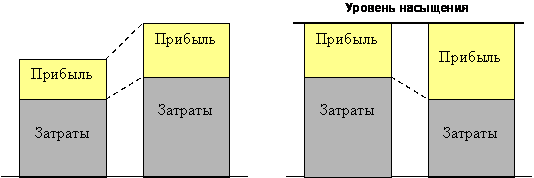
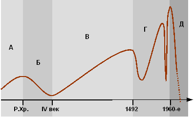
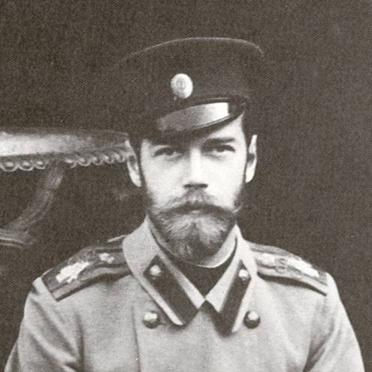
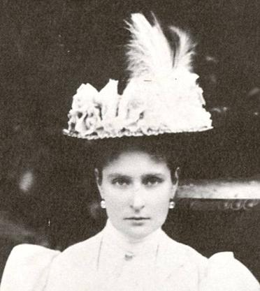
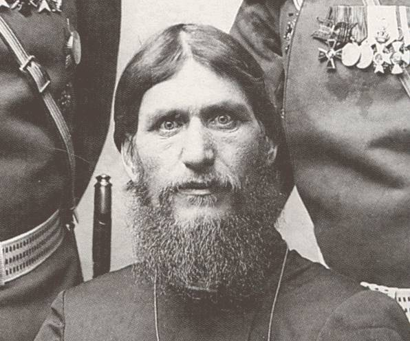

|
На
главную
Глава 11. Диалектика истории
История общества, история общественного
сознания – это история борьбы двух противоположных начал. Это
история борьбы Добра и Зла, борьбы двух принципов построения общественного
сознания – сознания, получающего удовольствие от любви, и сознания,
получающего удовольствие от насилия. В этой борьбе между собой
сознания активно используют материальный мир.
История последних 500 лет – это история отчаянной
борьбы человека и числового идола, денежного рабства и свободы
духа, семьи и счётной книги, народов и корпораций, история борьбы
бога и дьявола.
История Запада
I.
Сжатие времени
Вернёмся к истории Запада, к истории возникновения
религии денег, на которой мы остановились в 4-й главе
[429]
. Давайте отступим ещё дальше вглубь веков и посмотрим на зарождение
самого христианства.
Наше время, начало XXI века, интересно тем,
что из-за резкого увеличения скорости изменения общественного
сознания благодаря новым технологиям передачи информации, мы живём
в момент сжатия и искажения времени. Мы неожиданно становимся
очевидцами истории всех последних тысячелетий.
В реальной жизни мы можем наблюдать чуть ли
не все известные формы сознаний – языческие культы, христианство,
рабовладение, фашизм, начальный дикий и зрелый «загнивающий» капитализм,
социализм, и многие другие. Интересно то, что эти формы часто
существуют внутри одной страны, или на наших глазах развиваются
в рамках одного общества.
Время – очень относительное понятие. Скорость
познания не всегда зависит от скорости изменения материи
[430]
. Скорость самопознания общественного сознания – и вызванного
этим самоизменения – вообще не зависит от физического времени.
Сегодня мы вдруг начинаем понимать то,
о чём читали когда-то в книгах по истории. История тысячелетней
давности перестаёт быть легендой или сказкой, она становится сюжетом
теленовостей.
Неожиданно становится совершенно понятно, кто
такой идолопоклонник, что такое языческий культ, и в чём различие
между христианской душой и сознанием поганого.
Возникновение христианства
Христианство возникло в недрах разлагавшегося
от насилия и от всех мыслимых и немыслимых пороков рабовладельческого
Рима. Оно возникло как религия рабов, как религия униженных и
оскорблённых, жаждавших спасения, выхода из ада поганой жизни.
История появления Библии, главного свода христианских
заповедей, очень противоречива. Как мы знаем, Библия включает
две большие части – Новый завет и Ветхий завет.
Новый завет состоит из евангелий – нескольких
книг, написанных непосредственно учениками Христа или с их слов.
Новый завет появился вскоре после смерти Христа. Поскольку наше
летоисчисление ведётся от рождения Христа, то, соответственно,
это произошло в I веке нашей эры. Новый завет написан на древнегреческом
языке.
Все главные книги Ветхого завета появились,
по разным данным, или между 15-м и 4-м веками до нашей
эры, но никак не позднее 2-3-го веков до нашей эры, то
есть задолго до рождения человека или символа по имени Христос.
Ветхий Завет примерно в три с половиной раза толще, чем Новый.
Ветхий завет – это религия иудеев. Он написан
на древнеиудейском языке, содержит святые для иудеев Тору
и Талмуд, а также всевозможные рассказы и предания из истории
иудейского народа.
В те первые годы своего существования, когда
христианство было религией рабов и религией бедных общин, оно
включало в себя только евангелии, то есть только Новый
завет.
* * *
Несомненно, что массы людей приняли христианство
не потому, что Христос был чудотворцем или волшебником, но потому,
что люди хотели верить в его учение.
Христианство так быстро распространялось среди
низов Римской империи, а верхи Рима так быстро разлагались от
обжорства, распутства и извращений, что постепенно христиане стали
численно преобладать над идолопоклонниками. Этому способствовало
и то, что многие римляне просто отказывались иметь детей, чтобы
у них оставалось больше времени и денег на плотские и материальные
удовольствия.
Вначале римские солдаты активно убивали христиан,
но эта борьба была бесполезной – нельзя же было истребить всех
работающих. Тогда постепенно в христианские общины стали приходить
богатые люди. Естественно, что они шли для того, чтобы получить
власть над этими общинами. Если у первых христиан не было ни иерархии,
ни отдельных священников, то к III-IV векам нашей эры общины уже
имели сложившуюся иерархию и отдельный класс проповедников.
* * *
В Древнем Риме немаловажную роль занимали иудеи.
Римские рабовладельцы дрались между собой за золото. Деньги и
золото в те времена имели даже большую силу, чем сейчас. За них
можно было не только купить место в парламенте или снарядить войска
для разграбления непокорной провинции; за них можно было купить
не только душу. За них можно было купить физическое тело и жизнь
рабов.
Но кто контролировал деньги и золото в Риме?
Как и сегодня – тот, кто контролировал торговлю. Кто расселился
по всему античному миру, чтобы держать под своим контролем торговлю
между его разными частями?
Именно иудеи во многом контролировали торговлю
в Римской империи, несмотря на отдельные гонения на них, среди
которых широко известно изгнание из Палестины. Они разбрелись
по всем уголкам ойкумены, создали всемирную паутину диаспор, чтобы
организовать торговые связи.
Естественно, что торговля велась товарами,
которые производили рабы. Успех и объёмы торговли напрямую
зависели от рабовладения, от объёмов производства товаров рабами
и, соответственно, от силы эксплуатации рабов. Несомненно, что
и в те годы речь постоянно шла о повышении производительности
труда рабов, о сокращении затрат и о росте ВВП.
Большим покровителем иудеев был сам Юлий Цезарь.
Он восстановил в Иудее царский сан, приказал отстроить Храм и
городские стены. Иудеи, жившие в Римской монархии, признавались
гражданами Рима. Множество иудеев получили звания и титулы. В
течение долгих лет они управляли дипломатией всего Рима. В те
времена иудеям принадлежала даже такая монополия как торговля
папирусом в Древнем Египте.
Уважение Рима к иудаизму простиралось до того,
что римские войска, вступая в Иерусалим, покрывали свои боевые
знамёна чехлами.
* * *
Каково было отношение иудеев, последователей
Ветхого завета, Торы и Талмуда, к Христу и христианству? Оно не
могло быть более ярко выражено.
Иудеи убили Христа, о чём прямо и говорится
в Новом завете
[431]
.
С этим не спорит и сам Талмуд – он признаёт
существование Христа, но описывает его как сына солдата, которого
иудеи забили камнями за чародейства
[432]
.
Перехват управления христианством
Каким же образом Ветхий завет, свод правил
иудаизма, вдруг объединился с Новым заветом, с учением Христа?
Если бы вы были римским императором (и особенно,
если бы у вас окружали советники вроде Арье Каплана), как бы вы
поступили в ситуации, когда остановить распространение христианства
репрессиями вы уже не в силах, и оно начинает угрожать власти
цезаря?
Если невозможно подавить христианство, то остаётся
единственный выход – перехватить управление христианством. Если
ты не можешь остановить их – возглавь и веди их.
Как перехватить управление религией? Через
перехват управления её высшими символами, через перехват управления
святыми точками привязки христианства
[433]
.
Римским жрецам надо было просто подсунуть Ветхий
завет под Новый завет, затем объявить Христа сыном иудейского
б-га Яхве (Иеговы), а цезаря – текущим представителем этого б-га
на земле.
Поскольку у римлян с их политеизмом, с их множеством
языческих богов-идолов вроде Зевса и Марса, не существовало развитой
монотеистической сказки-религии-философии, которую можно было
бы быстро подвести под Новый завет, то для этой цели отлично подошли
иудейские писания. Наверняка римских императоров активно «лоббировали»
и раввины, которые увидели прекрасную возможность через управление
новой религией влиять на сознание людей на многие века вперёд.
* * *
Так это и произошло – к IV-Vвеку нашей эры
Ветхий завет был объявлен частью христианства
[434]
. Христианство стало официальной религией Римской империи, а император
был объявлен святым.
Так христиан заставили поклоняться иудейскому
богу. Иудеи сначала убили Христа, а когда это не помогло, провозгласили
его иудеем – но только для гоев. Как мы отмечали, сами иудейские
жрецы и не думали признавать Новый завет и Христа как сына своего
бога. Они не признали его и в последующие две тысячи лет. Заметим,
что всё это в точности соответствует иудейскому духу и принципам
двойного сознания.
Христианство, одними из главных заповедей Нового
завета которого были равенство всех людей и любовь к ближнему,
стало вдруг прекрасно сочетаться с рабовладением.
Главный рабовладелец – римский император –
сделался представителем бога на земле. Конечно, он представлял
не Христа. Этот император был служителем другого божества – Золотого
тельца.
Мировоззрение Ветхого завета
Нас, конечно, интересует не столько форма заветов
и имена богов, сколько суть мировоззрений Нового и Ветхого завета.
Большая часть Ветхого завета не столько
мировоззренческая, сколько повествовательная. Это бесконечный
рассказ о том, где и как жили иудеи и окружавшие их народы, и
чем они занимались. Эти рассказы представляют интерес для самих
иудеев и для историков. С тем же успехом можно было бы все тома
русской истории включить как часть православной библии.
Ветхий завет содержит и знаменитые легенды
о сотворении мира, об Адаме и Еве, об их изгнании из рая, о всемирном
потопе и так далее.
Достоинство этих легенд в том, что они стали
попыткой создать цельную картину происхождения и развития мира,
причём описанную на языке, понятном каждому, даже самому тёмному,
человеку. Вероятно, наличие такой простой, но всё же единой картины
миры было гораздо лучше, чем разбивание людей на культы, у каждого
из которых было своё представление о мире.
Несомненным недостатком стала неразвиваемость
этой системы знаний, изначальное заложение знаний как догмы, удобной
для управления людьми и содержания их в страхе. Догмы, пресекающей
всякие попытки познать мир и победить страх перед природой. Отметим,
что догме была альтернатива – в древности существовало немало
философских течений, которые предлагали свои объяснения принципов
построения мира, и философия тех лет вовсе не была закостенелой.
Вероятно, это объясняется тем, что почти вся
античная философия была греческой. Рим гораздо больше интересовался
развратом, кровавыми зрелищами и чревоугодием, чем творчеством
и философией. Вариант христианства, который вводился цезарями,
изначально должен был стать системой подчинения сознания, а не
его развития. А вандалы и варвары, которые вскоре разграбили Рим
и стали прямыми предками современных европейцев, и не могли воспринять
из христианства что-либо помимо внешнего идолопоклонничества.
* * *
Ветхозаветный бог – это уже единый бог, но
это не человек. Это всемогущий идол, который требует полного
и иступлённого поклонения себе, требует от верующего слепого страха
и беспрекословного подчинения жрецам.
Исторически Яхве и был одним из культовых идолов
иудейских племён древности, который впоследствии был признан единым
идолом, единым богом всех иудеев ради объединения «двенадцати
колен» израилевых
[435]
.
От этих ветхозаветных культов и идёт идолопоклонническая
сторона христианства – предание святой силы мощам, культовое почитание
икон, молитва как заученная догма и так далее
[436]
.
С другой стороны, предметы поклонения, святые
символы, общие для всех верующих точки привязки сознания необходимы
для любой религии, поэтому совсем без икон и святых мощей обойтись
нельзя. Другое дело, что можно чтить их как символы единства
веры, а можно – как обладающие волшебной силой и исцеляющие святыни
[437]
. Второй подход недалеко уходит от язычества, колдовства и шаманства.
* * *
Далее, Ветхий завет знаменит тем, что он дал
людям десять моральных заповедей – не укради, не убий, не пожелай
жены ближнего и так далее.
С этими заповедями есть только одна проблема
– иудаизм не признаёт не-иудеев за людей. Не укради у иудея, не
убий иудея, не пожелай жены иудея. Что же касается остальных,
гоев, то с ними следует обращаться как с животными.
С другой стороны, десять заповедей – это простейшие,
базовые принципы жизни любого общества. Хотя иудеи любят повторять,
что это они дали миру мораль, многие народы (исключая европейцев,
конечно), и без Яхве не воровали и не убивали друг друга. Соблюдают
ли сами иудеи заповеди Ветхого завета?
Дух Ветхого завета – это дух практицизма, дух
рациональной материальной пользы. В нём все цели сводятся к обладанию
вещами, богатством и деньгами. Заповеди служат скорее для организации
иудеев, чтобы им было легче достигать практической цели управления
гоями.
Мировоззрение Нового завета
В чём же главные мировоззренческие отличия
Нового завета от Ветхого (помня, что хотя они и объединены в Библию,
но созданы независимо)?
Триединый бог
Бог Нового завета
– это триединый бог: Отец, Сын и Святой Дух. Это уже не всемогущее
божество-идол, которому надо слепо поклоняться и просить его о
земных благах. Это человек, и это дух, это святой дух в каждом
человеке. Бог – в каждом из нас.
Невидимый мир
Великое понятие, введённое
Новым заветом – это невидимый мир, духовный мир. Это жизнь души
человека и жизнь общества не только ради хлеба насущного, не ради
обладания материальными вещами и деньгами. Это жизнь ради внутреннего,
духовного совершенствования. Это развитие души человека ради приближения
его к вечному идеалу, свободному от пороков, это развитие для
гармонии с другими душами.
В нашем понимании, невидимый мир – это мир
отражений. Это осознание того, что то, как человек видит
мир, не менее важно, чем то, что он видит.
Невидимый мир Нового завета населён добрыми
ангелами, которые помогают очистить душу человека, и коварными
дьяволами, которые стремятся затащить её в ад. Это определения
добра и зла, о которых нас пытаются заставить забыть «психологи»
и «социологи». Но это определение добра и зла отправляет фрейдистов
и биховерианцев туда, где им место – ко всем чертям.
Равенство людей
Новый завет признаёт
полное равенство людей. Здесь нет гоев, рабов и рабовладельцев.
Перед богом все равны.
Возлюби ближнего
своего
Новый завет призывает
жить и поступать не ради идола, не ради вещей и денег, не ради
практической пользы, но жить ради человека. Возлюби ближнего своего.
Самопожертвование
ради других
Христос пожертвовал
собою ради других людей, он принял на себя грехи людские, он принял
мученическую смерть ради спасения душ остальных людей.
Битьё торговцев
и изгнание их из храма
Христос очень чётко
выразил своё отношение к месту денег и торговли. Он побил торговцев,
перевернул их лотки и изгнал их из храма
[438]
. Проще верблюду пройти сквозь угольное ушко, чем богачу не продать
душу дьяволу.
В целом, Новый завет – это духовный мир, совершенно
не похожий на узкопрактический мир Ветхого завета. Равенство,
самопожертвование и деление людей на гоев и не-гоев не могут быть
частями учения одного человека
[439]
.
Преданья старины глубокой
Быть может, всё это преданья старины глубокой?
Что же практика – критерий истины. В оценке религии, критерий
истины – сознание верующих в эту религию.
Чтобы сравнить суть Ветхого завета и Нового
завета, чтобы сравнить наличие и отсутствие духовного мира у человека,
сравните сознание последователей иудейского Ветхого завета, и
сознание последователей Нового завета. Сравните сознание современного
торгаша-иудея и сознание православного (пока сознание православного
ещё можно найти).
* * *
Был ли возможен перехват управления ранним
христианством?
Был ли мотив? Особенностью иудейской
веры является то, что сами иудеи смотрят на библию как на мир
символов, которым можно и нужно управлять. Они видят постижение
сущности бога как постижение мира символов. Постижение мира символов
даёт им возможность управлять миром символов, то есть управлять
миром и людьми от имени бога или вместо бога.
Было ли средство? Уже в 6-4-м веках
до рождения Христа в Древней Греции были развиты философские течения
пифагорейцев и платонизм, которые активно изучали управление миром
символов. Их философия была хорошо известна иудеям древности.
Нет сомнения, что она активно применялась в религиозном управлении.
Сам объём Ветхого завета говорит о том, насколько много внимания
иудеи уделяли религии.
* * *
Есть ли аналогичные исторические прецеденты
перехвата иудеями управления религиями и мирами символов?
Что же, посмотрите, как сегодня действуют иудеи
в любой отрасли науки, культуры, политики, экономике, в любой
отрасли знания.
Посмотрите, как жрецы иудаизма перехватили
управление новейшей историей. Вся история Второй мировой войны
на наших глазах превращается в историю холокоста. Спросите сегодня
у среднего американца или канадца о причинах Второй мировой войны,
загляните в их официальные школьные учебники
[440]
. Ответ, если они, конечно, в принципе помнят, что была Вторая
мировая война, будет однозначен – это была война исключительно
за спасение евреев от фашистов
[441]
.
Вспомним и бесконечные попытки перехвата управления
Советской верой в 1920-30-е годы, так называемые антисоветские
и антипартийные блоки: дискуссия о профсоюзах, правый уклон, новая
оппозиция и так далее?
Во главе всех этих идеологических усилий по
захвату власти стояли Каменев, Зиновьев, Троцкий – соответственно
Лев Борисович Розенфельд, Овсей-Герш Аронович Радомысльский и
Лев Давидович Бронштейн.
Представьте, что бы было с Россией, если бы
тогда победил не Сталин, а Бронштейн и Розенфельд. Как вам Овсей-Герш
в роли правителя России?
II.
Жрецы иудаизма и товарно-денежные отношения
Иудеи, представив историю Европы как историю
гонений на иудеев, сами заставляют нас задуматься. Действительно,
почему именно на них были такие гонения, каких не было ни на один
другой народ?
Безусловно осуждая антисемитизм и еврейские
погромы, как осуждая и всякое физическое насилие, зададимся вопросом,
почему во всех странах иудеи жили в гетто, отдельными общинами
и отдельно от христианского населения?
Почему для иудеев в России существовала черта
осёдлости, а, например, татары свободно селились в Москве вместе
в русскими? Хотя татары не были христианами, да и со времён ига
у русских были не самые приятные воспоминания о татарах.
Видимо, ответ лежит в том, что татары придерживаются
веры, которая отличается от христианства, но не противоречит ему.
Их вера человечна и спокойно сосуществует с христианством.
Как мы отмечали в 4-й главе, и как мы увидим
далее, иудаизм не только не является неполной частью христианства,
но он противоположен христианству.
* * *
Ещё раз подчеркнём, что мы говорим только о
вере, и только о борьбе сознаний. Национальность, происхождение
и гены тела человека не определяют автоматически его веру. Мы
сознательно говорим об иудеях как о приверженцах определённого
мировоззрения, а не о евреях как национальности.
Иудаизм – это секта, построенная в основном
по родо-племенному признаку. Жрецы секты пытаются тянуть в неё
всех евреев.
Иудеем же по духу может быть и русский, и англичанин,
и китаец. Христианином тоже может быть человек любого племени.
Иудей – это не национальность, это образ мышления. Если не станет
иудеев еврейского происхождения, их место немедленно займут другие.
Еврей может и не быть иудеем. Среди советских
евреев было много замечательных людей, вспомним хотя бы Г.С.Альтшуллера,
автора ТРИЗ, без чьих идей не появилась бы эта книга.
Другое дело, что в древние и средние века национальность
и вера почти всегда совпадали; либо люди того времени не делали
различия между верой и национальностью.
Но не надо и стесняться обсуждать иудаизм из-за
фобии антисемитизма. Как признался Арье Каплан, эта фобия совершенно
осознанно создаётся в нашем сознании, чтобы парализовать его сопротивление.
* * *
Как в Древнем Риме, так и во все иные века,
власть жрецов иудаизма над миром строилась на их власти над идолом,
над деньгами. Соответственно, условием для усиления власти жрецов
иудаизма было развитие товарно-денежных отношений. Всегда в истории,
когда возникали товарно-денежные отношения, иудейские купцы немедленно
концентрировали в своих руках деньги и власть. У стран и народов,
среди которых они жили, неизбежно возникали серьёзные проблемы.
Вскоре после зарождения христианства было немало
гонений на иудеев как на убийц Христа, и как на племя, которое
отказалось принять общую веру, которое отказалось от духовности
и продолжало поклоняться материальным идолам.
Затем, в течение первых пятисот-шестисот лет
после краха рабовладельческого Рима и до XI-XII веков, не было
товарно-денежных отношений. У купцов не было особого шанса захватить
власть. Не было и гонений на иудеев.
По мере того как в средние века развивалась
внутриевропейская торговля, начали усиливаться и товарно-денежные
отношения. Купцы получили возможность монополизировать власть.
В это время и возобновляются гонения на иудеев.
Для купца торговля тем успешнее, чем лучше
он умеет обманывать своих покупателей и продавцов. Обман в христианстве
считался и считается большим грехом. Торговля и обман разлагают
душу и разрушают духовный мир человека. Талмуд и Тора, наоборот,
не только не запрещали, но и поощряли как накопительство, так
и обман гоев. Иудейские купцы выработали двойное сознание тысячелетия
назад и веками усовершенствовали его.
Уже в средние века, задолго до появления развитого
капитализма, возникают первые самые настоящие кризисы концентрации
капитала и кризисы денежного обращения. Иудейские купцы накапливали
у себя огромные количества золота. Как типичные исступлённые идолопоклонники,
накопив золото, они сидели на сундуках, пересчитывали монеты и
не тратили их, получая удовольствие просто от факта обладания
идолом.
Христианским королям не оставалось иного выхода,
кроме как конфисковать у иудеев деньги. Но короли, например, Филипп
II Август, в отличие от иудеев, не сидели на сундуках, а тут же
тратили конфискованное на нужды государства. Поэтому у купцов
снова возникала возможность накопить золото. Процесс накопления-изъятия
повторялся многократно.
* * *
Жрецы иудаизма хорошо понимают, что там, где
есть разделённое общество, где есть торговля и товарно-денежные
отношения, там идол управляет людьми, и там жрецам денег принадлежит
неограниченная власть.
Поэтому они страстно желали развития мировой
торговли. Именно на деньги испанских иудеев были снаряжены корабли
Колумба, которые искали торговый путь в Индию в обход мусульманского
мира. Они получили даже больше, чем ожидали – не только рынки,
но и миллионы рабов. Есть много иронии и закономерности в том,
что Америка была открыта на деньги иудеев.
* * *
Развитие религии денег, свержение христианской
власти в странах Европы были напрямую вызваны революционной и
заговорщической деятельностью иудеев. Купцы и их деньги, масонские
ложи и иудейские общины стояли за всеми буржуазными революциями.
Как мы отмечали в 4-й главе, главной целью
буржуазной революции является полная передача власти идолу. Другим
основным пунктом каждой буржуазной революции в Европе было наделением
иудеев правами, которые отсутствовали у них, как у иноверцев,
в христианских государствах.
В Голландии иудейская община расцвела сразу
после первой в новейшей истории буржуазной революции. В Англии
иудеям было вообще запрещено селиться, начиная с 1290 года; но
буржуазная революция 1640 года наделила их всеми правами. Во Франции
все права иудеям дала Великая французская революция 1791 года;
в Германии – буржуазная революция 1848 года; в России – буржуазная
революция февраля 1917 года.
Мир символов Каббалы
Каким образом глубины иудейской религии связаны
с товарно-денежными отношениями?
Иудеи не признают Новый завет и его духовный
мир. Но у них есть свой духовный мир, свой «новый» завет.
Он называется Каббала.
Каббала неразрывно связана с товарно-денежными
отношениями, деньгами и цифрами. Каббала получила сильное развитие
в XIII веке у иудеев, живших в Испании. Как мы отмечали в 4-й
главе, именно в это время в Европе стали известны арабские цифры,
намного упростившие счёт и способствовавшие быстрому распространению
религии денег. Именно с тех пор европейцы всё чаще стали смотреть
на мир как на последовательность цифр.
Десятичные цифры пришли в Европу от арабов,
откуда и получили своё название. Изначально эти цифры были изобретены
в Индии не позднее V века. В XIII веке Испания была под властью
арабов, а иудеи были поставлены арабами управлять испанским населением.
В то время иудеи были самыми близкими из европейцев к арабскому
миру. Они одними из первых узнали, что такое десятичные цифры
и познакомились с трудами арабских математиков, астрономов и физиков.
* * *
Сразу после возникновения ислама, с VIII и
по XIIIвек, арабский мир стал центром мировой науки и культуры.
Учёные Арабского Халифата активно переводили эллинические источники
[442]
, изучали индийских мудрецов, и сами немало продвинулись на пути
познания.
Именно арабскими мудрецами того времени были
изобретены и подробно описаны десятичные дроби, извлечение корней,
квадратичные и кубические уравнения, сферическая тригонометрия,
учение об удельных весах, и многие другие науки. В IX веке было
проведено измерение градуса меридиана для определения размера
земного шара.
Медицинское руководство Ибн-Сины стало настольной
книгой врачей Востока и Запада на несколько веков. Арабы составили
подробные анатомические атласы и изучили строение человеческого
глаза. В X веке успешно делались такие операции, как удаление
катаракты.
В это время всё, на что хватало ума у европейских
племён – это вырезать друг друга. Кроме междоусобиц, европейцы
под религиозными предлогами устраивали Крестовые походы для разграбления
христианского же Константинополя и богатого тонкими восточными
тканями и изысканными пряностями Иерусалима. В походе за «гробом
господнем» они заодно вырезали половину населения этих городов.
Ислам был весьма веротерпимой религией. Поскольку
Коран признаёт Христа одним из Пророков, то в землях Халифата
христианам (как и иудеям, как и другим верующим), разрешалось
строительство храмов и ведение служб. В некоторых храмах в Иерусалиме
поочерёдно велись молитвы за Аллаха мусульманами и за Христа христианами.
После освобождения Иерусалима от крестоносцев, христианские храмы
продолжали работать, а христиане не подверглись никаким гонениям.
В те времена центром мира, в который стекались
учёные и поэты, был великий Багдад. В Багдаде существовала целая
улица книжных лавок, на которой постоянно работало более ста книготорговцев.
В это время в среднем европейском монастыре было в лучшем случае
пять-десять книг.
К сожалению, крестоносцы не были единственными
дикарями средневекового мира. С Востока на Халифат напала монгольская
Орда, которая разрушила города, сожгла библиотеки и сложила пирамиды
из черепов убитых ими жителей. В 1240 году пала Киевская Русь,
в 1258 году те же монголы взяли Багдад.
После этого центр арабской культуры сместился
в Каир и в Испанию, где с десятичными цифрами и познакомились
каббалисты.
Суеверные и примитивные европейцы и алчные
иудеи восприняли полученные от арабских мудрецов знания не как
знания, но как повод создать новый культ цифр и новую секту жертвоприношений.
В европейско-иудейском исполнении математика стала пляской на
костях с черепом в руке и с заклинаниями во имя фаллоса Бааля.
* * *
Каббала – это учение об управлением миром через
управление символами. Основой мироздания, согласно Каббале, являются
10 первочисел и 22 буквы еврейского алфавита. Поскольку мир сводится
к числам, управление миром сводится к управлению числами
[443]
. Всё сходится.
Естествознание
– управление природой через символы и числа, деньги – управление
людьми через числа.
В христианстве средних веков природа рассматривалась
как святая, как создание бога, которому человек должен радоваться
и поклоняться. Человек не смел управлять природой, не смел ставить
себя выше бога. Каббала полностью снимала это табу. Она считала,
что природу, пусть и созданную богом, можно и нужно постичь через
символы и научиться управлять ею вместо бога.
* * *
Похожее табу лежит сейчас в материализме. Если
один человек признаёт материю первичной, и, соответственно, не
признаёт возможности управления сознанием, то тот, кто
поставит целью управление сознанием, получит немедленное
и огромное преимущество.
Каббала и цель жизни
Хотя Каббала и снимает христианские табу на
управлению миром и сознанием человека, это ещё не делает её антихристианской
религией по сути. Всё зависит от того, что является целью управления.
Давайте спросим напрямую у знатока Каббалы,
что является целью жизни. Никаких сомнительных протоколов сионских
мудрецов – только общепризнанный иудеями и созданный для иудеев
источник – «Центральный Еврейский Ресурс» по адресу www.sem40.ru.
В мир ценностей Каббалы нас отведёт раввин
Михаэль Лайтман. Рав Лайтман – автор двадцати книг о Каббале,
ученик Рава Баруха Ашлага. Рав Барух Ашлаг – сын Рава Иуды Ашлага,
величайшего каббалиста XX века. Считается, что в Иуду Ашлага вселилась
душа самого Моисея. Рав Лайтман – руководитель каббалистической
группы Бней Барух в Израиле.
Рав Лайтман считает, что Россия станет столицей
Каббалы, а русская душа особенно хорошо подвергнется её воздействию
[444]
. Уже одно это должно сильно заинтересовать нас. Предоставим слово
Раву Лайтману (выделения – наши, цитируется только существенное)
[445]
.
Каббала – это самая практическая наука, объясняющая
нам "как хорошо жить".
Развитие души создает в человеке различные
потребности. Само по себе тело мертво, и только душа определяет
его особенности, свойства, стремления. Душа и есть то самое желание
получить наслаждение, которое создал Творец. Развиваясь, душа
изменяет свое желание от:
1)
желания насладиться только животными наслаждениями, теми, которые
есть и у животных, такие как питание, семья
[446]
, секс;
2)
к желанию насладиться богатством;
3)
к желанию насладиться знатностью, силой,
славой;
4)
знаниями
[447]
;
5)
возвращением в свое первоначальное состояние, из которого она
снизошла в наш мир. Это последнее состояние называется духовным.
Отличие всех учений от Каббалы в том, что они
построены на уничтожении желаний или их кардинальном уменьшении,
по крайней мере. А их нельзя уничтожать, ведь это вся наша природа,
это единственное, что создал Творец.
В Каббале существует только один основной закон,
из которого следует все остальное – закон максимального наслаждения.
Творец сотворил человека со злым, эгоистическим
началом, а не как ангелов, не как неживую, растительную, животную
природу. Ангелы – это силы, не имеющие свободы воли, как животные
в нашем мире. Управлять творением можно только своим свободным
выбором.
Все "духовные" методики построены на том, чтобы
меньше кушать, селиться в замкнутых местах, уединяться от всех,
меньше дышать, низводить себя до уровня растения и даже неживого,
вы можете йога в землю закопать – и он будет жить. Представляете,
насколько убивается эгоизм! Думать только одну мысль – то
есть все построено на том, чтобы ограничить человека во всем.
Но при этом достигается не цель творения "Стать
равным Творцу", а достигается ничтожно малое комфортное существование
на низшем уровне, подобно камню или растению.
Каббала утверждает, что только дальнейшее
развитие эгоизма под влиянием нечистых миров и его исправление
чистыми мирами, позволит человеку овладеть и правильно использовать
все эгоистические желания, созданные Творцом.
Именно прибавление к своему начальному,
земному эгоизму, эгоизма духовного (нечистых сил, клипот),
чтобы постоянно было что исправлять, позволяет человеку овладевать
все большими силами природы и управлять ею. Позволяет достигнуть
такого состояния, когда человек становится выше всего мироздания,
а не ниже его.
Принцип Каббалы совершенно противоположен
всем методикам и религиям: развивать свой эгоизм, свои
желания как можно больше. Это парадокс, но именно он и приводит
к исправлению природы человека, истинному совершенству и наполнению.
Каббала говорит о том, что Творца можно ощутить,
именно используя желания, ни в коем случае не уничтожая их, а
только меняя намерение их использования. Все ощущения иных методик
построены на угнетении эгоизма, когда человек, подавляя свое "Я",
как бы пассивно ощущает извне нечто духовное. Поэтому основное
отличие – в использовании "Я".
Необходимо научиться управлять судьбой. Каббалисты
призывают человека изучить систему управления миром. Мы обязаны
по замыслу Создателя управлять машиной мироздания. В этом
цель сотворения человека. Именно поэтому и создан человек не как
все прочие создания, а единственный со свободой воли – чтобы самому
исследовать и оправдать управление Творца и заменить собою Творца
в этом управлении всем мирозданием.
* * *
Как видим, здесь кратко изложено всё мировоззрение
культа денег
[448]
, исследованию которого посвящена 5-я глава нашей книги. Как видим,
прямые противоречия между христианством и рыночной экономикой,
которые мы привели в 3-й главе, возникли отнюдь не случайно. То,
что нам начал объяснять Рав Каплан в 4-й главе, логически завершил
Рав Лайтман.
Складывая
принципы Каббалы
–
удовольствия от силы и от животных удовольствий,
–
закона максимального наслаждения,
–
эгоизма нечистых миров,
мы и получаем фундаментальный принцип религии
денег/ рыночной экономики – максимизация удовольствия от насилия.
И это прямое выражение принципа Антихриста, принципа дьявола.
Навряд ли сатанизм можно было бы сформулировать
более чётко. Каббалисты и не скрывают того, что их «метод» прямо
противоречит всем остальным религиям. Всё, что является смертными
грехами в христианстве, становится целью в Каббале.
Под именами «Творец» и «Создатель» в Каббале
понимается не Яхве, но бог света
[449]
, всё тот же Люцифер. Отсюда и постоянные упоминания нечистых
сил
[450]
.
Религия денег воистину превзошла всех своих
поганых предшественниц. Даже в Древнем Риме поклонялись всё же
не самому Сатане, а набору идолов.
Каббала не смогла бы управлять миром христианского
человека. Поэтому она низводит человека до уровня животного, и
управляет им как животным. То, что фашисты делали физическим насилием,
Каббала делает через насилие сознания посредством телевидения
и посредством других каналов доступа к сознанию.
* * *
Независимо от того, нравится или не нравится
нам рыночная экономика, мы должны чётко понимать, что для успеха
в бизнесе человек обязан придерживаться её принципов.
Сатанизм и Каббала действительно дадут бизнесмену
преимущество по сравнению его с конкурентом, который будет пытаться
действовать согласно христианским принципам добра, любви к ближнему,
справедливости и так далее.
Каббала и возникновение европейского естествознания
Всё европейское естествознание, всё материалистическое
представление о мире в немалой степени основываются на Каббале.
В 4-й главе мы показали логически-историческое
развитие взгляда на мир как на некую механистическую, физическую,
математическую конструкцию. Теперь проследим, как развитие естественных
наук было связано с Каббалой.
* * *
Одним из первых, кто открыто поставил целью
нарушить христианские табу управления природой, стал в конце XVI
века английский лорд-хранитель печати, а по совместительству «философ»
Френсис Бэкон (1561 – 1626). Френсис Бэкон выдвинул принцип порабощения
природы, и через неё – порабощения народов земли под власть Англии.
Жизнь англичан в средние века была настолько
мерзка и противна им самим, что они решили сделать её такой же
мерзкой для людей всего мира. Не умея победить в обычном бою,
они использовали природу и ложь для насилия над другими народами.
В последующие пять веков англичане немало преуспели в этом. Опасайтесь
народов, у которых убогий внутренний мир.
Выдвигая знаменитый лозунг «Знание – сила»,
Ф.Бэкон понимал его в буквальном, материалистическом, в физическом
смысле – поскольку он не признавал духовный мир. Знание – физическая
сила. Знание – возможность насилия через физику.
В 1621 году сей лорд-хранитель в лучших философских
традициях Англии был осуждён за взяточничество и смещён со всех
своих постов.
* * *
Следующим в ряду «философов», обосновывавших
материалистическую картину мира, стал «Бенедикт» Спиноза. Спиноза
был одним из первых монических материалистов. В отличие
от своих предшественников, например Декарта, который верил и в
бога, и в душу, и в математику, Спиноза отверг существование бога
и духовного мира.
Барух Спиноза жил в 1632 – 1677 годах в Голландии,
был сыном торгаша-иудея, и сам тоже был торгашом. Спиноза прекрасно
знал Тору, Талмуд и Каббалу. В традициях Ветхого завета, он видел
в мире единственно практическую, материальную сторону. Барух не
только не видел и не понимал духовного мира, но он с яростью выступал
за уничтожение этого мира и всех тех, кто видел и понимал его.
В отличие от традиционных иудеев, признававших
главенство бога Яхве, для Баруха мир стал чисто каббалистическим
– математической цифровой системой.
Барух считал, что человек может понять мир
только рационально, разумом, рассудком. Спиноза особенно подчеркнул,
что чувства вредны, чувства мешают человеку оценить числовую –
и денежную – прелесть мира.
Одновременно Барух ввёл в науку понятие «свободного
человека», которое уже знакомо нам по Каббале. Свободный человек
руководствуется в своих действиях только практической пользой
и рациональным разумом. Свободный человек свободен от чувственности,
нравственности и морали.
Конечно, такому свободному от души человеку
не остаётся ничего, кроме поклонения материальным предметам.
Библию же Барух посчитал нужным оставить –
для толпы этих людей с их дурной натурой, которые не способны
к разуму. Барух считал, что для достижения практических и материальных
целей подходят любые средства.
Таким образом, Спиноза положил принципы Каббалы
в основу научного мировоззрения. Именно Каббала дала толчок развитию
материалистического естествознания.
* * *
Отметим, что нет ничего удивительного в том,
что для развития науки понадобилась Каббала, понадобились знания
извне христианского мира.
Переход от христианства к материализму и к
символьно-числовой науке был настолько сильной сменой мировоззрения
(или как сейчас модно говорить, парадигмы), что его было сложно
осуществить, исходя из внутреннего набора знаний христианства.
Более того, был необходим сильный внешний толчок для начала такого
перехода.
Частично вне-христианские знания были получены
от изучения в средние века античных текстов. Но для того, чтобы
монахи и аббаты, которые в то время занимались исследованиями,
поверили в науку как в реальность, символьно-числовое представление
мира должно было быть преподнесено им как божий промысел.
Изучая мир символов, они должны были искренне
считать, что открывают тайны бога. Полная мистики Каббала хорошо
подошла на роль такого переходника.
Как мы отмечали в 4-й главе, абсолютное большинство
учёных и «просветителей» того времени принадлежали к масонским
ложам и черпали вдохновение из масонских и каббалистических таинств.
Масонские ложи были прямо связаны с каббалистами, у которых они
позаимствовали почти всю свою символику, включая «всевидящее око»
и другие каббалистические знаки, которые мы видим, например, на
долларовой банкноте.
* * *
Следующим видным экзекутором Христа нового
времени стал английский плебей Томас Гоббс (1588 – 1679). Гоббс
всю жизнь выслуживался в качестве гувернёра у своих аристократических
хозяев.
Гоббс отверг «предрассудок» о существовании
мысли как чего-то возвышенного, и представил её... просто как
один из видов механического воздействия. Как и Барух, Гоббс
свёл весь мир к цифрам геометрии и к цифрам механики. Гоббс тоже
решил, что религию надо сохранить – для управления высшими механиками
тёмной массой тупого народа.
Взгляды Спинозы и Гоббса, а также физиков и
математиков, о которых мы говорили в 4-й главе, напрямую легли
в основу естествознания и религии денег. Конечно, Барух и Гоббс
только выразили то, что думала и чего хотела вся европейская и
иудейская верхушка того времени. Иначе все взгляды этих «философов»
просто бы забылись.
Такими они и стали, эти «апостолы» новой поганой
веры – взяточник, торгаш, лакей и спекулянт
[451]
. Какой была их вера, таким и стал наш мир.
* * *
Согласно словарю В.И.Даля, физика –
это мёртвый мир в противоположность живому миру души человека.
Каббалисты и английские материалисты и обратились
к силам мёртвого мира, чтобы покорить и уничтожить живой. И воцарили
они в мире власть сил Зла.
Материализм и уничтожение духовного мира
Как мы отмечали выше, в христианстве, в которое
был искусственно вставлен Ветхий завет, переплелись душа и идол.
С одной стороны, в христианстве процветал культ
бога. С другой стороны, христианство пыталось построить общество
на принципах добра, справедливости и самопожертвования, на торжестве
духа над материальным миром, на развитии сознания, на развитии
души.
Естествознание один за другим легко опровергало
культовые мифы о Земле как центре Вселенной, о чудесах святых
мощей и прочие ветхозаветные сказки. Но вместе с этими элементами
идолопоклонничества, наука начала отрицать христианство в целом.
Вместе с россказнями иудейского Ветхого завета
был уничтожен духовный мир Нового завета. Наука уничтожила душу,
заменив её цифрами и символами Каббалы.
Материализм Бэкона, Баруха и Гоббса оставил
человеку только одну цель – обладание вещами, насилие над другими
ради обладания вещами, и получение удовольствия от вещей, цифр,
символов и от насилия.
Как мы помним, человеку можно сказать, что
он существо возвышенное и духовное, и он будет возвышенным и духовным.
Человеку можно сказать, что он – числовое животное, и он будет
животным.
В невидимом, в духовном мире места хватит всем.
Но если поклоняться идолу, это неизбежно приведёт к конкуренции
за обладание идолом, за обладание золотом. Это принципиально ведёт
к конфликту, к насилию.
* * *
Иудеи могли праздновать победу – сначала они
подсунули Ветхий завет под христианство, срастили его с христианством.
Потом они же разоблачили Ветхий завет и вместе с ним выкинули
Новый завет. Злу не удалось уничтожить христианство в зародыше,
но это почти удалось через полторы тысячи лет.
При
этом иудеи и масоны были совершенно согласны сохранить сказки
Ветхого завета, и, когда им выгодно, выступить в защиту такого
христианства. Им ведь всё равно, управлять ли сознанием через
брэнд автомобиля, брэнд моды и брэнд поп-звезды, или через
брэнд иконы и святой мощи. Главное, чтобы сознание было слепым
и рабским, а точки привязки – контролируемыми.
* * *
Интересно отметить, что Реформация, уничтожившая
власть христианской церкви и ставшая столь важной для развития
духа капитализма, с теософской точки зрения отрицала не Новый,
а Ветхий Завет. Для материально озабоченных протестантов было
бы логичнее отрицать именно Новый Завет.
Объяснение, видимо, лежит в том, что в «тёмные»
средние века, когда орудия труда были весьма примитивны, средний
рабочий день составлял в Европе... 9 часов довольно неторопливого
труда. Плодов этого труда было достаточно для того, чтобы отмечать
до
150 праздничных дней в году, каждый из которых был посвящён
своему святому. В такие дни вообще никто не работал.
Чтобы уничтожить все эти выходные дни, пришлось
уничтожить всех святых, которым они были посвящены. Абсолютное
большинство святых обитало в Ветхом Завете.
Как только крестьяне были освобождены от религиозного
дурмана, стандартный рабочий день на мануфактурах составил 14-18
часов потогонного труда под постоянным надсмотром. Новым жилищем
стали грязные пещеры около фабричных труб. В отличие от первобытных
пещерных дикарей, работники мануфактур за свои пещеры ещё и платили.
На заре капитализма многие рабочие – вчерашние
крестьяне – вообще не понимали, зачем трудиться сверх того, что
необходимо для проживания. Если они зарабатывали достаточно за
6 часов, то они больше не работали. Им не хотелось покупать больше
товаров. По деревенской христианской привычке им хотелось иметь
больше свободного времени, чтобы успевать радоваться жизни. В
ответ предприниматели снижали расценки на труд до такого уровня,
чтобы за 18 часов рабочий еле-еле зарабатывал на хлеб.
Конкуренция религии денег с христианством
Подробно о
первых годах борьбы религии денег с христианством мы говорили
в 4-й главе.
Несмотря на удары, наносимые масонами и иудеями,
христианство было очень сильно в душах многих европейцев, особенно
крестьян. За революциями следовали контрреволюции, за Реформацией
– Контрреформация.
Таким образом, буржуазии, масонам и каббалистам
приходилось бороться за сознание людей в жёсткой конкуренции с
христианством. Эта борьба начала приносить некоторые положительные
перемены. Чтобы доказать преимущества науки – и стремясь платить
поменьше рабочим – капитализм изобретал новые станки, механизмы,
машины, которые действительно облегчали труд и иногда улучшали
жизнь человека.
Конечно, это улучшение европейской жизни было
построено непосредственно на костях и на крови рабов в колониях,
которых европейцы истребляли миллионами.
* * *
Поскольку история – это развитие противоположностей
в борьбе между собой, то в противостоянии религии денег улучшилось
и само христианство.
Библия была переведена на живые языки. Книгопечатание
позволило сделать её доступной для массового чтения. Христиане
стали обучаться грамоте. Из христианства ушли многие предрассудки,
проявления слепого поклонения церковным образам и культовым святыням.
Христианское начало получило развитие в нерелигиозном гуманизме.
Многие учёные XVIII-XIX веков прекрасно сочетали
духовные принципы и естественнонаучный подход. До поры до времени
они могли быть материалистами по отношению к природе, но идеалистами
по отношению к другим людям и к обществу в целом.
После смены власти в ходе буржуазных революций
и передачи земли и средств производства под абсолютную власть
денег, религия денег управляла людьми в основном через материальный
мир – через товарное управление.
На этом этапе основные усилия религии денег
направлялись на порабощение природы, поэтому в духовном мире открытые
стычки с христианством происходили лишь периодически. В течение
довольно продолжительных отрезков времени не было видимого конфликта
между религиями за сознание – европейцы могли верить в кого угодно,
всё равно для физического выживания они не могли избежать подчинения
золоту.
Религия денег избрала тактику постепенного,
ползучего захвата сознания, через развращение деньгами и материальными
соблазнами.
По мере возрастания доли городского населения,
религия денег обретала всё больше последователей. Горожане в принципе
не могут обойтись без товарно-денежных отношений, а в результате
естественного отбора выживали те из них, кто быстрее принимал
нового бога-идола.
III.
Победное шествие материализма
Рациональный западный материализм побеждал
все иные философии и религии простым физическим уничтожением.
У материализма и не могло быть иной цели, кроме обладания материальным
миром, и ради этого он истреблял живших в нём людей.
Материалисты первыми открывали новые виды вооружений,
и немедленно использовали их для уничтожения населения тех стран,
в которых это оружие ещё не было открыто. Для одних природа была
святой, для других – средством порабощения.
Гонка вооружений быстро уничтожала честь и
веру. При равенстве в оружии побеждает та армия, у которой сильнее
дух, воля, отвага. При постоянном усовершенствовании оружия побеждает
тот, кто первым завладеет этим оружием, не важно насколько грязным
способом.
Рациональный материализм уничтожал не только
христианский мир, но и все остальные миры, которые попадали в
его прицел – индейские, индийские, африканские, азиатские и другие.
Единственной защитой от материализма было овладевание
материализмом. Но тот, кто овладевал им ради защиты, сам становился
материалистом. Гонка европейских вооружений, начавшаяся с открытий
Ньютона, требовала полного сосредоточения усилий стран на математике
и физике, чтобы не проиграть конкурентную борьбу, ставкой в которой
была жизнь.
Образование Соединённых Корпораций и возникновение Орды
В конце XVIII века было основано первое государство
религии денег в чистом виде – Соединённые Штаты Америки.
Как мы помним, Америка была открыта Колумбом
на деньги иудеев. Хотя среди её первых поселенцев было немало
верующих, объединить разношёрстную толпу иммигрантов, у которых
отсутствовали общая вера, общие символы, общая культура и общее
прошлое, было возможно только на принципе абсолютного поклонения
безличному золотому идолу.
Как мы отмечали в 4-й главе, все основатели
США были открытыми масонами, и в основу своего государства
они положили чисто масонские принципы.
* * *
Очень быстро эта страна «свободы» превратилась
в самое настоящее поганое рабовладельческое государство. Первыми
рабами в Северной Америке были белые. В рабство продавались,
или в рабство забирали – по религиозным причинам – за неуплату
долгов.
Рабский труд оказался экономически очень выгодным.
Но аборигенов-индейцев превратить в рабов не удалось из-за силы
их свободного духа. Поэтому индейцев просто истребляли
[452]
. Рабов стали завозить из Африки.
При этом официально выступавшие против рабства
европейцы, во-первых, активно посредничали при работорговле и
наживались на ней, а во-вторых, с удовольствием покупали в Америке
дешёвые продукты, произведённые рабами.
Сатанизм и культ насилия в США стали повседневной
жизнью. Достаточно вспомнить о Ку-клукс-клане
[453]
, судах Линча и вечном разбое Дикого Запада.
* * *
Во второй половине XIX века масоны добили главный
и последний оплот христианской власти в Западной Европе. В 1870
году был свергнут сам Папа Римский. Папа был отправлен в Ватикан,
где и просидел в изгнании и изоляции до 1929 года.
Одновременно шло быстрое укрупнение денежного
капитала и образование крупных корпораций, которые теперь безраздельно
контролировали всю жизнь в Европе и в Северной Америке. Уже ничто
не сдерживало их планов.
В конце XIX – начале XX веков произошёл системный
переход, переход количественных изменений в качественные. Под
сохранившейся внешней оболочкой государства, оставшейся от христианства,
вырос совершенно иной зверь. В истории это «сращивание государственного
аппарата с промышленностью и финансами» было названо империализмом.
Фактически, государства перестали быть тем,
чем они были раньше. Мы будем называть эти новые образования именами,
соответствующими их сути:
Соединённые
Корпорации Америки,
Соединённые
Корпорации Великобритании и Северной Ирландии.
В Соединённых Корпорациях Америки место прежних
50 штатов заняли 50 крупнейших корпораций. Вместо Мичигана возник
Дженерал Моторз, вместо Техаса – Стандард Ойл, вместо Огайо –
Проктэр и Гэмбл и так далее. Правления корпораций получили куда
больше реальной силы, чем марионеточные правительства штатов,
которых оставили для сохранения имиджа «демократии».
После объединения корпораций внутри стран континентальной
Европы, они сформировали свой Европейский Союз Корпораций.
Тем временем на востоке появился Холдинг «Япония».
Так образовалась Орда Корпораций.
* * *
В начале XX века между европейскими рабовладельцами
стали возникать серьёзные противоречия. Весь материальный мир
был поделен, причём Соединённым Корпорациям Великобритании достались
самые жирные куски, в результате чего они контролировали практически
всю мировую торговлю.
С монополией английских корпораций не хотели
мириться немецкие. Решив, что они имеют тактическое преимущество
в гонке вооружений, в 1914 году немецкие бизнесмены начали войну
за передел всего мира.
К тому времени последней христианской страной
оставалась Россия, псевдо-христианской – Австро-Венгрия, которая
как-то сохранила оболочку, оставшуюся ей от тысячелетней Священной
Римской империи. Отсталая (на пути в религию денег) Австро-венгерская
монархия кое-как защищала сознание своих многочисленных народов
от идолов религии денег. Через четверть века после падения Австро-Венгрии,
многие из этих народов примут социализм.
Масоны и иудеи Европы и Америки активно поддержали
немецкое начинание. Они рассчитывали столкнуть между собой Россию,
Австро-Венгрию и Германию, и тем окончательно покончить с остатками
христианства. А заодно и заработать на военных заказах, поскольку
без войны уже было невозможно избежать очередной сильной депрессии.
Фашизм – религия денег в открытом виде
Первая мировая война закончилась полным поражением
Германии и ослаблением всех частей Орды, при одновременном резком
усилении Соединённых Корпораций Америки
[454]
.
Власть христианства, конкуренция с которым
определяла развитие религии денег в первые четыре века её существования,
была повсеместно добита. Но неожиданно от корпораций ускользнула
окончательная победа над миром. Новым конкурентом стал социализм,
побеждавший в Советской России.
В первое десятилетие после войны Орде
[455]
было не до социализма, да она и не воспринимала его как пришедший
всерьёз и надолго. Внимание Орды было сосредоточено на восстановлении
разрушенной Европы и на американских биржевых спекуляциях.
Конкуренция с социализмом будет определять
развитие религии денег в течение последующих 80 лет.
* * *
Как мы отмечали в 7-й главе, в 1920-е годы
положение побеждённой Германии и разорённой Европы сильно облегчала
пирамида американских кредитов. С наступлением очередного кризиса
накопления и обращения, вызвавшего Великую депрессию 1930-х годов,
поступление денег из Америки иссякло. Германия погрузилась в нищету,
голод, безработицу и отчаяние.
Ещё в начале 1920-х годов в такой же нищей
и голодной Италии к власти пришла партия фашистов. Итальянские
фашисты, а вслед за ними и немецкие фашисты, будучи более прямолинейными,
чем англичане или иудеи, провозгласили принципы религии денег
в явном виде.
То, что было скрыто под покровом масонских
лож и каббалистов, к которым принадлежали все правительства Европы,
было, наконец, высказано вслух. Принципы фашистов включали:
–
превосходство одной группы людей над другой, наличие высших людей
и людей-животных;
–
удовольствие от насилия;
–
исключительную ставку на силу и оружие;
–
поклонение оккультным идолам и сатанинские обрядам;
–
попытку подчинить себе весь мир, с разделением стран на плебеев
(сателлитов) и собственно рабов.
И в точном соответствии с масонско-каббалистической
доктриной, традиционную религию оставили для управления «несвободным»
народом. В обмен на поддержку со стороны Папы, Муссолини выделил
Ватикан в отдельное независимое государство и восстановил католицизм
как государственную религию.
Христианство затем активно использовалось и
в фашистских Испании, Португалии и Германии, и в сотрудничавшей
с Гитлером Франции Виши.
* * *
Как это ни странно, фашизм вернул в жизнь стран
Европы некоторые человеческие принципы, которые были уничтожены
свободным рынком. Фашизм дал активную поддержку семье, образованию
детей, медицинскому обслуживанию.
Фашизм возник потому, что без перераспределения
власти наверху, религия денег уже не могла преодолеть кризис 1930-х
годов. Или надо было делиться с низами, или сдаться социализму.
Не стоит забывать, что Гитлер пришёл к власти в Германии сугубо
демократическим путём.
Фашизм действительно улучшал жизнь рабочих
– за счёт перераспределения капитала в виде военных заказов, но
главное – за счёт рабов в третьих странах, трудом которых делились
с немецкими рабочими. Точно так же сегодня потребители в странах
Запада имеют массу опосредованных рабов в третьем мире. Только
тогда это было физическое насилие, сегодня – в основном религиозное,
и лишь иногда военное.
При этом фашизм и не думал отменять суть религии
денег, суть идола, он не собирался отменять всемирную иерархию.
Он просто хотел поменять места в этой иерархии.
Наверх, вместо масонских лож и каббалистов,
поставить нацистскую партию; на место приближённых к верху англичан
и иудеев – арийскую и дружественную ей расы. Жрецы религии денег
традиционно отличали рабов по цвету кожи; фашисты добавили к рабам
светлокожих – славян, евреев, цыган.
* * *
Экономической программой фашизма была автаркия
– защита внутреннего рынка, опора на внутреннее развитие, производство
импортозаменителей, государственная поддержка крупных промышленных
проектов, постройка ГЭС.
Как мы увидели в Приложении А, рынок по-английски
– это такая же автаркия и протекционизм для Англии, а «свободный
рынок» – это для колоний.
В области государственного устройства фашисты
тоже просто открыто сказали то, что и так уже сложилось. Правительство
Италии напрямую состояло из глав 22-х крупнейших корпораций-монополистов,
каждая из которых отвечала за определённую отрасль промышленности.
* * *
Почему фашизм
был так спокойно встречен в Европе?
Для русских фашизм – это невиданное бедствие,
сатанинская сила, нашествие тьмы. Но ведь то же самое, что делали
немецкие фашисты со славянами, в течение предыдущих пяти веков
разнообразные европейские фашисты делали при захвате своих колоний
– испанцы и португальцы в Южной Америке, французы – в Северной
Америке и в Африке, англичане – в своих колониях на всех континентах.
Европейцы оставались фашистами со времён Рима,
и как только они совершили для себя «великие географические открытия»,
европейцы подвергли геноциду, поработили и утопили в крови весь
мир – корча при этом гримасу цивилизованности и поучая все остальные
народы.
Во время войны с Гитлером погибло более 20
миллионов советских людей. Сравните это с жертвами порабощения
только Южной и Северной Америки, где было уничтожено 70 миллионов
индейцев. Для XVIIIвека 70 миллионов – это огромная цифра, больше
населения всей Европы. В то время в России проживало всего 14
миллионов человек
[456]
.
Геноцид колоний даже не закончился в 1945 году.
Колонии продолжали подавляться физической силой до 1960-х годов
[457]
. И как только освободились последние колонии, фашизм возобновился
опять – во Вьетнаме, Гренаде, Сальвадоре, Никарагуа, Югославии,
Ираке. И он продолжается каждый день. Вся верхушка Европы и Америки
уже пять веков скрыто-открыто покланяется своему сатане.
* * *
Поэтому какая Европе была разница – называться
Соединёнными Корпорациями Европы, или Фашистскими Штатами Европы.
С точки зрения европейского поганого это не
был вопрос о том, в каком обществе он будет жить. Фашисты
не меняли общество, созданное религией денег. Вопрос был только
в том, кто будет главным – избранные англичане и иудеи,
или высшие арийцы.
Какая в принципе в этом разница французскому
буржуа или шведскому промышленнику? Фашисты полностью признавали
власть золота и не трогали их капиталы. Зачем европейским поганым
было рисковать жизнью и сопротивляться смене хозяев?
* * *
Ход войны полностью подтверждает спокойное
приятие Европой фашизма. Мюнхенский сговор – может, Германия удовлетворится
повышением места в иерархии за счёт Австрии и Чехословакии и не
будет посягать на главенство Английских Корпораций?
Захват Польши – ради сохранения имиджа Англии
и Франции пришлось формально объявить войну, но воевать они вовсе
не собирались. Началась многомесячная Странная война. Об интенсивности
военных «действий» говорит то, что в Париже активно собирали деньги
на кусты роз, которые высаживали в окопах на линии немецкого «фронта»,
чтобы французским солдатам не было скучно.
После оккупации Франции, на которую понадобилось
три недели, в ней прекрасно продолжали работать бордели и рестораны,
клубы и скачки. Корпорации продолжали бизнес как обычно.
В Париже Элизабет Арден представляла новую
коллекцию моды, Данлоп проводил велосипедные гонки, а Мишелин
продолжал делать шины – для вермахта. Какая бизнесменам была разница,
платили ли им золотом, добытым рабами-индейцами в Южной Америке,
или золотом, выплавленным из зубов, выбитых у заключённых концлагерей.
Если им платят, бизнесмены готовы производить
что угодно и для кого угодно. Промышленники были готовы поставлять
оружие одновременно обеим воюющим сторонам. Так делали и Форд,
и Дженерал Моторз, и многие другие. Идол – превыше всего
[458]
.
Сопротивление Гитлеру в Европе носило выраженный
религиозный характер. В нём участвовали искренние католики, социалисты
и коммунисты, да православные в Югославии и Греции. Деловой и
обывательский мир был совсем не против фашистов.
Из всей цивилизованной Европы с фашистами воевала
только Англия – но она-то сражалась за сохранение своего главенства
в религии денег. И как воевала Англия: на 1 немецкого солдата,
убитого всеми союзниками, вместе взятыми, приходилось 10 фашистов,
уничтоженных Красной Армией
[459]
.
Главным страхом европейских бизнесменов как
во время войны, так и в момент освобождения было то, чтобы ни
в коем случае не победили большевики, поскольку они были людьми
противоположной веры.
И как только был уничтожен Гитлер, новый фюрер
продемонстрировал миру смену власти в религии денег. Грандмейстер
Соединённых Корпораций Америки Трумэн сбросил ядерную бомбу на
Хиросиму и Нагасаки, мгновенно превратив в пепел сотни тысяч людей.
* * *
Для американских корпораций с приходом Гитлера
к власти вообще началась бонанза. Вначале Гитлер вывел Германию
из депрессии и обеспечил как общий рост бизнеса, так и огромные
военные заказы германским отделениям Форда, Дженерал Моторз, ИБМ
и других фирм.
В сентябре 1941 года 94 процента нефтяного
импорта Германии приходилось на американские корпорации Тексако
и Стандард Ойл (во главе с Рокфеллером, ныне называется Exxon)
[460]
. Поставки велись через формально нейтральную Испанию. Фашистские
танки, которые осенью 1941 года шли на Москву, заправлялись Рокфеллером.
Со вступлением в войну Америки заказы резко
увеличились. 75 процентов всех военных заказов США разделили между
собой всего 60 крупных корпораций.
Многие корпорации работали на два фронта, получая
золото с обеих воюющих сторон. Форд и Дженерал Моторз поставляли
грузовики как американским войскам, так и немецким. Они делали
танки Шерманн для союзников, они выпускали до половины всех танков
для Вермахта. При этом Шерманн вспыхивали как зажигалки – с первого
раза, броня немецких танков была гораздо крепче.
Технические новинки, например, полноприводные
автомобили, первыми нередко осваивали немецкие отделения этих
фирм. Именно Дженерал Моторз собирал знаменитые бомбардировщики
Юнкерс-88 и выпускал скоростные моторы для Мессершмидт-262. Форд
помогал делать турбины для ракет V-2, которыми обстреливали Лондон.
Отделение ИБМ в Германии под названием Дехомаг
(Dehomag) автоматизировало немецкие штабы и поставляло сигнальное
оборудование для немецкого флота. Кроме того, ИБМ автоматизировала
учёт узников в концлагерях и оптимизировала использование газовых
камер. ИБМ также помогла организовать работу остарбайтеров, которых
миллионами угоняли с оккупированных фашистами восточных земель.
От промышленных гигантов не отставала и Кока-Кола.
Поскольку перевозки сиропа коки из США в Германию через океан
стали проблематичными, в 1943 году Кока-Кола выпустила на немецкий
рынок новый напиток – Фанту. За год было поставлено более
3 миллионов ящиков.
За усердие в помощи Третьему Рейху, в 1937
году Гитлер лично наградил высшим фашистским орденом главу корпорации
ИБМ Томаса Ватсона (Thomas Watson). Глава Форда Генри Форд получил
такой же высший орден в 1938 году, глава Дженерал Моторз Джеймс
Муни (James D. Mooney) – в 1940 году.
Следует отметить, что в отношении американской
частной собственности в Германии на протяжении всей войны строго
соблюдались следующие принципы:
1)
Собственность продолжала принадлежать американским владельцам.
2)
Американские штаб-квартиры регулярно получали из немецких отделений
прибыль, дивиденды и прочие выплаты. Хотя формально существовали
ограничения, они легко обходились через посредничество третьих
сторон, например, через швейцарские банки или отделения американских
банков в оккупированной Франции и в самой Германии (в том числе
через банки Chase Manhattan и J.P.Morgan).
3)
Штаб-квартиры обычно непосредственно руководили немецкими отделениями,
обычно через Швейцарию и через управляющих, назначенных ещё до
войны (которых фашисты и не думали увольнять).
4)
Американские корпорации использовали почти бесплатный труд пленных,
узников концлагерей и остарбайтеров, которых им поставляли войска
СС.
5)
Во время наступления в 1944-45 годах, союзники сознательно избегали
бомбардировок фабрик и заводов, принадлежащих американским корпорациям.
За те военные заводы, которые были повреждены, корпорации впоследствии
получили компенсации от своего правительства.
Американские корпорации сумели нажиться даже
на налогах. В 1941 году Дженерал Моторз формально списала свои
активы в Германии, якобы как потерянные в результате войны, и
сэкономила на налогах 22.7 миллиона долларов (в долларах 1941
года). В 1948 году она вернула эти активы на баланс, уплатив всего
1.8 миллиона долларов налога. Форд в 1943 году формально списал
свои активы в Германии на 8 миллионов долларов, в 1954 году он
официально вернул их назад, за 557 тысяч долларов.
Свою долю от военных прибылей получили и американские
рабочие. За время войны их средняя реальная зарплата, с учётом
инфляции, увеличилась в полтора раза, а безработица стала далёким
воспоминанием. Для рядовых американцев «тяготы» военного времени
свелись к введению карточек на ананасовые компоты и к призывам
не ездить в одиночку на личных автомобилях ради экономии бензина.
* * *
Не случайно, что и во время перестройки, и
сегодня, поганые в России повторяют, что лучше бы в войне победил
Гитлер, а не Советский Союз, тогда бы была «свобода». Они сами
признают, что «свобода», которую нёс Гитлер, не отличается от
«свободы», которую принесла рыночная экономика.
После 1991 года в Прибалтике бывшие эсэсовцы
получили пенсии и устраивают свои шествия, а те, кто боролся с
фашистами, оказались в тюрьмах.
Отмечая сороковую годовщину окончания Второй
мировой войны, президент Америки Рональд Рейган 5 мая 1985 года
возложил венки на могилу войск СС «Ваффен» на кладбище Битбург
в Германии.
* * *
На Нюрнбергском трибунале фашистов судили за
кастрацию тех, кто не проявлял успехов в математике и в других
точных науках. Но в 1930-е годы евгеникой занимались не только
фашисты, но и такие либеральные и полностью свободные от Гитлера
страны как Швеция и Канада. В Америке в те годы была официально
запрещена иммиграция лиц «ненордического происхождения».
Масоны и каббалисты страдали в Европе и Америке
примерно той же оккультной дурью, что и эсэсовцы в Германии. Только
фашизм делал всё открыто, а демократы занимались кастрацией за
неуспехи в «божественных» науках Всемирного Архитектора Вселенной
без привлечения лишнего внимания.
Просвещение критиковало «тёмные» средние века?
По крайней мере, католической церкви не приходило в голову кастрировать
своих прихожан за неспособность выучить библию.
* * *
Парадоксом войны является то, что она сильно
сближает людей. Фронт на время убирает товарно-денежные отношения
и усиливает связи людей напрямую, без денег. В бою даже у фашистов
важнее мужество, отвага, взаимовыручка, а не прибыль.
Немцы со своей прямолинейной жестокостью всё
же больше похожи на людей, чем бизнесмены-идолопоклонники, исступленно
молящиеся золотому тельцу и уничтожающие живые цели нажатием кнопки
на пульте дистанционного управления.
IV.
Борьба религии денег с социализмом и возникновение общества
изобилия
После Второй мировой войны, в страхе перед
быстро распространявшимся социализмом, религии денег пришлось
на время отбросить накопление золота как свою единственную цель.
Чтобы сохранить власть, пришлось поставить
целью быстрое восстановление и увеличение производства, а также
создание для массы населения уровня жизни, который был бы выше,
чем в социалистических странах. На недолгое время деньги из
цели стали средством. Цели задавал социализм.
Теория Кейнса стала для этого как отличным
практическим инструментом, так и хорошим идеологическим прикрытием,
позволявшим сохранить верность капитализму.
В срочном порядке были введены или разрешены
социальные программы защиты рабочих, аналогичные социалистическим.
Между верхами и низами Орды было заключено своеобразное социальное
соглашение. Верхи согласились делиться капиталами, низы – подчиняться
рыночной экономике.
В 1950-е годы подоходный налог на доходы бизнесменов
в Америке достиг немыслимых 90 процентов – и он взимался. До Первой
мировой войны подоходного налога вообще не было, и даже во времена
Великой депрессии он был порядка 5-10 процентов.
Чтобы не проиграть социализму в пропагандистской
войне, вместо исключительного строительства финансовых пирамид,
корпорации сделали своими частичными приоритетами науку, культуру,
образование и искусство.
* * *
Как только деньги в макро-экономике были убраны
на второй план, произошло повальное экономическое чудо. Всего
за 10-15 лет было достигнуто не только полное восстановление разрушенного
войной, но и построено общество материального изобилия
во всех странах Запада. И это несмотря на огромные траты на гонку
ядерных и обычных вооружений и несмотря на послевоенный всплеск
рождаемости.
Америке пришлось позаботиться и об остальном
мире. Если после Первой мировой войны побеждённую Германию обложили
невыносимыми контрибуциями, то после Второй мировой войны Западная
Германия, как и остальная Европа, получила от нового лидера религии
денег огромную безвозмездную помощь. Естественно, что главной
виновницей плана Маршалла была активная политика Москвы и необходимость
любой ценой сохранить Европу в своей вере.
Колонии продолжали активно использоваться для
забора бесплатного сырья и продовольствия, но массовое промышленное
производство обеспечивалось внутри Запада. Более того, стремясь
отвлечь колонии от социализма, им даже иногда выдавали льготные
займы и гранты, что пошло на пользу как колониям, так и производителям
внутри Орды.
Это
показало, что знания людей о природе, способность общества
к организованному труду уже достигли такого уровня, что только
войны, кризисы накопления и обращения идола сдерживали материальный
уровень жизни.
Но построение общества изобилия означало и
новый системный переход, завершение огромного этапа в развитии
религии денег.
Значение дальнейшего преобразования материи
и использования природы для борьбы с другими обществами, резко
снизилось. Наиболее эффективным стало прямое преобразование сознания
людей.
Системный переход к идеалистическому обществу в 1960-е годы
В 1960-е годы
на Западе произошёл системный переход от материалистического к
идеалистическому обществу.
Просуммируем
основные причины этого перехода:
–
материальное насыщение,
–
насыщение физическим оружием,
–
изобретение оружия массового поражения сознания.
* * *
Материальное
насыщение
Все основные потребности человека в хорошей
еде, жилье, одежде, транспорте, мебели, домашних приборах и так
далее, всё, к чему веками стремились люди, было удовлетворено.
То, что раньше считалось признаком богатства и принадлежности
к верхнему классу, стало доступно 80-90 процентам населения Запада
(за исключением группы безработных, которую держат в полунищете
для показательного примера, а не из-за отсутствия средств).
К 1950-1960-м годам были сделаны почти все
существенные технические изобретения. Сравните средний дом 1960
года и 2003 года. Он практически не изменился.
Это всё те же (1) электричество, (2) отопление,
(3) горячая и холодная вода, (4) канализация, (5) утилизация мусора,
(6) холодильник, (7) телефон, (8) телевизор, (9) радиоприёмник,
(10) проигрыватель, (11) стиральная и (12) посудомоечная машины,
(13) пылесос, (14) кухонные электроприборы, (15) кондиционер,
(16) магнитофон, (17) фотоаппарат и (18) автомобиль.
В последующие 50 лет практически не было развития
домашнего быта, кроме косметических и маргинальных улучшений (которые,
конечно, преподносятся как «революции»). Всё, что появилось нового
– это (19) видеомагнитофон, (20) компьютер (плюс грампластинки
заменились компакт-дисками; к плите добавилась микроволновая печь).
Для полувека это мизерные изменения, да и без
них можно запросто обойтись. Сравните это с изменением домашнего
хозяйства между 1900-м и 1960-м годами, когда массово появились
18 выше приведённых технических новинок.
* * *
Парадоксально, но из материального насыщения
для религии денег вытекало несколько весьма неприятных
последствий.
Во-первых, как мы знаем из 7-й главы, по экономическим
причинам экономика не может не расти. Производство и торговлю
нельзя остановить, даже если новая продукция никому не нужна.
Потребление нельзя остановить, даже если оно идёт во вред, потому
что тогда остановится торговля.
Во-вторых, человеком, который живёт в материальном
изобилии, больше нельзя управлять через товары.
* * *
Насыщение
физическим оружием
В военной области также было достигнуто насыщение,
и произошёл системный переход. К 1960-м годам было изготовлено
столько ядерного оружия, что с его помощью можно было уничтожить
весь мир несколько раз.
В ситуации ядерного сдерживания дальнейшее
усовершенствование физических вооружений давало только маргинальное
преимущество. Начать и выиграть полномасштабную войну было уже
невозможно без риска полного собственного уничтожения. Хотя по
инерции пополнение ядерных и обычных арсеналов продолжалось, для
исхода противостояния это уже не имело определяющего значения.
Это поняли и сами противники, в начале 1960-х
годов заключившие договоры об ограничении и запрещении ядерных
испытаний, и затем – о нераспространении ядерного оружия.
Международный материализм лишился главной движущей
силы своего развития.
* * *
Изобретение
оружия массового поражения сознания
Одновременно было изобретено и широко распространено
принципиально новое оружие, оружие массового поражения сознания
– телевидение.
Управление сознанием, управление отражением
теперь могло дать гораздо больше, чем управление материальным
производством или обладание ядерной бомбой.
Особенности системного перехода 1960-х годов
Выделим некоторые
важные качественные изменения в западной экономике, возникшие
в 1960-х годах:
–
перепотребление,
–
бурное развитие культов товаров,
–
инфляция.
* * *
Перепотребление
Просуммируем причины, по которым было невозможно
остановить увеличение производства и объёмов торговли:
§
Для борьбы с кризисами накопления и обращения надо постоянно выпускать
идеальное золото и новые деньги. Сдерживание или сокращение производства
потребовало бы сокращения денег в обороте.
§
Из-за постоянных улучшений техника становится всё экономичнее.
Но, например, уменьшение массы и габаритов автомобиля привело
бы к уменьшению объёмов их производства, к безработице, к уменьшению
спроса на бензин. Поэтому каждая экономия должна быть заменена
новым, ещё большим расходом.
§
Сила валюты напрямую зависит от размера обслуживаемого ею рынка
товаров. Та страна, которая первой попробовала бы сократить или
хотя бы не увеличивать объём торговли, немедленно бы проиграла,
и сила её валюты упала бы относительно других валют.
§
Богатство каждого члена общества, выраженное в деньгах, обязано
расти. Религиозные чувства потребителей не вынесут, они лишатся
цели жизни, если формально у них станет меньше денег. В этом смысле
для потребителей лучше пустая пирамида акций, которая хоть ничего
и не создаёт, но сильно тешит жадность.
* * *
Предыдущее, промежуточное насыщение в религии
денег едва не было достигнуто в 1920-е годы. Но тогда из ситуации
нашли выход в сокращении рабочего дня до 8 часов. При 10-12 часовом
дне рабочим было просто не до магазинов, и, соответственно, не
рос спрос на товары. В то время также ограничили детский труд.
И в 1960-е годы можно было бы пойти в сторону
уменьшения рабочего дня. Но это означало бы предоставление слишком
большой свободы денежным рабам. Вместо этого им даже не увеличили
отпуск, который до сих пор в США и Канаде составляет всего две
недели в год. Наоборот, в 1960-е жрецы религии денег начали усиленно
вводить в оборот рынка труда женщину.
Вместо сокращения рабочего дня, который бы
уменьшил власть денег, решили стимулировать перепотребление.
Магазины начали работать по воскресеньям, хотя
до этого никому не приходило в голову тратить выходной на шопинг.
Магазины стали объединяться в огромные шопинг-центры, которые
поглощают человека на несколько часов, чтобы высосать из него
все деньги сразу.
Одним из сильных стимулов увеличения потребления
стали широко распространившиеся в 1950-х годах кредитные карточки.
Они дали возможность покупок в неосязаемый и мгновенный кредит,
даже когда у потребителя нет денег
[461]
.
* * *
Первое, что потребляет или перепотребляет человек,
это еда. Лучше всего о масштабах и последствиях искусственного
стимулирования и перепотребления в Америке говорят данные об обжорстве.
Если в 1950-м году в США было 25 процентов
людей с излишним весом, то в 2002-м году таких американцев уже
65 процентов. По расчётам, в ближайшие десять лет уже 75 процентов
американцев будут заплывать от жира.
Сегодня 44 миллиона американцев страдают ожирением,
то есть их вес более чем на 22 килограмма
[462]
превышает норму; 6 миллионов имеют более 45 килограмм лишнего
веса. Около 300 000 американцев ежегодно умирают непосредственно
от ожирения.
За последние тридцать лет порция жареной картошки
в американских закусочных увеличилась в 3 раза, стандартный размер
порции колы увеличился с 1 стакана до 1 литра. Хрю-хрю.
Недаром, если сто лет назад для путешествия
человека было достаточно одной лошади, то сегодня, чтобы привезти
тело одного американца в Макдональдс, требуется двигатель мощностью
в двести лошадиных сил.
* * *
Бурное развитие культов товаров
В любом обществе в ситуации материального насыщения
и изобилия возможно два выхода – рост населения или рост религиозной
надстройки. Как мы отмечали в 5-й главе, рождение детей в религии
денег относится к прямым убыткам, поэтому с 1960-х началось резкое
падение рождаемости. Соответственно, религия денег пошла в сторону
увеличения количества своих служителей.
Хотя в 1960-е ещё оставалось немало места для
оптимизации технологий, с каждой новой оптимизацией освобождалось
всё больше людей. Те, кто больше были не нужны на производстве,
становились служителями культов, которые ничего, кроме
образов, не производят – специалистами по маркетингу, финансам,
рекламе, паблик рилэйшнз, биржам, недвижимости, развлечениям и
так далее. И, конечно, постоянно прибывало полку юристов, которые
перераспределяют реальные и воображаемые богатства в увлекательных
бумажных и словесных сражениях.
Как мы отмечали в 6-й главе, произошла массовая
идеализация товаров. Чтобы в условиях насыщения хоть как-то отделить
свой товар от аналогичного товара конкурента, корпорации усилили
использование торговых марок. Это вылилось в создание брэнда,
то есть культа поклонения товару.
* * *
До 1950-х годов новые вещи давали улучшение
жизни людей. Говоря «экономическим» языком, увеличение затрат
приносило прибыль, потому что люди хотели потреблять больше стоимостей,
больше товаров, а затраты вели к созданию новой стоимости.
После достижения насыщения новая стоимость
стала по сути никому не нужна. Поэтому прибыль можно было увеличить
только через уменьшение затрат, то есть через уменьшение вкладываемого
труда и удешевление товаров за счёт снижения реального качества.

Слева–
до достижения насыщения увеличение затрат увеличивает прибыль.
Справа–
после достижения насыщения для увеличения прибыли
необходимо снижать затраты.
Сначала к товарам добавили брэнды, а потом
поняли, что товары не нужны, можно обойтись только брэндами.
Вместо того чтобы делать открытия и создавать
предметы, которые будут вызывать восхищение, гораздо легче просто
научиться вызывать восхищение от заурядных вещей.
С 1950 года затраты на рекламу растут в 1.33
раза быстрее, чем на производство (даже с учётом того, что производство
сосредоточилось не на функциональных, а внешних характеристиках
товаров).
* * *
Инфляция
Но ни перепотребления, ни продажи образов не
было достаточно, чтобы справиться с кризисом насыщения. Вновь
выпускаемые бумажные деньги было невозможно покрыть новыми товарами
и идеальным золотом, поэтому вскоре Орду захлестнула огромная
инфляция.
Из-за достижения изобилия теория Кейнса, созданная
в 1930-е годы, перестала работать уже к началу 1970-х годов. Инфляция
и безработица стали возникать одновременно.
В США, на территории которых не было больших
войн и разрушений, с начала XIX века и до конца 1940-х годов инфляции
практически не было. Несмотря на временные кризисы и золотые лихорадки,
за сто пятьдесят лет основные цены практически не изменились.
Зато всего за сорок лет, с 1950-го по 1990-й год, цены увеличились
в шесть раз.
* * *
Во многих рыночных странах вследствие насыщения
товарами и постоянного перераспределения капитала через налоги
и государственный долг, резко возросла доля государства
в ВВП.
Например, в Канаде государственные расходы
правительств всех уровней с 25 процентов ВВП в 1950-е увеличились
до 60 процентов в 1990-м году (и это притом, что военные расходы
Канады ничтожны). Таким образом, государство без какой-либо национализации
собственности стало контролировать более половины экономики страны.
Естественно, что большая часть перераспределяемых
и печатаемых правительством денег тратится просто на то, чтобы
чем-то занять людей и создать фиктивные рабочие места, на которых
сотрудники перекладывают бумажки с места на место или совещаются
и болтают между собой.
* * *
Дальнейшее увеличение выпуска новых денег и
перепроизводство уже шло во вред и тем, ради кого печатали деньги
– потребителям, и раздражало владельцев капитала.
Остановка печатного станка привела бы к очередной
депрессии, а остановка перепроизводства – к ещё более сильной
инфляции. Выход был найден в тотальной коммерциализации.
Усилилась поголовная оцифровка и вовлечение
в торговый оборот всего, что раньше не находилось под прямой властью
денег – от спорта до семейных отношений. В этом случае и создавать
не надо ничего нового, и реальное потребление не изменяется, но
стабильно возрастают объёмы торговли, растёт экономика. Возрастают
и объёмы денежной массы, связанной торговлей вновь оцифрованными
товарами.
V.
Переворот отражения
Теперь посмотрим, как системный переход происходил
не в материальном мире Запада, а в его сознании. Как мы отмечали,
одной из причин качественного перехода к идеалистическому обществу
в 1960-е годы стало массовое распространение телевидения.
Появление
телевидения вызвало переворот отражения. Человек и
зеркало поменялись местами.
Управляющее
воздействие, направленное на сознание, стало сильнее, чем
способность сознания сопротивляться этому воздействию.
* * *
В истории нынешней цивилизации
это был далеко не первый, и не последний переворот отражения.
Рассмотрим предыдущие перевороты.
1)
Начальный этап развития общественного сознания – создание первых
устных религий, рассказов, мифов и преданий. Активно развивается
устная речь – средство создания копий невидимого мира, что ведёт
к расширению и развитию мира отражений.
На
этом этапе творчество сильнее религии, создающаяся религия отражает
сознание. Это даёт управляющей системе хорошее понимание объекта
управления.
2)
Первый переворот отражения.
Создание
структуры устной религии, молитв, ритуалов и так далее.
Религия
становится сильнее творчества, она задаёт сознание. Сознание отражает
религию.
3)
Развитие и распространение письменности, а затем книгопечатания.
Сознание начинает активно развиваться за рамками молитвы.
Письменная
речь – новые, более совершенные средства создания, распространения
и хранения мира отражений.
Обновляется
религия, она опять больше отражает изменяющееся сознание, а не
задаёт его.
4)
Второй переворот отражения.
Управляющая
система накапливает всё больше новых знаний об объекте управления
и начинает подавлять его. Частично – поток письменной информации
превосходит способности сознания к творчеству.
Сознание
начинает задаваться тем, что прочитано в книгах и газетах. Сознание
отражает прочитанное.
5)
Возникает кино и телевидение. Телевидение начинает
показывать реальную жизнь в прямом эфире, а не жизнь, придуманную
в газетах и в художественной литературе. Телевидение отражает
жизнь и сознание.
Кино
и телевидение – новые, гораздо более полные, средства создания
копий мира отражений, которые развивают и обогащают его.
6)
Третий переворот отражения.
Почти
немедленно – управляющая система осознаёт огромную силу воздействия
телевидения. Телевидение начинает не отражать жизнь, а управлять
жизнью, задавать жизнь. Прямой эфир уходит в прошлое. Вместо реального
мира телевидение показывает искусственно созданный виртуальный
мир.
Телевидение
становится абсолютной по воздействию религией. Сознание просто
копирует телевидение.
* * *
Заглядывая
в будущее, опишем следующий виток спирали:
7)
Интернет – временный и частичный выход из управления телевидением.
Интернет, который создают миллионы людей, начинает отражать сознание
гораздо правдивее и полнее, чем десяток каналов телевидения. Интернет
даёт возможность массового отражения звука, изображения и видео
в реальном времени, что раньше было возможно только через телевидение.
Интернет
– новое, немонополизированное средство создания копий невидимого
мира. Интернет отражает сознание.
8)
Четвёртый переворот отражения.
Через
Интернет и технологии слежения за пользователем компьютера управляющая
система получает детальные данные о реальном содержании умов.
Становится возможным полный контроль всего, что видит человек,
подключаясь к Интернет. Эти технологии, а также создание виртуальных
компьютерных миров, делают возможным абсолютно точное и полное
индивидуальное управление каждым сознанием.
Сознание
задаётся тем, что оно видит на экране компьютера.
9)
Ответом на четвёртый переворот отражения станет возврат к устным
мифам и преданиям, передаваемым без техники и без материального
носителя, которые не сможет отследить управляющая система.
Необходимость окончательного уничтожения христианского мира
Итак, по достижении материального изобилия,
у Запада имелась и необходимость, и возможность, и средства, чтобы
перейти от развития материального мира к развитию мира духовного.
Естественно, что это изменение стало происходить
не на принципах христианства, а на принципах религии денег, так
хорошо описанных Равом Лайтманом. Эти принципы животных потребностей
и удовольствия от насилия, на которых всегда зиждилась религия
денег, но которые долгое время были относительно скрыты, стали
мгновенно выходить на поверхность.
Подробнее рассмотрим религиозные причины неизбежности
перехода к новому антихристианскому духовному миру.
* * *
Мировоззренческая
необходимость
Христианская
власть была уничтожена давно, но христианский духовный мир ещё
продолжал существовать.
Теоретически он был уничтожен ещё первыми материалистами,
но до поры до времени материализм сосредотачивал свои преобразования
на оружии и на природе. У верхушки иерархии материализм, каббала
и сатанизм преобладали давно, но в восприятии мира у простых людей
сохранялось много христианского.
Конечно, американцы никогда не отличались глубиной
духовной жизни или набожностью, но в их культуре присутствовали
пуританские традиции. Нелёгкая жизнь поселенцев, тяжёлый физический
труд фермера, а затем рабочего, выработали у них воспитание в
духе трудолюбия, сдержанности, патриархальной семьи и покорного
подчинения власти. Всё это долгое время более чем устраивало и
управляющие верхи.
Внешне религиозность американцев выражалась
в консерватизме, регулярном посещении церкви, строгости в одежде,
языке и нравах. Европа, будучи гораздо более урбанизированной
и более развращённой богатствами, была и более распутной. Но с
другой стороны, В Европе были гораздо глубже и духовные традиции
христианства.
В материалистическом обществе религия денег
и христианство могли сосуществовать, разделяя сферы влияния. Для
создания идеалистического общества религии денег было необходимо
уничтожить сохранившийся внутренний мир христианства, ибо он был
ей прямо противоположен.
После достижения изобилия стало невозможно
управлять христианами через товары и вещи, понадобился переход
к прямому управлению сознанием. В конце концов, сдержанность стала
тормозом безудержного потребления и разврата.
* * *
В первые века развития капитализма товарно-денежные
отношения существовали в основном в материальном производстве,
а между людьми сохранялись более-менее христианские отношения
(исключая рабов, бандитов и колонии, конечно).
В результате материального насыщения, в общественных
отношениях резко увеличилась доля надстройки. Резко уменьшилась
доля отношений между человеком и материальным миром, человеком
и машинами, человеком и природой. Резко увеличилась доля отношений
между людьми напрямую.
Большая часть бывших рабочих и фермеров стала
фактически слугами – слугами господ или слугами друг друга. Соответственно,
товарно-денежные отношения стали определять абсолютно все отношения
между людьми, они стали определять любое общение. Существовавшее
ранее разделение жизни на зарабатывание хлеба и собственно жизнь,
исчезло. Любой человек и любой контакт, на работе или вне работы,
стали восприниматься как бизнес. Деньги перестали быть деньгами
ради жизни. Жизнь окончательно стала жизнью ради денег.
Более того, сменилась мировая иерархия. Средний
американец прыгнул на несколько ступенек выше – он стал опосредованным
рабовладельцем десятков людей в странах третьего мира. Ему пора
было становиться «свободным» в масонском понимании человеком,
он должен был перенять все привычки своих хозяев.
* * *
Одновременно естественная наука и математика,
уже не будучи в состоянии дальше реально улучшить жизнь человека,
поскольку улучшения материального мира перестали быть определяющими,
начали быстро превращаться в догматическую религию, которая пытается
все отношения людей подогнать под свои узкие модели.
Наука из воплощения мечты человека в жизнь
занялась заданием того, о чём следует мечтать человеку.
И эти мечты обязаны были быть (1) материалистичными,
или псевдо-материалистичными, телесными, но никак не духовными,
(2) эти мечты надо было непременно иметь возможность оцифровать,
(3) мечты должны быть максимально дешёвыми, чтобы быть экономически
выгодными.
* * *
Экономическая
необходимость
Теперь рассмотрим необходимость уничтожения
христианского мира с точки зрения философии экономики.
В 1960-е годы был достигнут тот уровень материального
достатка, о котором мечтали утописты в средние века. Дальше человек
мог сосредоточиться на своём духовном развитии. Дальше результат
давала бы не специализация, не разделение труда, а универсальное,
разностороннее развитие личности.
Но усиливающаяся специализация необходима для
увеличения объёмов торговли, ибо чем более универсален человек,
тем меньше ему надо обмениваться с другими.
Поэтому развитие не могло не пойти в сторону
разделения и уничтожения христианской личности, а также дальнейшего
разделения семьи и общества, и даже тела человека.
* * *
В начале 1950-х годов Америка была очень сильной
страной. Практически всё промышленное производство было внутренним;
США активно экспортировали технику в Европу и в остальной мир.
При этом у них хватало денег на продолжительную Корейскую войну
и стремительную гонку ядерных вооружений
[463]
.
В Америке были обычными большие семьи с несколькими
детьми. Большинство женщин не работало, пока ребёнку не исполнялось
6 лет. Зарплаты мужа полностью хватало и на еду, и на одежду,
и на собственный дом и автомобиль.
Дальнейшая специализация и разделение общества
пошли в первую очередь в направлении разделения и коммерциализации
семьи. Американская семья прошла следующие этапы:
1)
И муж, и жена, и дети работают вместе (на ферме), отдыхают вместе.
Семья едина и семья всё время вместе.
2)
Муж работает (на заводе), жена с детьми. Семья едина через детей,
отдыхают все вместе.
3)
И муж, и жена работают, в разных местах. Дети – с сиделкой или
в детском саду, семьи всё меньше, семья всё более разделена,
но она частично связана через детей и через общий отдых.
4)
Мужчина и женщина работают в разных местах. Развлечения у каждого
свои. Детей нет, семьи нет.
Если в 1950-м году 90 процентов матерей сидели
с детьми до 6 лет, то в 2000-м году – только треть (и при этом
детей стало гораздо меньше).
Продолжая эту последовательность, сначала был
труд для семьи, затем – товар для семьи и деньги для семьи, постепенно
– семья для денег и товаров, в итоге – семья не нужна, нужны деньги
и товары.
С точки зрения корпораций, вовлечение женщины
в оборот и замена у неё ребёнка, как цели жизни, на контролируемые
корпорациями товары и развлечения, как цель жизни, было крайне
выгодным
[464]
.
«Независимая» и «самостоятельная» женщина не
только стала безудержным потребителем, но она ещё и начала составлять
сильную конкуренцию мужчинам в борьбе за рабочие места. В итоге
с начала 1970-х годов до конца 1990-х реальная зарплата мужчин,
с учётом инфляции, снизилась на 30 процентов. Теперь даже если
захотеть, зарплаты одного мужа, как правило, не хватит на прокормление
семьи из нескольких детей и обеспечение образования для них.
Уничтожение семьи, уничтожение главной ячейки
христианского общества было и теоретически необходимо, и экономически
оправданно.
* * *
«Сервисная»
экономика и атрофирование мышления
Поскольку формула прибыли, формула счётной
книги – это перепродажа, то идеальная экономика, которая без проблем
впишется в модель счётной книги – это перепродажа и сервис.
В конечном счёте, страны религии денег хотели
заниматься только перепродажей, они её и получили. Начав с вынесения
производства в Японию и Азию в 1960-х и 1970-х годах, корпорации
Европы и США постепенно оставили в своих странах и в своих счётных
книгах исключительно «сервисную» и информационную экономику.
В Орде оставили слуг, продавцов, служителей
культа, и отдельные важные производства, например, оружия. Доля
услуг и сервиса сегодня официально составляет в этих экономиках
70 процентов (и это не считая тех, кто занят администрацией, маркетингом
и так далее в производственных компаниях). Можно считать, что
не более 10-15 процентов населения в Орде заняты непосредственно
производством физических товаров.
Материальное насыщение завершило и этап управления
колониями через военную силу, начав переход к новым методам колониализма
– к финансовому и насилию над сознанием, о которых мы подробно
говорили в 8-й и 9-й главах.
* * *
Одновременно в самих станах Орды произошёл
полный переход от мыслящего, создающего сознания к потребляющему.
Пропал смысл в улучшении и даже в сохранении качества образования.
До насыщения, чем больше инженеров и техников
готовило общество, тем быстрее оно бежало, тем конкурентоспособнее
оно было среди других. Умение мыслить помогало открывать новые
законы и изобретать.
Теперь, с наступлением материального изобилия,
когда открывать больше особо нечего, развитие мышления исследователя
стало и неприбыльным, и опасным для управляющей системы. Выгоднее
стало программирование мышления для оптимального выполнения уже
открытого и для 100-процентного подчинения командам.
* * *
Даже на простейшем уровне мозг атрофировался,
благодаря стремлению снизить затраты, как умственные, так и физические,
абсолютно на всё.
В Орде перестали чинить технику, поскольку
дешевле её выкинуть и купить сделанное почти бесплатно в колониях.
Потребитель перестал сам готовить пищу, но начал покупать готовую
замороженную. Потребитель даже хлеб перестал нарезать самостоятельно.
Вместо мира, который надо анализировать, потребитель
стал видеть полностью готовую картинку телевидения и компьютера.
Ему больше не надо самому ориентироваться ни в чём. Для каждого
шага есть готовые алгоритмы и указатели.
У мозга просто не осталось шансов создавать
свои, хотя бы самые примитивные, отражения, у рук – шансов развивать
какие-либо навыки.
Если труд сделал из обезьяны человека, то отсутствие
осознанного труда сделало из потребителя обезьяну, которая выучила
несколько модных словечек и умеет нажимать несколько кнопок в
банкомате и в видеоприставке.
Скатерть-самобранка – это подарок дьявола.
Языческая революция
Итак, окончательное уничтожение христианского
мира было необходимо, и оно произошло в середине 1960-х годов.
Мы хорошо знаем о культурной революции 1960-х
годов в Китае. Но на Западе происходила ещё более разрушительная
культурная революция. Только она осуществлялась не физическим
насилием, а насилием сознания через телевидение. В истории этот
процесс известен как возникновение масс-культуры и сексуальная
революция.
Если в Китае революция проводилась под руководством
великого кормчего Мао, то в Орде её возглавляли наши старые знакомые
– жрецы религии денег, эти хунвейбины телеэкрана.
Культурная революция по-западному означала
максимальный секс, разврат, наркотики, пропаганду психических
расстройств, шизофрении, образов насилия и полное откидывание
всяких моральных и нравственных ограничений.
* * *
Как мы обсудили, проникновение товарно-денежных
отношений во все стороны жизни не могло не закончиться их выходом
наружу, откидыванием ставшей абсолютно ненужной оболочки христианской
морали.
Конечно, поколение молодых американцев и европейцев
1960-х годов было далеко не первым поколением, у которого ценности
и цели сводились к тому, чтобы поменьше работать, побольше получать
удовольствий от жизни.
В конце концов, потребности молодёжи 1960-х
мало чем отличались от их предшественников, делавших деньги на
буме 1920-х годов и тут же тративших их в ночных притонах на нелегальный
алкоголь. Или копателей времён золотых лихорадок, спускавших всё
намытое золото на проституток и на алкоголь прямо на приисках.
Но если раньше дичали отдельные слои населения,
то хунвейбинам 1960-х удалось подвинуть умом всё общество, включая
учёных и интеллектуалов, артистов и аристократов, учителей и журналистов,
и так далее.
Десятилетиями христианские истины вымывались
через бульварную прессу, комиксы, а также фрейдизм, социал-дарвинизм,
евгенику и прочие «социальные» теории
[465]
. Но приход и массовое распространение телевидения в начале 1950-х
годов дали жрецам религии денег такое оружие, с которым уже ни
церкви, ни школы не могли ничего поделать.
Революция культов началась с безобидного рок-н-ролла
и паясничавших в прямом эфире телеведущих. Но буквально за пять-десять
лет шаг за шагом, слой за слоем, она сняла почти все культурные
табу и правила поведения, которые христианская цивилизация вырабатывала
две тысячи лет.
* * *
Телевидение, начав спираль разврата, сквернословия
и извращения, уже не могло остановиться.
В 1966 году была отменена цензура в кино. Она
началась с «высокохудожественной» порнографии Микеланджело Антониони
(символично, что развращение нового времени начал прямой потомок
поганого римлянина). Немедленно за «высокохудожественной», последовала
гораздо менее художественная, но гораздо более откровенная и обильная
порнография попроще.
В конце 1960-х гомосексуализм из психического
заболевания превратился в одно из главных «прав человека». Преследовать
начали уже не гомосексуалистов, а тех, кто считал гомосексуализм
извращением.
Садомазохизм и фетишизм из психопатологий стали
доходными и совершенно легальными видами бизнеса.
Секс-индустрия в США выросла с 10 миллионов
долларов в год в 1970 году до 10 миллиардов долларов в 2001-м.
Рост в 1000 раз – отличное вложение инвестиций.
Англо-американские капиталисты превратились
в англо-американских гомосексуалистов.
* * *
В 1966 году был отменён и запрет на аборты.
За шесть лет до этого в массовую продажу поступило новейшее научное
изобретение – противозачаточная таблетка, которая делает женщину
временно бесплодной.
Сочетание активной пропаганды секса по телевидению
и в кино и отсутствие страха забеременеть дало одновременный взрыв
разврата и падение рождаемости чуть ли не до нуля. В этот момент
и закончился послевоенный детский бум – именно потому, что ценности
семьи сменились желанием максимального удовольствия от секса.
Стало обыденным заниматься сексом в первый же день знакомства,
просто с друзьями, на работе, группами, обмениваться жёнами (если
они были), и так далее. Секс сопровождался массовым «открытием»
всевозможных наркотиков и, конечно, брэндов.
И это относилось не к маргинальным слоям общества.
Наоборот, тон задавала молодёжь среднего и зажиточного класса.
Началась гонка – победит тот, кто испытает больше и быстрее.
Революция культов проходила под лозунгом «Ты
живёшь один раз, делай, что хочешь, и наплюй на всё, что ограничивает
твою свободу». Естественно, что все хотения и свелись к базовым
животным инстинктам.
Язычники стали быстро дробиться на культовые
группы, разукрашивавшие себя как настоящие дикари – хиппи, панки,
рокеры и так далее. На какой-то момент корпорации даже потеряли
управление над массами – в рамках всеобщего отрицания культуры
[466]
они наплевали на товары, сели в разукрашенные микроавтобусы и
поехали сношаться на природу.
Открытый Колумбом сифилис религии денег вступил
в третичную стадию.
* * *
Символом перехода Запада в идеализм, и немедленно
– в язычество, стало избрание и скорое убийство в 1963 году первого
и последнего католика-президента США – Дж.Кеннеди.
В 1962-1965 годах прошёл II Ватиканский собор
католической церкви, который принял некоторые эпохальные решения,
противоречащие всей двухтысячелетней истории христианства. Среди
прочего, он перестал признавать убийство Христа иудеями и антихристианскую
суть иудаизма.
Собор выступил за сближение с иудаизмом и «осовременивание»
католической церкви. Вместо борьбы с культами – за модернизацию
и вписывание христианской церкви в антихристианское общество
[467]
.
В 1960-е годы для Запада настал срок уплаты
по его договору с Мефистофелем.
* * *
Вместе с христианским миром умерли и его последние
поэты, писатели, драматурги и композиторы. Повсеместно звуки виолончели
и флейты сменились на скрежет металлического рока и рёв языческих
рок-банд.
Если ещё в начале 1960-х среди американцев
времяпровождением культурного человека считалось посещение драматического
театра, то в 1990-х это уже был поход в средний ресторан, чтобы
неплохо поесть.
Театральное искусство 2000-х? Один из лучших
современных спектаклей, идущий в 40 странах и в 160 городах, называется
«Монологи влагалища» (The Vagina Monologues), и представляет –
соответствующее мировоззрение.
Пьеса «Публичный секс, Искусство и Демократия»,
написанная юристом и активистом за демократические права человека
Джоном Айнсом. Пьеса посвящена актуальным проблема современной
жизни – свободе, демократии и раскрепощению человека. Во время
двухактного спектакля, среди монологов о демократии, актёры на
сцене занимаются реальным оральным сексом
[468]
.
Это – современный театр. Но новое ли это в
театральном искусстве? Это – позабытое старое. Театральные постановки
в Древнем Риме включали реальные акты секса, изнасилования и даже
убийства (для чего использовались актёры-рабы и заключённые).
* * *
Последние фантасты христианского мира, например,
Рэй Брэдбери, с ужасом – и с проницательностью – предвидели наступающее
общество.
Но кто потирал руки – так это жрецы насилия.
Теперь у христианства, социализма и иных религий не оставалось
никакого шанса противостоять религии денег. Язычникам, понимающим
только инстинкты, в принципе бесполезно объяснять духовные или
нравственные понятия
[469]
.
С этого момента внутреннее развитие Орды перестало
определяться необходимостью удерживать уровень культуры, конкурентоспособный
с социализмом, или беспокоиться о коммунистической пропаганде
или о развитии любых других идей. Всё это больше никак не интересовало
стадо населения.
В западной «науке» появление этой агрессивно-открытой
новоязыческой массы было аккуратно завёрнуто в привлекательную
упаковку «постиндустриального» общества
[470]
. Правильнее было бы использовать термин «пост-христианское общество».
Западная Европа и Япония где с опозданием,
а где и с опережением, следовали за лидером свободного
мира.
Пять поколений американцев
Главная ошибка русских при анализе Америки
и Запада в том, что мы обычно пытаемся оценить и понять американское
общество, его логику, мотивы его поведения, исходя из своих
христианских, «общечеловеческих» представлений о мире. Даже жестокость
и проявления силы американцев мы обычно объясняем их желанием
материально обеспечить себе «человеческую» жизнь. Нам не нравится
эгоистичность этого желания, не учитывающего интересы других,
но внутренне это оправдывается тем, что все хотят жить лучше.
Но американское общество никогда не было особенно
христианским, и оно уже более 40 лет совершенно не христианское.
Действия общества изобилия продиктованы не борьбой за выживание.
Американское общество совершенно не похоже на нас, и оно и не
стремится к человеческой жизни – хотя в силу двухслойности своего
сознания и делает вид, что разделяет наши ценности.
* * *
Чтобы лучше представить, кто такие современные
американцы, посмотрим на их поколения. Сами они выделяют пять
основных ныне живущих поколений.
1. Поколение GI. Это поколение тех, кто помнит
Великую депрессию и Вторую мировую войну (родились до 1933 года).
Это уходящее поколение воспитано в более-менее традиционных консервативных
традициях. Его эгоизм ещё проистекал из нужды. Как правило, эти
люди не принимают изменившегося в 1960-е годы общества. Нет понимания
между ними и их детьми. Мы будем называть это поколение Джи-Ай.
2. Поколение Swing. Это маленькое поколение,
родившееся в годы Великой депрессии и войны (между 1933 и 1945
годом). Большинство нынешних руководителей корпораций и стран,
включая Д.Чейни, Дж.Эшкрофта и К.Пауэлла, принадлежит к этому
поколению. Мы будем называть его поколением Свин
[471]
.
3. Поколение Baby Вoomers. Это дети Джи-Ай,
те, кто появился в послевоенный пик рождаемости и до революции
культов (1946 – 1964). Это самое многочисленное живущее поколение
и первое, целиком выросшее при телевизоре и материальном
изобилии. Именно это поколение свихнулось и было свихнуто в 1960-е.
Поскольку они уже далеко не бэби, то мы будем называть бэби-бумеров
Стариками-язычниками.
4. Поколение Generation X. Это те немногие,
кто родился во времена, когда Старики-язычники не собирались вообще
заводить детей – с 1965 по 1976 годы. Родители этого поколения,
как правило, Свины, сформировались до революции культов и не были
чистыми язычниками. Они воспитали своих детей относительно образованными,
и сохранили остатки семейных отношений. Но в то же время, это
сугубо телевизионное и компьютерное поколение. Мы будем называть
его Поколением Х
[472]
.
5. Поколение Millenial. В конце 1970-х Старики-язычники
вдруг сообразили, что им уже за 30, сработали силы природы, они
вступили в брак с одним из своих многочисленных сексуальных партнёров
(чтобы впоследствии развестись), и с трудом выжали из себя одного
ребёнка. И соответственно «воспитали» его в чисто языческом стиле.
Типичными представителями этого поколения являются дочки Буша-младшего
[473]
. Мы будем называть этих детей язычников (родились между 1977
и 1994 годами), Убер-язычниками
[474]
.
Конечно, в Америке есть много людей, не попадающих
ни под одно из этих определений. Около четверти американцев до
сих пор по тем или иным причинам посещают церковь. Многие, особенно
в небольших городах, искренне пытаются сохранить свой мир и семейные
ценности. Но не они определяли и определяют, куда движется Америка
в целом.
VI.
Стагнация 1970-х и религиозный экстремизм 1980-х годов
Конец 1960-х – начало 1970-х стали периодом
кризиса, шатаний, стагнации и активного разложения Орды. С одной
стороны, это было время поражения во Вьетнаме, сильной инфляции,
невиданных скачков цен на бензин и политических скандалов. С другой
стороны, основная масса потребителей мало беспокоилась о политике
и экономике, продолжая искать новые удовольствия и развлечения.
Корпоративная система постепенно укрепляла
свою пошатнувшуюся власть. Всё совершеннее становились технологии
создания культов, брэндов и иного насилия над сознанием. Это дало
возможность перейти к этапу эскалации насилия.
У основной массы Стариков-язычников к началу
1980-х годов не осталось иных ценностей, кроме секса, наркотиков
и скитания по вечеринкам. Но их молодость прошла, а за 10-15 лет
все эти развлечения приелись. Им захотелось новых ощущений.
Естественно, что из животных инстинктов у них
ещё сохранились жадность и страх. В 1980-90-е годы эти бывшие
свободные активисты против традиционной американской культуры
и корпораций ринулись наперегонки делать деньги.
Говоря словами Рава Лайтмана, они вышли на
вторую и третью ступень «развития» – у них появилось желание насладиться
богатством и силой.
Телевидение показало им новое удовольствие
– от физического насилия. Рембо и Роки, Шварценеггер и Сталлоне
потоками крови и пуль смыли расхлябанный стиль 1970-х. Культ насилия
стал новой модой.
* * *
К власти в Соединённых Корпорациях пришли религиозные
экстремисты. Они поставили новых жёстких Грандмейстеров – иступлённую
идолопоклонницу Тэтчер в Англии и актёра Рейгана в Америке. Актёр
был наиболее понятным героем для телепоколения.
Рыночные экстремисты выдвинули принцип – «проблема
не в правительстве, проблема в том, что оно есть». Та система
«социального договора», которая создавалась во время Великой депрессии
и послевоенного противостояния социализму, стала активно демонтироваться.
Чем меньше госрегулирования – тем лучше.
Впрочем, переход к полному язычеству и материальное
насыщение действительно сделали эту систему ненужной.
Корпорации стали активно добивать и саму идею
государственной власти. Помимо прямой критики, появились изощрённые
пасквили на государство, вроде английских сериалов «Да, господин
министр» и «Куклы», и издевательства над церковью – «Последнее
искушение Христа». Естественно, что чем меньше власти открытой
государственной, тем больше власти, скрытой за дверьми корпораций
и лож.
* * *
Чтобы преодолеть кризис и увеличить уже избыточную
экономику, надо было одновременно и занять чем-то людей, и ублажить
при этом верхи. Верху иерархии было совершенно не интересно тратить
капиталы на развитие медицины, образования или культуры.
В
этих условиях у религии денег фактически оставался один путь
развития – эскалация насилия как внутреннего, так и
внешнего.
Гонка обычных и космических вооружений, объявленная
Рейганом, и создавала новые рабочие места, и полностью устраивала
корпорации, которые видели в ней очередной шаг к всемирной власти.
* * *
К середине 1980-х годов подросло Поколение
Х, и на короткий момент в Америке даже наблюдался лёгкий, и последний,
ренессанс романтизма. Но очень быстро это маленькое поколение
было сметено более многочисленными Убер-язычниками.
Теперь почти все мужчины и женщины с детства
стали принадлежать к разным корпо-культам вещей и товаров. Как
и члены любой секты, они уносят всё, что возможно, из семьи, и
несут в секту; каждый – в свою. У семьи нет шансов продолжить
существование.
С подрастанием Убер-язычников резко подпрыгнул
процент курящего населения. Использование марихуаны стало настолько
обыденным, что на неё перестали смотреть как на наркотик. В этом
поколении сами понятия мужчины и женщины стали исчезать на глазах.
Люди научились выполнять практически любые
свои желания. Но сами желания свелись к насилию.
Глобализация и «либерализация»
В экономике был объявлен отказ от кейнсианства
и возврат к «свободному», саморегулирующемуся рынку и монетаризму.
Жрецам религии денег удалось найти простой
способ, как увеличить потребление в Орде, без особых усилий со
стороны самой Орды.
Основой экономики 1980-х стало быстрое уничтожение
работающего производства в Орде и его вынос в колонии. Рабские
расценки на труд в колониях дали возможность и снижать цены для
потребителей, и получать огромные прибыли. Корпорации Орды сосредоточились
на собственности на сознание (брэнды) и на идеальное золото.
Например, Форд или Дженерал Моторз закрывали
современные стабильно работающие автомобильные заводы в районе
Детройта, и отстраивали их заново в Мексике. Мексиканскому рабочему
можно платить в 10 раз меньше, чем американскому, а продают автомобиль
по прежней цене.
Ливайс или Найк просто ликвидировали большинство
своих фабрик, и заказывают пошив тряпок субподрядчикам в Китае
[475]
. Всё, что имеет значение для получения прибыли – это брэнд, собственность
на сознание, а не сама тряпка.
Чтобы сэкономить даже на минимальной зарплате,
обычный картофельный салат, полностью готовый к еде, с нарезанными
овощами, заправленный майонезом, теперь готовят на фабрике в другой
стране и везут за тысячи километров. Представьте, сколько химии
надо добавить в салат, чтобы он хранился 3 месяца в обычной негерметичной
банке.
В Ванкувере, Канада, грязное бельё из госпиталей
возят стирать за 2000 километров в соседнюю провинцию, поскольку
там ниже минимальная зарплата и нет профсоюза. Всех, кто стирал
бельё в госпитале, уволили. Триумф принципов свободного рынка.
* * *
Финансовые методы управления миром, которые
мы обсудили в 8-й главе, сильно развились после отвязки доллара
от золота в 1971 году. Регулируя печатание новых денег, внутренний
долг и ставки по депозитам, Соединённым Корпорациям удалось всосать
назад или растворить те доллары, которые разбежались по миру во
времена предыдущих кризисов. Появилась возможность жёстко регулировать
курсы валют и соотношение стоимости труда в разных странах.
В 1980-е годы были сняты финансовые, товарные
и экономические границы слабых государств, которые сложились в
предыдущие годы. Инквизиторы из МВФ и Всемирного банка стали прямо
указывать, на что и как должны тратить деньги правительства «суверенных»
государств.
Одновременно верхушка Соединённых Корпораций
резко снизила подоходные налоги на самих себя (в Америке максимальный
налог составляет 36 процентов; как мы помним, в 1950-е годы было
90 процентов).
Оффшоры стали любимым местом для «инвестирования»
капитала. В условиях глобализации весьма эффективно работает рыночная
экономика Каймановых островов. Здесь на 35 000 жителей зарегистрировано
45 000 корпораций. В местных банках содержатся депозиты на сумму
700 миллиардов долларов.
* * *
Как мы отмечали в 7-й главе, в 1980-е и 1990-е
годы началось массовое строительство пирамид долгов, недвижимости
и акций, которое позволило Орде втянуть в себя ещё больше капиталов
со всего мира.
В 1980-е резко вырос госдолг Соединённых Корпораций
Америки. Большую часть этого долга скупил холдинг «Япония».
Возможно, это делалось осознанно, чтобы поставить
Америку в сильную зависимость. Если «Япония» предъявит к погашению
даже часть обязательств СКА, это мгновенно обрушит доллар. Возможно,
это делалось просто в силу религиозной логики, ибо в счётных книгах
японцев долговые обязательства в долларах показывают высокую прибыль.
Так или иначе, верхушка мировой иерархии брала
сама у себя в долг, чтобы затем, побегав в конкурентной борьбе,
получить назад эти же деньги.
Хотя долг и считается «государственным», американское
государство практически ничем не владеет. Выплата процентов по
долгу полностью зависит от сборов налогов с корпораций как юридических
лиц, либо с частных лиц – сотрудников корпораций. В ещё большей
степени выплата процентов зависит от наличия желающих опять дать
в долг Америке.
Таким образом, сообщество корпораций должно
само себе триллионы долларов, за счёт этих долгов каждая индивидуальная
корпорация имеет огромную прибыль. Естественно, что вся эта пирамида
долга рассчитана на «большего дурака», и она может существовать
до тех пор, пока в неё приходят новые «дураки» со стороны (подробнее
см. главу 7).
* * *
Вынос производства в третьи страны не мог не
уменьшить количество рабочих мест в самой Америке. Часть высвободившихся
людей превратилась в служителей культов, часть временно нашла
работу в информационной и компьютерной области, которая переживала
бум. Возникла даже нехватка мозгов, в результате чего сотни тысяч
специалистов по компьютерам со всего мира были свезены в Америку
и Европу. Это было гораздо выгоднее, чем нести затраты на обучение
своих, тем более, что ордынские потребители не особо хотели, да
и не особо могли обучаться.
В строгом соответствии с законами рынка, то
есть в поиске максимальной прибыли, постепенно и высокотехнологические
производства стали выносить в колонии. Затем, с развитием и быстрым
удешевлением в 1990-е годы средств связи и Интернет, даже сервис
стало возможным расположить за пределами Орды.
Зачем привозить программиста из Индии в Америку
и платить ему 100 тысяч долларов в год, если он может писать те
же программы в Индии, отправлять их по электронной почте и получать
500 долларов в месяц. Зачем платить 3-4 тысячи долларов в месяц
оператору технической поддержки, который отвечает на звонки клиентов,
сидя в американском городе, если эти звонки можно перенаправить
в Тайвань и платить точно такому же оператору в 10 раз меньше.
Правительства некоторых американских штатов
вынесли за границу даже агентов, которые обзванивают американцев,
получающих пособия по бедности (welfare). С одной стороны – не
удивительно, что в Америке нет рабочих мест, если даже пособиями
по бедности занимаются иностранцы. С другой стороны – это символ
того, за чей счёт содержатся бездельничающие американцы.
* * *
Произошла и эволюция найма на работу. До 1970-х
годов люди не меняли место работы помногу лет, а корпорация обеспечивала
их множеством льгот, страховок и дополнительной пенсией. В последующие
годы работы стали менять всё чаще.
Всё меньше оставалось производства, на котором
ценятся длительный опыт и профессиональные навыки. Всё больше
становилось перепродажи и сервиса, для которых не важно, какой
именно товар ты продаёшь сегодня, но важно быстрое получение максимальной
прибыли. Продал – уволили, пошёл продавать следующий модный товар.
Постепенно от постоянной занятости корпорации
перешли к ограниченным по времени контрактам. К началу 2000-х
годов корпорации всё реже стали брать сотрудников в штат, всё
чаще заключать разовые соглашения на определённый проект или на
определённый отрезок времени.
Для корпорации человек одноразового использования
гораздо удобнее.
* * *
Зарплата в Орде постоянно стремится вниз, и
единственным ограничителем её снижения является закон о минимальной
заработной плате. При определении окладов именно минимальная зарплата
становится отправной точкой. За образование и опыт к ней добавляют
10-20-30 процентов. Но бизнесмены обходят даже этот закон, нанимая
миллионы нелегальных иммигрантов из Мексики (в Америке), из Восточной
Европы (в Западной Европе), из Азии и из других бедных стран.
Всё это не могло не привести к обеднению и
к дегенерированию нижних слоёв плебса в самой Орде. Усилилось
скрытое внутреннее насилие.
Если в 1980 году в тюрьмах США находилось 500
тысяч заключённых, то к 2001 году уже было более 2 миллионов заключённых
плюс 4.5 миллиона условно-осуждённых
[476]
. Более половины сидят за особо тяжкие преступления.
Тюрьмы стали активно коммерциализироваться,
ведь труд заключённых экономически выгоден. Более того, сами тюрьмы
передаются в частные руки. Количество заключённых в частных тюрьмах
увеличилось с 1992 по 2002 год в 7 раз.
Если раньше заключённых использовали в основном
на строительстве и на иных физических работах, то сейчас корпорации
дают тюрьмам любые заказы. Естественно, что зарплату сидящим в
тюрьмах не платят.
Заключённые шьют модную одежду для дизайнера
Эдди Бауэр; не выходя из тюрьмы, занимаются телемаркетингом для
телефонной компании AT&T и принимают заказы на авиабилеты
для авиакомпании TWA
[477]
. Заключённые упаковывают программное обеспечение для Микрософт
и утилизируют запчасти для компьютеров Делл.
Делл®. Сделано в тюрьме ™.
Корпо-фермы
Сельская местность и деревенское население
всегда были последним бастионом христианства и живой природы.
В России привыкли считать, что в Америке есть
эффективное сельское хозяйство, потому что там нет колхозов. Америка
– страна свободных фермеров, чем и обеспечила себе процветание.
Америка была страной фермеров. В 1980-х годах
под флагом глобализации религия денег добралась и до них. Крупнейшие
сельскохозяйственные корпорации – Cargill, ConAgra, IBP и другие
– разорили большинство мелких и средних фермеров и скотоводов.
Сейчас в сельском хозяйстве доминируют огромные корпо-фермы, в
которых используют чисто индустриальные технологии.
Две трети батраков на американских корпо-фермах
не говорят по-английски. Это легальные и нелегальные иммигранты
из Мексики и Латинской Америки, которые получают минимальную зарплату
и живут в старых трейлерах или в трущобах. Их увольняют с работы
раз в несколько месяцев, чтобы не платить никаких страховок и
пособий.
Сегодня в Америке заключённых в тюрьмах больше,
чем свободных фермеров.
* * *
Америка – страна бравых ковбоев, пасущих свои
стада на бесконечных просторах дикого Запада.
Америка была страной ковбоев. Что такое корпо-ферма.
Большой огороженный лот, в котором бок о бок одновременно стоят
до 100 000 коров. Из-за тесноты ходить они не могут, а едят из
расположенных прямо в лоте бетонных кормушек. В ухо каждой коровы
имплантирован источник анаболических стероидов, чтобы повысить
аппетит и скорость набирания веса.
Один такой лот даёт около двух тысяч тонн навоза
в день, который сваливается рядом с корпо-фермой, от чего по всем
окрестностям стоит вечная невыносимая вонь, в том числе запаха
тухлых яиц
[478]
.
Коров нередко кормят останками цыплят, перемешанными
с опилками, старыми газетами и куриным навозом. В Арканзасе, родном
штате президента Клинтона, в 1994 году, когда проводилось исследование,
коровам скормили более полутора тысяч тонн птичьего навоза.
Пятьдесят лет назад корова набирала убойный
вес в 500-600 килограмм за три года. Сегодня, благодаря анаболикам,
стероидам и птичьему помёту, она набирает тот же вес всего за
год.
* * *
На одной птице-корпо-ферме содержится одновременно
до 10 000 000 кур. Они подвешены в узких клетках, одна над другой,
во много этажей. Клетки очень узкие, куры давятся в них, хвост
и перья торчат наружу. Навоз тех, кто наверху, падает на тех,
кто внизу. 10 миллионов – представьте – это всё равно что все
жители Москвы в одном курятнике.
Курица, которая гуляла сама по себе, в прошлом
веке неслась в среднем один раз в четыре-пять дней. Сегодня, благодаря
химическим препаратам, средняя корпо-курица даёт более пяти яиц
в неделю.
До достижений химии средний цыплёнок выкармливался
в течение четырёх месяцев. Сегодня цыплята набирают тот же вес
за 6 недель.
Откроем исследование, опубликованное в 1997
году в медицинском журнале Pediatrics
[479]
. В Америке наблюдается новая интересная тенденция – резкое ускорение
полового созревания детей. Средний возраст созревания девочек
снизился у белых со стандартных 13 лет до 10 лет, у афро-американок
– со стандартных 12 до 8 лет.
Половина афро-американок и 15 процентов белых
девочек имеют развитые вторичные половые признаки уже к 8-ми годам
жизни. У каждой сотой девочки-американки груди или лобковые волосы
вырастают к трёхлетнему возрасту.
* * *
В 1970-м году четыре крупнейшие корпорации-скотобойни
забивали 20 процентов скота в Америке. Остальное приходилось на
долю небольших лавок и мясников. В 2000-м году на долю четырёх
крупнейших американских фирм приходилось 85 процентов.
Конвейер по разделке туш работает со скоростью
6 коров в минуту. Навоз из внутренностей попадает на сырое мясо
каждой пятой коровы. Согласно исследованиям микробиологов, в раковине
средней американской кухни больше фекальных бактерий, чем в американском
унитазе.
Ежегодно из продажи изымаются сотни тонн мяса
по причине его заражения потенциально смертельной бактерией E.coli.
Раньше случаи заражения были редки и не выходили за рамки одной
лавки, поскольку мясо обрабатывалось локально.
Чтобы предотвратить развитие вредных бактерий
в загрязнённом мясе, его иногда облучают малыми дозами гамма-радиации,
которая разрушает ДНК бактерий.
В последние годы в России около 80 процентов
говядины и 50 процентов мяса птицы – импортные.
* * *
Перерабатывающие корпорации и оптовые закупщики
требуют от фермеров, чтобы у всех овощей и фруктов был абсолютно
товарный вид, стандартный размер и отсутствие любых повреждений
насекомыми и болезнями. Этого можно достичь только использованием
очень большого количества пестицидов и удобрений.
С 1982 года, когда резко усилилась концентрация
капитала в сельском хозяйстве, в канадской провинции Остров Принца
Эдварда использование пестицидов возросло в 6.3 раза. Ныне там
вносится в почву 8 килограмм активных ядохимикатов (не считая
пассивных составляющих) в расчёте на каждого жителя провинции.
Сегодня на Острове Принца Эдварда каждый пятый
ребёнок болен астмой
[480]
.
Корпорации крупнее стран
Незадолго до своей смерти от пули рабовладельцев
в 1865 году, президент Америки Абрахам Линкольн писал: «Корпорации
воцарились везде... Грядёт эра коррупции в высших сферах. Власть
денег будет бесконечно возвышаться за счёт нанесения ущерба людям
... до тех пор, пока всё богатство не сконцентрируется в руках
нескольких... и республика будет уничтожена».
В конце XX века снятие национальных границ
и ограничений стало причиной невиданной концентрации капитала.
Религиозный
экстремизм 1980-1990-х годов привёл к очередному качественному
изменению мира. Уже не союзы корпораций, но отдельные корпорации
по своему могуществу начинают превосходить большинство государств.
При этом корпорации не несут никакой ответственности ни перед
кем, кроме десятка своих главных владельцев.
Власть корпораций как всемирных феодалов стала
воистину безгранична.
* * *
В пик индустриального общества, в 1950-е годы,
135 корпораций в США владели 45 процентами всего промышленного
производства этой страны. За 50 лет сила корпораций только увеличилась
и распространилась на весь мир.
Если сравнить объёмы продаж корпораций и ВНП
стран, то окажется, что из 100 крупнейших экономик мира 51 – это
корпорация и только 49 – страны
[481]
.
§
Объёмы продаж 200 крупнейших корпораций мира выше, чем ВНП всех
стран мира вместе взятых, за исключением 10 крупнейших стран.
§
200 корпораций контролируют 27.5 процентов мировой экономики.
500 крупнейших корпораций контролируют 70 процентов мировой экономики.
§
Общий годовой доход 200 крупнейших корпораций в 18 раз выше, чем
совокупный годовой доход 1 200 000 000 человек, то есть четверти
населения мира, которое живёт в экстремальной бедности.
§
200 крупнейших корпораций контролируют 27.5 процентов мировой
экономики, хотя в них работает только 0.78 процента населения
мира.
§
Между 1983 и 1999 годами прибыль 200 крупнейших корпораций выросла
на 360 процентов, хотя число работающих в них – на 14 процентов.
§
Из 200 крупнейших корпораций мира 82 расположены в США, 71 – в
Западной Европе, 41 – в Японии, 5 – в Южной Корее, 1 – в Канаде.
В остальном мире – 0.
§
Из этих 82 американских корпораций, 44 заплатили федеральные налоги
по уменьшенным ставкам в 1996-98 годах. В 1998 году 7 из этих
корпораций вообще официально не платили налогов из-за предоставленных
им льгот. Среди не плативших налоги – Дженерал Моторз и ПепсиКо.
§
Если в 1983 году в деятельности крупнейших 200 корпораций производство
давало 66 процентов дохода, сервис – 34 процента, то в 1999-м
году – 53 процента производство и 47 процентов – сервис.
§
Деятельность 200 крупнейших корпораций сосредоточена на узких
рынках. Финансы и страхование принесли 27 процентов дохода этих
корпораций, розничная и оптовая торговля – 11 процентов, производство
автомашин и запчастей – 14 процентов.
О каком свободном рынке и конкуренции можно
говорить, если в американской сети магазинов Wal-Mart работает
2 миллиона человек (на 2002 год)
[482]
.
* * *
Подобно тому, как средневековые феодалы вытаптывали
поля своих крестьян во время войн, охоты и прочих развлечений,
так при отсутствии национальных границ современные денежные корпорации-феодалы
вытаптывают экономику слабых стран в борьбе за большую и скорейшую
прибыль.
Де-факто встал вопрос об окончательном упразднении
государств как устаревшей формы управления.
* * *
Главное достоинство глобализации – возможность
свободно ездить по всему миру. Но какой смысл путешествовать,
если в любой стране вы встретите только Макдональдс и Колу, и
совершенно одинаковые магазины с одинаковыми товарами одной и
той же дюжины корпораций. В любой стране вы встретите людей, сознание
которых забито одними и теми же брэндами и идолами одних и тех
же массовых культов.
VII.
Уничтожение конкурирующих религий
Религия денег ставит своей целью полное уничтожение
всех остальных религий. После христианства её наиболее сильным
конкурентом был социализм. Социализм был повержен в 1985-1991
годах, о чём мы будем подробнее говорить во второй части этой
главы.
Конец Холодной войны завершил огромную эпоху.
Отпали последние внутренние и внешние ограничения на развитие
религии денег, которые накладывала конкуренция с СССР и его союзниками.
Уже ничто не сдерживало внутреннюю логику религии денег, логику
максимизации насилия.
Но в 1990-е годы Соединённые Корпорации Америки
были настолько заняты строительством самой большой биржевой пирамиды
в истории, а Европа – перевариванием бывших социалистических стран,
что на время Орда почти забыла об остальном мире. За исключением
Югославии, мир практически сохранился в том виде, каким его застало
окончание Холодной войны.
После того, как в 2000-м году лопнул пузырь
биржевых спекуляций, Орда решила покончить с атавизмами Холодной
войны и заняться очередным переделом мира. Его устройство уже
не отражало новое соотношение сил. Более того, в условиях очередного
и сильнейшего кризиса накопления и обращения, новый передел мира
– это стандартный выход из депрессии.
* * *
Во-первых, корпорациям давно надоела
группа полунезависимых стран, которые в своё время окрепли, маневрируя
между социализмом и капитализмом. Особенно раздражают арабские
страны, которые обладают огромными запасами нефти и не обладают
никакими средствами их защиты. Без СССР, который связывал руки
американцам и гарантировал арабам защиту, выплата огромных сумм
нефтедолларов, которые пусть и возвращаются большей частью на
западные счета, но всё же частично идут на развитие арабских стран,
с точки зрения сильного потеряла всякий «геополитический» смысл.
Более того, в арабских странах сохранилась
древняя и сильная религия – ислам, которая препятствует разложению
и разобщению арабского общества. Не разбив ислам, не введя вместо
него «демократию», невозможно полностью подчинить себе этот огромный
регион.
В такой ситуации неизбежна религиозная война
– но не христианства с исламом, а религии денег с исламом. Нефть
– это среднесрочная причина, «Крестовый поход» против ислама –
это стратегическая цель.
* * *
Неоднократные заявления арабских аятолл об
Америке как Империи дьявола, или как о Большом сатане, надо понимать
не в переносном, а в буквальном смысле. Ислам при всей его жёсткости
– это человеческая религия, в отличие от животно-материалистического
идолопоклонничества Запада.
Афганистан, который не имеет никаких природных
богатств, символически стал первой жертвой этой религиозной войны.
В Афганистане было самое исламское из всех арабских правительств,
которое даже запретило смотреть телевизор
[483]
.
Следующими целями стали Ирак, Иран и Сирия.
В Иране тоже правит исламское правительство, в Ираке была, а в
Сирии пока остаётся у власти партия БААС – Партия арабского социалистического
возрождения
[484]
.
Первоочередные цели были выбраны не только
и не столько по количеству нефтяных скважин. Агрессии в Югославии
и в арабском мире – это прямое физическое преследование инакомыслия,
инакомыслия целых народов.
Уничтожение музеев в Багдаде и поджог национальной
библиотеки, в которой хранились древнейшие книги ислама, стали
символами истинных целей религии денег в этой войне.
* * *
Во-вторых, после 1991 года у корпораций
отпала нужда в собственных левых и в борцах за всяческие права,
которые создавались для войны имиджей с социализмом, но теперь
стали только раздражать. Корпорации больше не нуждаются и в католической
церкви. Пришло время поставить их всех под жёсткий и полный контроль.
* * *
1989 год, год падения Берлинской стены, стал
годом проведения в Берлине первого открытого всеевропейского парада
педерастов и лесбиянок. С тех пор количество его участников постоянно
растёт, и сегодня превышает два миллиона.
Ежегодный парад победителей социализма.
Следствия из принципа относительного преимущества
Чтобы лучше понять мировую политику Соединённых
Корпораций, ненадолго вернёмся к принципу относительности преимущества,
который лежит в основе религии денег, и который мы обсуждали в
5-й главе.
Поскольку для поганого имеет смысл только относительное
преимущество, относительная разница стоимостей, то для её достижения
используется как улучшение жизни и увеличение цен в Орде, так
и сознательное ухудшение жизни и снижение цен в остальном мире.
В условиях насыщения, когда в материальном
смысле улучшать в Орде особенно нечего, становится особенно важным
искусственное ухудшение жизни в остальном мире.
* * *
В бедных странах просто необходимо периодически
устраивать войны, создавать товарные дефициты, наносить удары
по финансовым рынкам и постоянные удары по сознанию населения
с целью посеять панику, депрессию, недоверие к местным властям
и валюте. Население бедных стран должно видеть Орду как рай и
искать единственное спасение в долларе (или в евро).
В богатых странах должны сосредотачиваться
рост пирамид и бесконечное самовосхваление, обеспечиваться стабильность
и товарное изобилие. Всё это недопустимо в колониях.
Подчеркнём, что создание нестабильности и нищеты
– это экономически обоснованные операции. Загрязнение земли обогащённым
ураном, которое повадились делать в каждой войне американцы, ведёт
к сокращению пригодной для жизни земли в мире, и соответственно
к повышению цен на «чистую» землю в США.
Чем больше производства и услуг в результате
глобализации выносится в колонии, тем меньше у Орды остаётся товаров
для поддержания торговли. Земля и недвижимость в Орде становятся
тем главным и чуть ли не единственным товаром, на который обменивается
продукция колоний.
Естественно, что цена на недвижимость тем выше,
чем стабильнее ситуация в стране. Покупка недвижимости в Орде
становится своего рода покупкой права на безопасность. Сама Орда
всё больше похожа на богатый квартал мира, где селятся те, кто
уже наворовал в бедных районах. В колониях должна быть постоянная
атмосфера страха, чтобы поддерживать спрос и цены на недвижимость
в Орде
[485]
.
* * *
Нередко конечной целью политики Орды является
постепенное умертвлещение населения в интересующих её землях.
Это делается как физическими способами (рост
числа заболеваний раком в странах, обработанных тем же ураном,
создание недоступности лекарств, распространение вирусов), так
и политикой навязывания «структурных преобразований» (structural
adjustments), которые резко уменьшают уровень защиты населения.
Россия, население которой вымирает со скоростью
выше 1 миллиона человек в год – хорошая иллюстрация этой политики.
Создание брэнда «Мирового терроризма»
Для реализации политики относительного преимущества
всё большее значение имеют структуры прямого насилия корпораций
– спецслужбы и наёмные армии.
С окончанием эпохи биржевых спекуляций пришла
пора очередной смены руководства Орды. В 2000-м году Грандмейстером
Соединённых Корпораций Америки стал масон 33-й степени Дик Чейни,
а в качестве телеперсонажа президента он поставил старика-язычника
Дж.Буша.
* * *
Следует понимать, что в Холодной войне серьёзное
поражение потерпел не только Советский Союз, но и военно-промышленный
комплекс Соединённых Корпораций. Правда, ВПК тоже не сразу осознал
это.
Во время Холодной войны ВПК регулярно получал
свою львиную долю из корпоративного общака – из госбюджетов, в
основном Америки и Англии.
С 1992 по 2000-й год его доходы – и власть
– упали катастрофически. Военные расходы Соединённых Корпораций
Америки были сокращены в полтора-два раза
[486]
, из 18 дивизий осталось только 10, из 24 авиационных армий –
13, из 600 кораблей – только 300.
* * *
В такой ситуации любой уважающий себя бизнес
должен провести агрессивную маркетинговую кампанию.
Целевая аудитория – население Соединённых Корпораций.
Преобладающая целевая группа – быстро стареющее поколение бэби-бумеров,
то есть Стариков-язычников. Они уже прошли управление сексом,
жадностью и образами насилия.
Как проще всего управлять пожилым человеком?
Страхом.
Явного видимого противника у корпораций не
осталось, но для поддержки постоянных военных расходов страх должен
прийти в душонку каждого Старика-язычника и оставаться там ежедневно,
ежечасно. На роль этого вечного, существующего везде и нигде,
неуловимого, но постоянно напоминающего о себе страха прекрасно
подошёл Мировой терроризм.
Введение в сознание нового брэнда терроризма
было очень легко осуществить, отталкиваясь от кино- и телеобразов,
уже двадцать лет активно вводившихся в сознание населения Орды.
Сценарий 11 Сентября 2001 года был просто скомпилирован из голливудских
боевиков.
* * *
Вспомним историю американского ВПК после его
реального создания во время Второй мировой войны.
Заметим, что с точки зрения экономики, для
роста производства необходимо, чтобы танки и вертолёты
не только производились, но и уничтожались, что возможно только
во время боевых действий.
1941
– 1945 – Вторая мировая война.
Баснословный
приток золота в ВПК со всего мира, военный бюджет США составляет
600 миллиардов долларов в год в 1945 году
[487]
.
1945
– 1950-е – массовое производство ядерных бомб для атаки на СССР.
Пауза
в спросе на обычные вооружения. Военный бюджет падает до 130
миллиардов к 1949 году.
1950
– 1953 – война в Корее. Военный бюджет – 510 миллиардов
в 1952 году.
1954
– 1964 – пауза в спросе на обычные вооружения.
Бюджет
Пентагона падает до 300 миллиардов в 1961 году, несмотря
на Холодную войну.
1964
– 1975 – война во Вьетнаме.
Ежегодные
военные расходы до 420 миллиардов долларов.
1976
– 1980 – пауза «разрядки».
Сокращение
бюджета до 300 миллиардов долларов в 1975 году.
1981
– 1991 – гонка вооружений Рейгана и первая война с Ираком.
Военный
бюджет больше, чем во время войны во Вьетнаме – 460 миллиардов
в 1985 году.
1992
– 2000 – заметно затянувшаяся пауза.
Некоторое
количество боеприпасов удалось израсходовать в 1999 году в Югославии
в результате секс-скандала Клинтона. В 1998 году бюджет Пентагона
опять на «плачевном» уровне 300 миллиардов
[488]
.
2001
– – война с терроризмом, Афганистаном и Ираком.
К
2003 году военный бюджет снова на уровне Кореи-Вьетнама-Рейгана
– 400 миллиардов основных расходов плюс порядка 100
миллиардов на «чрезвычайную» оккупацию Ирака.
* * *
1990-е годы были исключением из правил и явно
затянувшейся паузой в спросе на продукцию ВПК. Во время похожей
паузы в начале 1960-х годов события развивались следующим образом:
1960 – 1962 – отказ президента Кеннеди
от прямой интервенции на Кубу
Июнь 1963 – речь Кеннеди о
реалистичном подходе в отношениях с СССР
Август 1963 – подписание
Московского договора об ограничении ядерных испытаний
Ноябрь 1963 – убийство
Кеннеди
Август 1964 – первые
бомбовые атаки на Вьетнам (Тонкинская провокация)
Февраль 1965 – начало
активных военных действий во Вьетнаме
1965
год – прямая интервенция в Доминиканскую республику, чтобы не
допустить
повторения кубинского варианта
Как
видим, убийство Кеннеди и 11 Сентября 2001 года имеют немало схожего.
* * *
Сравнивая двух возможных исполнителей 9-11
– мифическую Аль-Каеду и американский ВПК, получаем, что у ВПК
был и серьёзный мотив, и средства реализации
[489]
, и сам спектакль был выполнен в чисто американском стиле и рассчитан
на американскую публику.
У арабов-террористов не было ни мотива, ни
средств реализации
[490]
, ни фантазии на такое техногенное зрелище. Да и за два года после
терактов не было представлено ни одного правдоподобного доказательства
или улики, связывающих арабов с 9-11.
ВПК же получил те результаты, на которые рассчитывал
– увеличение военного бюджета более чем на 600 миллионов долларов
в день.
Это не считая заведомого оправдания военных
действий в любой точке земного шара, где обнаружится очередной
след мирового терроризма. Нет сомнения, что брэнд международного
терроризма создан всерьёз и надолго и будет активно поддерживаться.
Похоже, что помимо телевизионных роликов, одним
из любимых маркетинговых приёмов владельцев этого брэнда станет
директ-мэйл (прямая рассылка) и уличный маркетинг (street marketing)
в аэропортах.
* * *
Финансовая сторона бизнеса выглядит следующим
образом. Поскольку богатства за пределами Орды нет, оно и так
сосредоточено внутри её, то финансы могут быть получены только
внутренним перераспределением.
На первом этапе выполнения бизнес-плана, группировка
военно-промышленных корпораций захватывает контроль над Казначейством
Соединённых Корпораций (это произошло на президентских выборах
осенью 2000 года). Затем Казначейство берёт в долг, который никогда
не будет отдан
[491]
, у других корпораций, в первую очередь у разжиревших на биржевом
буме. После чего Казначейство перечисляет взятое в долг военным
корпорациям.
Поскольку в Америке построено правовое государство,
то ВПК не может просто так взять деньги из казны; ему необходимо
оказать взамен какие-нибудь услуги. Поскольку ВПК может оказывать
только военные услуги, то потребность в них и создают теракты
и страшные рассказы о свирепом Саддаме.
Фактически, это вариант давно отработанной
в бизнесе схемы «наезда рэкета» и предоставления «крыши», только
в масштабе всего мира.
Оценивая реальную угрозу Америке со стороны
«оси зла», отметим, что ещё до начала борьбы с терроризмом, военный
бюджет США в 25 раз превышал военные расходы Ирака, Ирана, Северной
Кореи, Сирии и Ливии, вместе взятых.
После начала «войны с терроризмом» военный
бюджет Америки вырос на треть и составил 400 миллиардов долларов
в год. Помимо этого, военные корпорации делят «чрезвычайный» бюджет
на оккупацию в размере около 10 миллиардов в месяц. Для сравнения,
весь бюджет США на образование – 55 миллиардов.
Но не только ВПК получил свой кусок. Например,
компания Halliburton за полгода войны в Ираке получила военные
контракты на сумму более 1.7 миллиарда долларов. Halliburton обычно
строит нефтепроводы, но в Ираке она занимается доставкой почты
и фаст-фуда для американских войск. Секрет универсальности Halliburton
в том, что её главой до выборов 2000 года был Дик Чейни, нынешний
вице-президент США
[492]
.
Уж лучше бы в Америке не было правового государства,
и американцы бы воровали из казны и друг у друга, не убивая при
этом другие народы.
* * *
Для любого хорошего товара, для любого серьёзного
брэнда, нужна биржа, на которой бы можно было делать ставки и
играть на изменении котировок на этот товар. Брэнд мирового терроризма
не является исключением.
Президент корпорации, акции которой вращаются
на фондовой бирже, может сделать состояние, влияя на курс своих
акций. Сделать состояние совершенно легально – через увеличение
прибыли, снижение затрат и так далее.
Таким же легальным образом борцы с терроризмом
должны иметь возможность делать свои состояния. Для этого Пентагон
(через агентство DARPA, проект FutureMAP) официально подготовил
систему Интернет-торгов фьючерсами на терроризм
[493]
. Каждый желающий сможет делать ставки на то, произойдёт или не
произойдёт определённый вид террористического акта в определённом
месте и в определённое время.
Соответственно, борцы с терроризмом своими
действиями смогут увеличивать или уменьшать вероятность терактов
и влиять на котировки фьючерсов. Во власти президента корпорации
– увеличить или уменьшить её прибыль. Во власти борцов с терроризмом
– предотвратить или не предотвратить тот или иной теракт.
Например, акции корпорации находятся на низком
уровне, в этот момент «неожиданно» появляются новости о выпуске
нового супер-товара, акции взлетают вверх, президент делает состояние.
Таким же образом, фьючерсы на теракт в городе Х находятся на низком
уровне, вдруг в городе Х происходит теракт (который не удалось
предотвратить), знающие люди делают состояние.
В последний момент Пентагону запретили открывать
торги. Официальная цель торгов была сформулирована по-военному
слишком прямолинейно: чтобы с помощью механизмов рынка прогнозировать
теракты, и на этой основе планировать действия Пентагона.
Министерство обороны строит свою работу на
основе биржевых спекуляций. Зато честно.
Что же, вмешательство государства в свободу
бизнеса всегда приводит к одному и тому же результату – к возникновению
чёрного рынка. Если нельзя торговать напрямую фьючерсами на теракты,
придётся делать ставки на фьючерсы тех брэндов, на которые непосредственно
влияют теракты – на фьючерсы акций страховых компаний, авиалиний,
химических производств, атомных электростанций, производителей
противогазов, медицинских вакцин и так далее.
Делайте ваши ставки.
Наёмные армии Соединённых Корпораций
Война в Ираке стала открытым возвратом к физическому
насилию, возвратом к прямому колониализму. Как и в старые добрые
времена, корпорации собрали наёмные армии, которые отправились
грабить и подчинять дальние «недемократические» страны.
Современный отзомбированный и до тошноты наигравшийся
в компьютерные игры наёмник уже не различает, нажал ли он кнопку
наведения бомбы в игре-симуляторе, или в настоящем самолёте. Да
и какая разница – и в игре, и в настоящих приборах он не видит
своих реальных жертв. Он видит только отражения, которые создаёт
для него система.
Для поднятия «патриотического» духа наёмникам
армии «свободы» присылают картинки из Плэйбоя с автографами проституток.
Чтобы носители «цивилизации» понимали, за кем охотятся, им всем
раздали колоды карт с портретами руководителей Ирака. Саддам Хусейн
– туз пик.
* * *
В условиях материального насыщения выбор противников
для нападения осуществляется не совсем так, как в прошлых войнах.
Поскольку целью является рост экономики, рост производства оружия,
то надо, чтобы существующие танки, вертолёты и ракеты уничтожались.
Поэтому надо, во-первых, чтобы средства уничтожения,
например, танков, более-менее соответствовали их защите, во-вторых,
чтобы эти противотанковые средства были у противника. Следовательно,
можно или воевать против сильной, но не очень сильной, стороны;
можно самому не воевать, но одновременно продавать оружие всем
воюющим между собой сторонам; или сначала продать своему противнику
оружие защиты, потом начать войну.
Иногда противник всё же уничтожает недостаточное
количество техники. В этом случае применяются обильные удары по
своим. Если противник слишком слаб, например, в воздухе, то собственные
ракеты могут сбивать собственные самолёты. Для корпорации каждый
такой самосбитый самолёт – это новый заказ на сотни миллионов
долларов и на новую ракету, и на новый самолёт. А вот разработка
систем идентификации «свой-чужой» крайне невыгодна, и потому откладывается
годами.
Как обеспечить рост экономики в условиях насыщения?
Разрушить Ирак, восстановить Ирак. Экономика – бог войны.
Поганый Рим время от времени устраивал военные
походы просто для того, чтобы дать удовольствие новой добычи своим
«гражданам». Соединённые Корпорации устраивают войны и для добычи,
и для подтверждения собственного величия, и чтобы получить удовольствие
от массового насилия.
* * *
В 2002 году треснула, а в 2003 году окончательно
разбилась витрина с надписью «США», которую расписывали яркими
блестящими красками в течение десятилетий. Глянцевая упаковка
с надписью «демократия» порвалась. Из них высунулось настоящее
рыло религии денег – рыло общества корпоративно-фашистского типа.
VIII.
Дальнейшее развитие товарно-денежных отношений
Представьте общество, которому еду и все желаемые
для его жизни вещи в огромных количествах приносят извне. Как
оно сожрёт и распределит всё это между собой – сугубо субъективный,
а не объективный процесс. Поэтому, при условии сохранения у этого
общества оружия для удержания в поклонении рабов и колоний, его
развитие – это процесс, задаваемый только его собственной логикой.
В предыдущие века неоднократно существовали
под-общества изобилия. Остаётся удивляться и даже восхищаться
тем, что многие аристократы, несколько веков утопая в роскоши,
всё же стремились к духовному совершенству, покровительствовали
симфонической музыке, театру, литературе. А ведь они могли бы,
как нынешние американцы, начать поклоняться какому-нибудь культу
Дохлой Коровы.
Страны Орды стали сегодня такими обществами
изобилия, которым, словно особой касте жрецов, управляющим идолом
денег и одновременно физическим оружием, со всего мира приносят
всё, что их заинтересует.
Благодаря внутренней логике религии денег,
её развитие будет идти не в сторону духа или искусств, и даже
не в сторону роскоши.
Оно будет идти в сторону абсолютного тоталитаризма,
полной догматичности, оцифиривания мира, уничтожения всякой культуры
и мысли, поскольку они уменьшают её абсолютную власть.
* * *
Дальнейшая
эволюция товара будет идти в направлении анти-товар,
анти-образ.
При насыщении товарами происходит переход к
брэндам. При насыщении и брэндами происходит переход к анти-товарам
и анти-брэндам. Когда из всех чувств у человека остаётся страх
и жадность, остаются брэнды жадности и анти-брэнды страха.
Пройдя эволюцию физическое – товарное – денежное
– насилие сознания, система насилия опять возвращается на этап
физического насилия, только скрытного, и насилия на микро- или
макроуровне.
Грядёт создание искусственных болезней; создание
болезней, запрограммированных действовать выборочно на основе
генетического кода. Например, уже сейчас можно получить вирусы,
которые поразят только тех людей, которые имеют совершенно определённые
участки ДНК, присутствующие, например, только у славян или только
у китайцев.
Создание вирусов будет сопровождаться «изобретением»
лекарств от них, которые будут даваться избранным или продаваться
за высокую цену.
В религии денег, корпорация – это бог. Она
уже может наслать чуму и оспу на тех, кто её прогневает
[494]
. На макроуровне корпорация-бог сможет вызывать природные катастрофы
и стихийные бедствия.
Какая сейчас разница между жилым домом в Англии
и в третьей стране? Еда и потребительские товары и цены на них
в мире не сильно отличаются (в результате «мировых цен»). Почему
дом в одном месте должен стоить в 10 – 100 раз дороже? Разница
только в безопасности, значит надо создавать опасность.
* * *
Дальнейшая эволюция денег будет идти
в направлении возвращения корпорациям права денежной эмиссии.
Бумажные деньги – это последний сильный инструмент
контроля, который остался в руках у правительств. Следствием введения
идеального золота стала утрата корпорациями контроля над мировой
валютой. До бумажных денег валютой было золото, и никакое государство
физически не могло выпустить золото. Корпорации безраздельно распоряжались
золотом.
Корпорации неизбежно попытаются восстановить
этот контроль. Тем более что сейчас нет социализма, из-за конкуренции
с которым собственно и появилось идеальное золото
[495]
.
Частично эти права уже восстановлены через
массовый выпуск акций.
Возможно, будет создана Организация Объединённых
Корпораций. Возможно, будут созданы региональные валютные союзы
корпораций, первым из которых стал евро.
В идеале нас ожидает введение новой мировой
валюты «корпо» и привязка к ней всех «национальных» валют. В один
день судьба рубля, песо и реала постигнет и американский доллар,
который и сегодня обеспечен товарами на 5-10 процентов.
Государства не выдержат борьбы с корпорациями
и будут окончательно сведены к фирмам по оказанию отдельных услуг.
Корпорации по своей сути – это языческие культы
и поганые секты; это организации злых колдунов и подлых шаманов.
Борьбу с корпорациями смогут выдержать только церкви.
Дальнейшее развитие общества
Эволюция индивидуального
сознания ордынца будет идти в направлении ещё большей формализации,
догматизации и большего дробления на основе цифр и арифметики.
Проследим эволюцию
компьютера, этого идеального изобретения религии денег:
1)
Компьютеры изначально создавались для сугубо военных целей.
2)
Компьютеры в станках для экономии физического труда.
3)
Компьютеры в офисах для экономии рутинного умственного
труда.
4)
Компьютеры для экономии мышления в принципе.
Весь
мир стал компьютеризироваться, то есть опримитивливаться и загоняться
в узкий набор операций, которые умеет выполнять компьютер.
5)
Компьютеры для подавления мышления через игры и через сведение
мира к виртуальному.
Роботы победили людей, но не физически. Они
подавили сознание человека.
* * *
Вскоре произойдёт четвёртый переворот отражения.
Если общение идёт голосом, то для контроля
сознания применяются аппараты прослушивания и электронные «жучки».
Если общение ведётся через телефон, то нет необходимости ставить
жучки в вашем офисе или квартире. Их ставят на телефонных проводах
и на телефонных станциях. Если общение ведётся через компьютер,
то жучки ставят на Интернет-серверах и на Интернет-узлах. Удобство
Интернет-жучков в том, что они – не физические предметы, а просто
кусочки компьютерного кода. Они бесплатно тиражируются, мгновенно
устанавливаются и отслеживают огромное количество пользователей.
Сегодня завершается первый этап установления
контроля над сознанием через Интернет – этап привязывания всего
общения к Интернет и, соответственно, этап отслеживания содержимого
сознания. Не говоря о глобальных системах контроля типа англо-американской
ECHELON, которые сканируют весь Интернет-трафик подряд, даже не
говоря о компьютерных вирусах, сознание пользователя отслеживается
при каждом нажатии мышки. Это делается через cookies и через серверные
технологии, которые совершенно легально и открыто собирают и передают
в корпорации персональные данные о пользователях, их привычках,
о любимых темах, сайтах, товарах, ключевых словах и так далее.
Переписка по электронной почте полностью открыта как для частных
провайдеров почты, так и для любого мало-мальски грамотного хакера.
Следующий этап установления контроля над сознанием
через Интернет – показ каждому пользователю только того, что хочет
ему показать Машиах. Из поисковых систем удалить нежелательные
ссылки; тогда как вы вообще узнаете о существовании сайта? Перлюстрировать
почту; блокировать доступ к «неправильным» сайтам. В нужный момент
вообще отключить систему компьютерной связи, от которой теперь
зависит жизнеспособность большинства организаций.
Технически совершенно несложно каждому пользователю
показывать свой вариант одного и того же сайта. Адрес Интернет-страницы
тот же, содержание – разное. Автор написал одну книгу, но каждый
читатель получает специально «отредактированный» под него вариант.
Как вы проверите, что видите ту же информацию, что и другие пользователи?
Пошлёте е-мэйл?
Для управления сознанием будут неограниченные
возможности – полные данные об исходном наборе точек привязки;
полный контроль того, куда и как смотрит человек и, что он видит.
Контроль по Интернет гораздо сильнее, чем контроль через ТВ, поскольку
по Интернет контроль индивидуален и есть мгновенная обратная
связь – информация о том, как управление действует на пользователя.
Конечно, всё это приведёт к ещё большему опримитивливанию и ошаблониванию
сознания.
В России все основные поисковые системы в русскоязычном
Интернет принадлежат иудеям, сайты бесплатной электронной почты
и большинство сайтов новостей и развлечений – тоже
[496]
.
* * *
Дальнейшая эволюция ордынского общества
в целом будет идти в направлении усиления родоплеменных отношений
и кланово-родовых связей, развития всевозможных сект, а также
в сторону господства примитивных религий.
Поскольку все культы – это любовь к вещам или
к образам, а не к человеку, то люди в любых культах неизбежно
вымирают. Поскольку вымирают культопоклонники, то неизбежно вымирают
и культы, но только если в эти культы не приходят постоянно новые
люди со стороны.
При тотальной физической войне разрушается
вся жизненная структура общества. При тотальной войне сознаний
уничтожаются все точки привязки сознания общества. В России это
разрушение ведётся извне, в Орде сознание саморазрушается изнутри.
Эти общества рано или поздно погибнут. Выживут более примитивные
и жёсткие религии, которые не участвуют в этой войне.
Родоплеменные отношения будут расширяться,
потому что они объединяют людей, пусть и на примитивном уровне.
Товарно-денежные отношения только разъединяют людей.
Обратите внимание, что все успешные бизнесы
– что в России, что на Западе, что в Азии – построены именно на
основе родовых и прочих кланов, а не на основе чистых товарно-денежных
отношений. Потому что и невозможно что-то создать только на отношениях
прибыли.
В России кланово-родовые связи лучше всего
сохранились у кавказцев – они и командуют рынками или магазинами
в той же Москве. По всей России население быстро вымирает, но
в мусульманском Дагестане – быстро растёт. И это не дагестанцы
что-то делают не так. Дагестанцы сохранили семьи и волю к жизни,
это русские скисли.
Иудеи на основе своих племенных связей держат
культуру, нефть, телевидение и так далее
[497]
. Самые успешные в мире империи контролируются вековыми кланами
– Ротшильдами, Морганами, Фордами и так далее
[498]
. Конечно, эти «семьи» имеют мало общего с христианской семьёй
и её ценностями. Это стая, которая держится в месте, чтобы загрызать
тех, кто вне её.
Родоплеменные отношения будут всё сильнее проникать
в существующие структуры политической системы. В Орде белое пост-христианское
население в своей массе безразлично относится к публичной политике,
зато этнические группы организованным строем вступают в существующие
политические партии. Они это делают тоже не из интереса к политическим
идеям, но просто для перехвата власти (демократическим путём).
Например, китайцы толпами вступают во все местные партии подряд
по указанию глав своих диаспор
[499]
. Как видим, старая иудейская тактика работает в любой стране
и для любого племени.
Белое население Орды будет вымирать. Убер-язычники
уже просто не знают, что такое обычные семейные отношения. Они
никогда не видели их. В семье своих разведённых родителей они
видели гонку за деньгами и за брэндами, и секс. В школе им объясняют
не семью, а полную «свободу» «личности». Для них эгоизм – высшая
цель «развития». В кино и по телевидению они видят только самцов
и самок, исходящих от похоти, алчности и ненависти. Среди набора
их понятий просто нет ничего, связанного с нормальной христианской,
мусульманской, буддистской или иной человеческой семьёй.
* * *
Как падёт
Орда? – Как пал Рим?
Орда падёт под ударами тех племён и народов,
которые будут объединены тем, что сохранят между собой человеческие
связи, в то время как ордынские язычники окончательно разложатся
и потеряют интерес ко всему, как потеряли интерес римляне. Самые
«отсталые» страны станут самыми высокоразвитыми.
Может быть, эти народы будут семейными кланами,
как варвары. Может быть, они будут объединены какой-то жёсткой
религией.
Вспомним, что поганую монголо-татарскую Золотую
Орду добил жестокий мусульманин Тимур-Тамерлан походами 1389 –
1395 годов. На Руси мягкой христианской веры было недостаточно,
чтобы объединить русских для освобождения от ига. После русской
победы на Куликовом поле в 1380 году, хан Тохтамыш сжёг Москву
в 1382 году, и дань Золотой Орде платили вплоть до побед Тимура.
Подобную силу в Америке могут составить мексиканцы
и китайцы, в Европе – арабы.
В любом случае, освобождение от нынешней Орды
не произойдёт в результате того, что «восторжествует» гуманизм
и либерализм.
* * *
Для любого развития вперёд религии денег совершенно
необходим сильный конкурент, ибо она сама способна только
на дегенерацию. Этот конкурент должен быть большим по территории
и населению, промышленно сильным, и обладать крепкой религией.
Посмотрим на карту мира. Сохранилось всего
три региона, в которых ещё сильна национальная религия – исламский
мир, Индия и Китай.
Исламские страны, во-первых, разобщены. Во-вторых,
они сейчас находятся под сильным ударом. В-третьих, арабские исламские
страны так и не смогли использовать для создания сильной промышленности
те сорок лет нефтедолларового изобилия, которые им были отведены
историей. Шанс мусульман – скорее в ползучей экспансии в Европу
и Среднюю Азию, чем в открытом вызове религии денег.
Индия пока относительно слаба, бедна и изначально
поставлена Англией в ситуацию вечного конфликта с Пакистаном.
В ближайшие десять-двадцать лет Индия не будет играть заметной
роли. Дальнейшее развитие Индии сложно предсказуемо, но она уже
постепенно дрейфует в сторону западных ценностей.
Станет ли конкурентом религии денег Китай?
Развитие Китайской Народной Корпорации
Китайская Народная Корпорация стала частью
Орды в 1980-е годы, вскоре после вступления в Орду юго-восточных
синдикатов «Тайвань» и «Корея».
Присоединение к мировой пирамиде огромного
Китая, который лёг в её основу, резко подняло относительную стоимость
Америки и Европы и их власть. Китай взял на себя практически всё
бытовое и простое техническое производство мира по совершенно
бросовым ценам.
При этом Китайская Народная Корпорация сохранила
крепкие финансовые, товарные и информационные границы, что позволяет
ей развиваться независимо от МВФ. Фактически, Китай применяет
механизм своеобразного бартера. Чтобы сохранить самую низкую в
мире стоимость рабочей силы – и свою абсолютную конкурентоспособность,
Китай, вместо повышения курса своей валюты юаня, постоянно увеличивает
импорт технологий и знаний.
* * *
«Социалистический» Китай – это социализм минус
православие плюс конфуцианство. Конфуцианство – утилитарная,
приземлённая религия. Как говорит китайский мудрец, не важно,
какого цвета кошка, если она ловит мышей.
Китай – это прагматичная националистическая
религия денег.
Веками роль китайских бизнесменов
в Азии была примерно такой же, как у иудейских бизнесменов в Европе.
Они такие же многовековые золотопоклонники.
Китайская государственная и
партийная иерархия решила оцифроваться, то есть сконвертировать
свои должности в твёрдую валюту, но по гораздо более высокому
курсу, чем московская иерархия во время перестройки. Более того,
в отличие от российской иерархии, которая просто сдалась с потрохами
на милость победителя, китайская решила сама определять, какое
место она в конечном счёте займёт во всемирной иерархии. И она
понимает, что сильные вооружённые силы – это необходимое условие,
чтобы с ней считались.
Начало введения капитализма в Китае в 1979
году не случайно совпало с началом глобализации Рейгана и Тэтчер.
Чтобы глобализация работала, нужны две части – откуда выносить
производство и куда его выносить.
Китай будет активно конкурировать с Америкой
и Европой, но он будет конкурировать только за своё место в мировой
иерархии, никак не против религии денег как таковой.
* * *
Большое преимущество Китая состоит в том, что
европейцу китайское сознание очень тяжело понять и сэмулировать,
не-китайцу очень тяжело проникнуть в него и управлять им. Наоборот,
Китай имеет диаспору во многих странах мира и легко проникает
в другие общества.
Китайцы, в отличие от русских, не страдают
исторически-материалистическим фатализмом. В их действиях явно
прослеживается мудрый план по разложению Запада. Китайцы применяют
элементы религиозного управления и собираются невоенным путём
расселиться по всему миру.
Американцы не хотят работать – прекрасно, китайцы
будут делать для них всё почти бесплатно; сами будут скупать землю
в разных странах, расселяться и размножаться.
С другой стороны, очевидно, что культовая революция
активно идёт и в Китае. Молодые китайцы, оказавшись в достатке,
становятся такими же язычниками, как и американцы, но более открыто
наглыми и хамоватыми.
* * *
Чем сильнее будет Китай, тем быстрее Россия
потеряет Сибирь и Дальний Восток. Ибо в Азии не осталось иного
незаселённого пространства.
Российские чиновники считают, что приглашение
китайцев на Дальний Восток поднимет экономику? Несомненно, поднимет.
Оно ещё и резко поднимет рождаемость. Пока рабское умом российское
правительство отказывается шевелиться без инвестиций и без капитала,
китайцы простым трудом и без ожидания немедленных прибылей и выгоды
заселят все земли от Тихого океана до Урала и далее.
Сегодняшний Китай напоминает Германию начала
XX века, бурное развитие юнкерского капитализма и превращение
Германии в «мастерскую мира». Сто лет назад развитие Германии
и её бурные аппетиты закончились Первой мировой войной, в которой
Германии противостояла Россия, вынужденная к вступлению в войну
своими кредиторами – Англией и Францией. Придётся ли «демократической»
России повторить тот же путь?
* * *
В чём главный секрет успеха «социалистического»
Китая на путях рыночной экономики и секрет конкурентоспособности
его рабочей силы?
Китай фактически выполняет функцию мирового
штрейкбрехера. Китай привлёк огромные инвестиции тем, что создал
и гарантирует рабские условия труда своих рабочих. Любая страна,
которая захочет составить конкуренцию Китаю, вынуждена будет ставить
своих работников в ещё более рабские условия.
Китайские бизнесмены предпочитают использовать
на сборочных производствах детей
[500]
. Дети весьма покладисты, идеальны для скрупулёзной работы по
сборке мелких предметов ширпотреба, например, брошей, заколок;
дети мало едят.
В бедных деревнях бизнесмены выкупают у родителей
девочек 7-8 лет. Сумма выкупа составляет около 500 долларов за
голову, но ребёнка-работника можно приобрести и за 300 долларов.
Ребёнка якобы увозят «учиться» в хорошую городскую школу, а заодно
и подработать. На практике учёба становится 12-часовым рабочим
днём с тремя перерывами на обед. Обед составляет миску лапши.
Спят «школьницы» прямо в цехах на цементных полах. Один выходной
в неделю, никаких отпусков или каникул.
Хозяева бизнеса, естественно, экономят на освещении
и обогреве. Сквозняки и холод приводят к ревматизму и нефриту
почек, а слабое освещение рабочих мест убивает зрение. Возникают
кровоизлияния, прогрессирующая близорукость. Через три-четыре
года детей выбрасывают с фабрики инвалидами, не способными ни
посещать школу, ни создать семью. На их место приобретают новых
работниц.
Китайские рабовладельцы закупают детей и в
приграничных районах России – в Уфе, Хабаровске, Чите. Их родители,
обычно алкоголики, не долго раздумывая, избавляются от обузы и
получают на большую выпивку.
В следующий раз, покупая дешёвый китайский
товар, подумайте, почему он так дешёв, несмотря на дальнюю перевозку,
и кем он сделан.
* * *
Будем сидеть, ждать пока рынок самозаработает
и самоотрегулируется. Лет через десять-пятнадцать у всех будет
замечательный выбор – между хозяином-уголовником, хозяином-иудеем,
хозяином-сатанистом и хозяином-китайцем.
IX.
Достижение пределов
В ближайшие полтора-два десятилетия Орда достигнет
пределов и вступит в кризисы сразу по нескольким параметрам.
Грядёт большая смена поколений – доживают свой
век последние люди, которые воспитывались до 1960-х. Следующее
поколение тех, кто встанет у руля корпораций и государства будет
уже из окончательно отупевших и осатаневших.
В Орде давно исчезло искусство, построенное
на Добре и душе. Скоро доживут последние учителя, которые учили,
последние врачи, которые лечили, последние судьи, которые судили.
Со всяким либерализмом будет окончательно покончено
в ближайшие 10-20 лет. Наступит поганое общество, заинтересованное
в чисто животном времяпровождении. Уже сейчас Грэмми и другие
зрелища – превратились в огромные шабаши поганых. Они всё меньше
стесняются, всё больше матерятся и оголяются на них.
Это общество будут разбавлять только иммигранты
первого-второго поколения, которые ещё будут сохранять какие-то
человеческие качества и ценности. В Америке уже сейчас почти все,
кто получает не-финансовое и не-маркетинговое, то есть не-религиозное
образование – это иммигранты, испаноговорящие, мексиканцы и так
далее.
Каждое последующее поколение язычников будет
сокращаться в полтора-два раза из-за массового отказа заводить
детей.
Запад – это большой бордель. Население любого
борделя не размножается, но постоянно вовлекает к себе людей со
стороны.
* * *
Депрессия в обществе, которое поклоняется вещам,
возникает тогда, когда все известные вещи уже созданы, а новые
– не придуманы. Эти депрессии носят не только финансовый характер.
Наступает глубокая депрессия всего поганого сознания. Оно мгновенно
начинает деградировать, потому что лишается цели своего существования.
Если придумывается новая вещь, новая технология, то сразу наступает
новый цикл оживления и возникает гонка за обладание новыми вещами.
В своём материальном развитии поганое общество
подошло к концу. Изобретение компьютеров и Интернет стало фактически
вершиной, идеальным изобретением религии денег и религии чисел.
Компьютеры дадут ей возможность окончательно стать всё подавляющей
догматической системой.
Ещё возможен новый виток технологических изобретений,
который продлит умирание на лишние двадцать лет. Ещё возможны
и «прорывы» в лабораториях доктора Франкенштейна. Но в целом Орда
повторяет судьбу Рима, только ускоренную в 10-100 раз телевидением.
* * *
Дегенерацию Убер-язычников уже невозможно остановить,
даже вливанием денег в образование и в социальные программы. На
примере Канады, где правительство широко раздаёт гранты и льготные
кредиты на образование, видно, что язычники всё равно рассматривают
образование только как путь к вершинам культов и к животным удовольствиям.
С другой стороны, и само образование сводится
к подготовке к борьбе за деньги или к узко-техническому программированию
мозгов. Последующая работа в торговле или в сервисе требует отнюдь
не духовных качеств, культуры или творческого мышления, а умения
насиловать сознание соседа.
Невозможно дух и веру заменить рациональным
расчётом, а жизненные ценности купить за деньги. Если понимание
этого не изменится в России, она тоже повторит путь «цивилизованных»
стран.
Финансовый кризис
Через пять-десять лет начнётся массовый выход
на пенсию Стариков-язычников. Поскольку в 1970-1980-х годах они
предпочли не заводить детей, то количество выходящих на пенсию
намного превысит количество новых рабочих рук.
Это приведёт к сильному финансовому кризису.
Старики-язычники планируют четыре основных источника доходов на
пенсии:
1.
Государственная пенсия.
Госпенсия
перераспределяет через налоги часть зарплаты от работающих к пенсионерам.
Но если сейчас на 1 пенсионера примерно 2 работающих, то через
15 лет будет 2 пенсионера на 1 работающего. Конечно, с учётом
производства колоний, голод Орде не грозит, но будет крайне сложно
сохранить пенсионерам высокий уровень жизни. Даже сегодня госпенсия
ненамного превышает прожиточный минимум
[501]
.
2.
Корпоративная пенсия.
Она
изначально есть только у небольшой части работающих. В последние
годы размер пенсионных фондов постоянно снижался. В отличие от
1950-70-х годов, корпорациям уже в принципе наплевать как на пенсии,
так и на пенсионное население отдельной страны, ибо корпорации
теперь глобальны, они вне государственных границ. МЗП и пенсии
были введены только из-за социализма, сейчас они уже необязательны
и на сотрудников корпораций в третьих странах не распространяются.
Поскольку у корпораций в Орде будет всё меньше служащих, то скорее
всего, пенсии будут резко уменьшены через различные бухгалтерские
приёмы. Этот процесс уже активно идёт.
3.
Инвестиции в акции и паевые фонды.
Биржевой
пузырь 1990-х был таким большим, что даже после трёхлетнего спада,
который начался в 2000-м году, цены на акции всё равно завышены
в 2-4 раза по сравнению со средневзвешенными историческими данными.
Если же все пенсионеры начнут продавать акции, то их будет просто
некому покупать. Тем более что сегодняшние акции – это в основном
это собственность на образы, это доля в культах-брэндах, судьба
которых непрогнозируема.
4.
Дом.
Выйдя
на пенсию, большинство стариков-язычников рассчитывают продать
свой дорогой дом (средняя стоимость 200-500 тысяч долларов), который
они выплачивали по 25-35 лет. Затем переехать в арендованную квартиру
(где надо платить 500-1500 долларов в месяц), а остальные деньги
проживать и тратить на путешествия. Но на эти дома просто не будет
покупателей.
5.
Дети.
В
нормальных обществах престарелым родителям помогают дети. У Стариков-язычников
либо нет детей, либо этих детей интересуют культы, а родители
им безразличны. Сами Старики-язычники массово сдают своих родителей
в дома престарелых.
Из этой ситуации можно выйти, если пригласить
в страну миллионы новых иммигрантов, которые скупили бы дома и
платили бы налоги. Можно начать активно продавать акции корпораций
жителям других стран. Но с другой стороны, это должны быть богатые
иммигранты и богатые инвесторы. В третьих странах будет сложно
найти 75-100 миллионов богатых иммигрантов, которые бы заменили
детей Стариков-язычников (это только для Америки). С другой стороны,
может быть, они появятся в Китае?
Пирамида, к которой прекращается приток извне,
неизбежно рушится. Поколение Стариков-язычников, вместо воспитания
детей или хотя бы развития производства, все свои зрелые годы
прозанималось строительством денежных пирамид. Очень скоро построенные
ими пирамиды некому будет поддерживать.
Массовая дегенерация
Ещё одна сторона демографического кризиса –
массовая дегенерация населения. Насколько уже убого это сознание,
но последние данные показывают, что это не предел.
Для поднятия уровня знаний правительства американских
штатов пытаются ввести в школах систему госэкзаменов, разработанную
на единой основе для всей Америки.
Давайте посмотрим на задания экзаменов 2002
года для восемнадцатилетних выпускников американских школ
[502]
. Это задачи для людей, закончивших 12-й класс и готовых для вступления
в самостоятельную жизнь.
* * *
Экзамен
по математике.
Экзаменационное задание начинается с подробных
инструкций... по пользованию калькулятором. Дана фотография калькулятора
с описанием каждой клавиши.
Например, стрелка показывает, что « + » это сложение, а « – »
это вычитание. Каждому экзаменующемуся предоставлен и сам калькулятор.
Далее для справки приводятся формулы вроде
базового преобразования дробей и теоремы Пифагора, с поясняющими
рисунками. Помнить эти формулы не нужно.
Задача 1.
Человек, который весит
63 килограмма, во время сна сжигает 56 калорий в час, а во время
бодрствования – в 2 раза больше калорий в час. Сколько калорий
человек, который весит 63 килограмма, сожжёт за полчаса бодрствования.
Не забудьте воспользоваться калькулятором.
Задача 2.
Электрик берёт с клиентов
фиксированный тариф в 45 долларов за выезд на дом плюс почасовую
оплату за время работы. В одном из домов электрик проработал 3
часа и выставил общий счёт на $145.50.
Вопрос А. Напишите уравнение, которое позволит
найти ставку почасовой оплаты. Обозначьте ставку почасовой оплаты
как r
Вопрос Б. Найдите ставку почасовой оплаты.
Покажите все вычисления, необходимые для нахождения ставки почасовой
оплаты.
Получающий такую зарплату электрик должен уметь
хотя бы выписать счёт.
* * *
Экзамен
по английскому языку.
Необходимо прочесть небольшую научно-популярную
статью на две странички об истории хлопка и его использовании.
Имея статью перед глазами, выбрать правильные варианты ответа
на такие вопросы.
Хлопковая ткань пользуется
спросом в основном потому, что она:
F.красивая
G.плотная
H.прочная
I.экономичная
Согласно статье, хлопок используется и в тканях,
и в медицинской области потому, что он:
A.даёт
мало отходов
B.даёт разнообразное строение
ткани
C.может впитывать жидкости
D.может выдержать многие условия
Заметим, что это экзамен не по иностранному,
а по родному английскому языку.
* * *
Что вам больше напоминают эти вопросы – тест
на зрелость или тест на умственную отсталость?
Около половины всех выпускников в 2002 году
смогли решить не более 50 процентов таких задач и правильно ответить
всего на половину таких вопросов.
Поскольку Америка – страна свободная, то в
2003 году одна из выпускниц школы, провалившая экзамены и не получившая
из-за этого аттестат (дала менее 30 процентов правильных ответов),
подала на правительство штата в суд, требуя отменить этот экзамен
как нарушающий – естественно – права человека.
Выпускница сказала, что правительство лишает
её законного права продолжить образование и убивает её мечту поступить
в университет на специальность... «Компьютерные науки». Её гражданские
свободы горячо поддержали профессора из университета. (Все университеты
в Америке – платные, если правительство будет срезать таких способных,
а главное, платёжеспособных абитуриентов, то профессура может
и остаться без работы).
* * *
Что же тогда
делают студенты в университетах?
Результаты
опроса среди студентов американских колледжей, проведённого 1967-м
году
[503]
.
Вопрос:
Что вы считаете главной целью своего обучения?
Ответы:
67 % – выработать осмысленную жизненную философию,
33 % – научиться делать кучу денег.
Такой же вопрос был задан в 2000-м году студентам
Университета штата Вашингтон.
Ответы: 42 % – хорошо
выглядеть и иметь красивые волосы.
18 % – иметь постоянное ощущение кайфа,
6 % – получить знания о мире.
* * *
Заглянем в частные учебные заведения. А заодно
посмотрим современное документальное кино Америки. Включим
обычный общевещательный канал Showcase. Цикл документальных передач
«Real sex».
Частная школа, в которой группы мающихся от
безделья потребителей средних лет учат, как лучше снять домашнюю
видеопорнографию – для самих себя и для друзей. Другая «учебная»
группа – совместные выезды на природу для проведения половых оргий.
Третья, чисто мужская группа, тоже платное частное обучение, вроде
кружка йоги, только для развития «сексуальности». Дюжина мужчин
среднего возраста в обнажённом виде танцует вокруг двухметровых
статуй фаллоса, а затем они занимаются групповым онанизмом.
* * *
Зато наблюдается бум в американском сельском
хозяйстве. В 1980-1990-е годы из-за глобализации многие фермеры
были вытеснены со своих традиционных рынков, разорились, или были
близки к разорению. Но новый спрос на старые культуры со стороны
Убер-язычников быстро меняет ситуацию.
Ежегодный урожай яблок в Америке оценивается
в 1 миллиард долларов. Самый большой официальный урожай Америки
– кукуруза, дающая около 19-ти миллиардов долларов в год. Новая
культура по неофициальным оценкам уже даёт до 25 миллиардов долларов
в год. Эта культура – марихуана
[504]
.
Легальное выращивание марихуаны пока запрещено,
поэтому плантации прячут в лесах, в заброшенных полях, среди кукурузных
плантаций, или просто в гаражах.
Чтобы полицейские патрули не заметили марихуану,
генная инженерия создала сорта, которые по цвету, запаху
и срокам созревания так вписываются в окружающие растения, что
их сложно отличить с первого взгляда.
Правительство Канады поступило более мудро.
Летом 2003 года оно приняло решение, по которому каждый желающий
может объявить себя наркозависимым и купить марихуану у обычного
врача. Стоимость – 3.5 доллара за грамм, что примерно в 6 раз
ниже цены чёрного рынка. У врача можно купить и семена, чтобы
растить марихуану дома. Сегодня портативные домашние установки
по выращиванию марихуаны на гидропонике – самый быстрорастущий
сегмент рынка товаров для быта.
Экологический кризис
Помимо демографического, наступает экологический
кризис.
Вскоре определяющим фактором станет полное
истощение природы. На материальное развитие всего мира по образцу
Орды не хватит никаких ресурсов. Миллиарду китайцев и сотням миллионов
жителей других быстро развивающихся промышленных стран Азии невозможно
обеспечить такой же уровень загрязнения природы, какой обеспечен
Орде.
В 1998 году Северная Америка, Западная Европа
и Япония потребляли 86 процентов ресурсов мира
[505]
.
Средний американец или германец прямо или косвенно
использует от 45 до 85 тонн природных ресурсов в год. Эта цифра
включает расходы не только на упаковку и на потребление дома,
но и на обработку потребляемых им товаров в процессе промышленного
производства.
Представьте себе среднего размера грузовик,
который еженедельно подъезжает к дому каждого ордынца. Он привозит
полторы тонны всевозможных вещей и забирает назад почти
полторы тонны мусора – ибо даже при желании оставить эти полторы
тонны негде – в квартире и так места особо нет, а вес ордынца
за неделю увеличивается незначительно. Мусор вывозится на огромные
свалки.
К каждой семье ордынцев, соответственно, приезжает
2-3 грузовика в неделю – по одному на каждого потребителя.
Сравните это с крестьянским хозяйством всего
сто лет назад. Оно не имело практически никаких отходов, которые
бы не утилизировались в замкнутом цикле дом – огород – поле –
лес. Около деревень, которым сотни лет, вы не найдёте никаких
свалок. Около городов, которые ещё не построены, уже лежат горы
мусора, который и останется там лежать на сотни лет.
Разрушение среды обитания может быть необратимым.
Возникшую на месте однажды вырубленного леса пустыню часто невозможно
превратить обратно в лес.
* * *
Непредсказуемые проблемы могут принести искусственно
выводимые и генетически изменяемые животные и растения.
Многие сорта зерновых делаются корпорациями
искусственно одноразовыми, чтобы фермеры не могли сами воспроизводить
их, а ежегодно покупали семена у корпораций. В искусственно выращенных
растениях, и даже в искусственно выведенных пчёлах, нарушаются
механизмы естественного отбора и изменчивости, от чего они вымирают
в естественных условиях. Породы рыб, которых искусственно вывели
на фермах, выходят в открытые среды обитания и уничтожают те экосистемы,
которые сложились веками.
В Бразилии корпорации запатентовали генную
структуру более половины всех существующих в дикой природе растений,
чтобы застолбить свои права на их любые модификации.
Корпорации попытаются заменить созданные природой
растения на свою собственность. Воистину, хотят они стать богами,
которые создали весь видимый мир и управляют им из своих кабинетов.
В 1999 году более 40 миллионов гектаров земли
в мире было засеяно генетически изменёнными растениями. Для сравнения
– все посевные площади России составляют около 47 миллионов гектаров.
Распространение мобильных телефонов увеличило
радиочастотное излучение в городах в 100 000 раз.
* * *
Мы не будем подробно рассматривать экологический
кризис, так как это выходит за рамки нашего исследования. Читатель
может найти немало литературы, посвящённой этой проблеме.
В ближайшем будущем начнётся, если уже не начался,
системный переход в экологии, который резко сократит продолжительность
жизни, а возможно, и количество людей на Земле. Если уничтожение
среды обитания не остановится, то, конечно, с самой природой ничего
не страшного не случится. Она просто станет на пару тысяч лет
непригодной для жизни человека.
* * *
Жрецы религии денег частично осознают экологический
кризис. Они имеют и своё простое решение – резкое сокращение поголовья
гоев и профанов.
X.
Основные этапы в истории Запада
Подведём итоги
истории Запада. Мы наблюдаем следующие основные периоды и переходы
от одной религии к другой:

§
От появления Рима до рождества Христова (А) – борьба римских
культов с другими языческими культами.
§
От рождества Христова до III-IV веков нашей эры (Б) – борьба
христианства с римским язычеством.
§
III-IV век нашей эры до 1492 года (В) – внутренняя борьба
в христианстве между его стороной идолопоклонничества и новозаветными
ценностями, а также борьба с остатками культов.
§
С 1492 года по 1963 год (Г) – борьба религии денег с христианством
и социализмом.
§
С 1963 года до середины XXI века (Д) – господство религии
денег, закат и умирание Западной цивилизации. Полный возврат к
языческим культам и открытый сатанизм.
Постепенный переход от христианства к язычеству
и сатанизму на Западе произошёл через два крупных переходных этапа:
Христианство
à Кальвинизм/Протестантство à Масонство/Каббала
à Сатанизм
* * *
Каким
будет новое язычество? До нас дошли некоторые языческие праздники
древности.
Например, самый большой и самый весёлый иудейский
праздник Пурим. В этот праздник, раз в году, строгий Талмуд приказывает
всем иудеям не просто веселиться, но напиваться до потери сознания,
так, чтобы они не могли различать речь.
Что же отмечает этот праздник, который и сейчас
свято почитается всеми иудеями? Пурим – годовщина кровавого истребления
элиты персидского государства в 480 году до нашей эры. Более ста
лет иудеи жили и богатели на персидской земле. В результате интриг
жены персидского царя Ксеркса иудейки Эсфирь за два дня в Вавилоне
и в других городах иудеи вырезали без сопротивления 75 тысяч персов.
В меню Пурима непременно входит блюдо «Уши
Амана». Аман – это персидский генерал, который выступал против
засилья иудеев в его землях.
Современный Вавилон находится на территории
Ирака. Кто современный генерал Аман? Агрессия на Ирак в 2003 году
началась точно в день праздника Пурим.
Разница между язычниками древности и современными
в том, что у язычников известной нам древности не было
ядерного оружия.
* * *
Чтобы понять ценности и поведение какого-либо
народа, изучите его праздники, посмотрите, что вызывает у него
радость, что является предметом его гордости и служит примером
для будущих поколений.
Как русская девушка ждёт своего доброго молодца
на белом коне, так иудейка пристаёт к потенциальным ксерксам,
чтобы устроить новый Пурим.
* * *
Заглядывая в будущее, мы всё чаще от его прогнозирования
переходим к попытке просчитать, что запланировано Всевышними,
что запланировано жрецами Орды.
Это не такое материальное планирование производства,
какое было в социалистической экономике. Это планирование и программирование
общественного сознания.
Сейчас, когда сознание населения управляемо
на 90 процентов, действительно можно планировать по-настоящему.
Убер-язычников можно программировать на языке Бейсик. Время Машиаха.
* * *
Возможно ли наступление царства Антихриста,
о котором говорится в библии? Если понимать под царством Антихриста
общество, которое построено на принципах, противоположных христианству,
то это не просто возможно. Это общество уже наступило, вопрос
только в том, сколько именно времени осталось до его окончательного
проявления, до откидывания его маски псевдо-христианских ценностей.
В Европе в силу традиций этот процесс займёт
дольше. Соединённые Корпорации Америки уже еле сдерживаются. Осталась
ли ещё эта маска? Включите телевизор – проверьте.
Основные вопросы философии, материализм и идеализм
уходят в безвозвратное прошлое. Ницшеанцы и утописты, позитивисты
и махисты, гегельянцы и экзистенциалисты, вскоре окончательно
забудутся как временные переходные формы между прошлым и будущим.
Нас ожидает новый триединый мир по-западному: еда, секс, насилие.
История России и Советского
Союза
Оценивать непростую историю России и Советского
Союза надо не из сегодняшнего дня, метаясь из одной крайности
в другую. Надо посмотреть на историю глазами тех времён, когда
происходили события. Вместо критики надо попытаться понять, что
и почему произошло.
Надо посмотреть на историю глазами императора
Николая II, глазами тех солдат, которые ходили по фронтам Гражданской
войны, тех рабочих, которые строили пятилетки, тех ополченцев,
которые стояли против проклятой Германии.
Не надо относиться к своему прошлому высокомерно.
И надо изначально поставить на место поганых, которые пытаются
осквернить нашу память.
I.
Появление религии денег в России
Крещение Руси в христианство произошло в X
веке, незадолго до татаро-монгольского нашествия. Из Византии
в Россию пришла высокоразвитая религия, которая воплотила тысячи
лет греческой и византийской культуры. Изначально православие
было менее авторитарной и менее культовой версией христианства,
чем европейское католичество.
После освобождения в начале XV века от поганого
ига, Россия стала быстро набирать силу и создавать единое большое
централизованное государство, в котором не было внутренних войн,
конфликтов и бесконечных междоусобиц, как в соседней сектантской
Европе.
Основой русского государства, которое защищало
веру и свободу от нового ига, были православная церковь и система
дворянства во главе с самодержавным царём. В России никогда не
было рабства, у России никогда не было колоний.
По мере того как в Европе развивалась религия
денег, рабство колоний и рабство собственных рабочих; развивались
материализм и развязанная им гонка вооружений; они не могли не
оказать влияние на Россию. Товарно-денежные отношения, а вместе
с ними и антихристианское мировоззрение всё больше проникали в
Россию.
* * *
Главный шаг по введению власти поганого идола
на Руси сделал сам главный защитник православия – русский царь
– в 1861 году. Крепостное право, основанное на личной зависимости
крестьянина от дворянина, было заменено крепостным правом денег.
Вместо того чтобы передать землю тем, кто её обрабатывает, крестьян
заставили платить огромную денежную дань своим хозяевам. До этого
момента абсолютное большинство крестьянского населения России
редко сталкивалось с деньгами.
Произошла не отмена крепостного права, а замена
крепостного права. Причём власть денег была достаточно кровавой
– были сохранены даже телесные наказания, которые отменили только
полвека спустя, и только в результате сильных крестьянских волнений
в 1902-1904 годах.
С распространением товарно-денежных отношений,
русские дворяне, как и европейские аристократы, получили возможность
сохранять все свои привилегии и высокое положение, не утруждая
себя более ни военной службой, ни хозяйством в поместьях. Часть
дворян продолжала служить Отечеству, но значительная часть предпочитала
праздную столичную жизнь и курорты Европы.
Необходимость строительства военной промышленности
для защиты от агрессивных Европы, Турции и Японии, вынуждала Россию
развивать города, заводы и фабрики, и ещё более развивать товарно-денежные
отношения, то есть развивать религию денег. Вскоре началось и
разрушение крестьянской общины; разрушение второй, после семьи,
основы христианского общества.
Бурное развитие промышленности и капитализма
в России резко усилило противоречие между христианскими ценностями
и повседневной действительностью. Проблемы русского капитализма
описал с христианских позиций Л.Н.Толстой в работах «Рабство нашего
времени», «Так что же нам делать», «Неужели это так надо» и других
[506]
. За критику церкви, которая предпочитала не сопротивляться антихристианской
религии денег, но комфортно оцифровывать свою власть над сознанием
верующих, Л.Н.Толстой был отлучён от православия.
* * *
В течение пяти веков после освобождения от
ига Россия вела непрерывные войны с внешними врагами, но внутри
страны почти не было потрясений. Общество в целом находилось скорее
в согласии, чем в конфликте, что выражалось в постоянном росте
территории и населения, и в переходе под защиту русского царя
всё новых земель и народов.
Русское общество жило в своём христианском
мире и не очень понимало суть преобразований, происходивших на
Западе
[507]
. Соответственно, оно не было готово к тому, что против него будет
вестись война на уничтожение. Оно не было готово к тому, что война
может вестись не только открытыми методами.
К началу XX века религия денег добила власть
христианства на Западе, и Россия стала для неё новой главной целью.
В самой России класс купцов и капиталистов, который уже не имел
истинно христианских ценностей, жаждал преобразований по западному
образцу и активно влиял на власть.
Поражение в русско-японской войне показало,
что царская власть слаба в самой главной своей функции – в защите
Отечества от внешних врагов. Сочетание этого поражения с нараставшими
язвами товарно-денежных отношений привело к революции 1905 года.
Всё же Россия как государство была ещё очень
сильна, и поганые силы не могли бы победить в ней. В начале XX
века около 80 процентов населения составляли крестьяне, которые
были глубоко православными, верили в царя и совершенно не желали
революций.
Захват власти погаными в России
Для того чтобы разрушить Россию, требовалось
серьёзно расшатать государственное управление и втянуть её в тяжёлую
войну.
К началу XX века масонские ложи и иудейские
силы пришли к власти почти по всей Европе и накопили более чем
вековой опыт подлых заговоров, тайных интриг и уничтожения христианской
власти. Вспомним хотя бы тотальную европейскую революцию 1848
года.
Как мы отмечали, в 1910-е годы назревало сильнейшее
столкновение между Германией и Англией за управление колониями
и за господство в религии денег в целом. Вспомним, что в конечном
счёте германцы и англосаксы – это выходцы из одного племени.
Все «рабочие» партии Европы, в том числе входившие
в «Интернационал», горячо поддержали свои правительства в мировой
бойне, увидев в этом большом грабеже возможность урвать кусок
и для себя.
Ни у России в целом, ни у абсолютного большинства
её населения, не было никаких интересов в этой грядущей войне.
Поэтому масонам и иудеям требовалось обманом втянуть царя в свою
кровавую междоусобицу. Войну Германии с Англией требовалось превратить
в войну Германии и Австро-Венгрии с Россией.
* * *
В «демократической» стране надо управлять сознанием
большинства населения – через прессу, телевидение и так далее.
В любой монархии, где основные решения принимаются единолично,
чтобы управлять страной, достаточно управлять сознанием короля
или царя.
Разрушить Россию и втянуть её в войну можно
было исходя из сознания царя. Исходя из его чувства долга, чести,
союзничества, исходя из его семейных чувств. Это был типичный
пример того, как двухслойное сознание управляет однослойным.
Русский царь Николай II был высокообразованным
и порядочным человеком. Но характер царя не был характером лидера.
Царь не был человеком сильной воли, он был скорее умиротворителем
и сторонником компромисса. Николай II больше интересовался делами
семейными, чем делами государственными.
* * *
Ключевым моментом в разрушении России было
подсовывание царю жены-иностранки
[508]
. Всего через три недели после смерти Александра III и восшествия
на престол его сына и наследника Николая II, не дожидаясь окончания
траура, была сыграна поспешная свадьба нового царя с Алисой Гессенской,
правнучкой английской королевы, которая по этому случаю срочно
«приняла» православие.
Алиса Гессенская была полунемкой по происхождению,
но англичанкой по воспитанию и до мозга костей. «Русская» царица
и после 20 лет жизни в России думала по-английски и все свои личные
дневники писала по-английски.
Алиса Гессенская была подсунута-сосватана Николаю,
естественно, в Лондоне. Известно, что Александр III и императрица
совершенно не одобряли этого выбора.
* * *
Для подавления человека со слабым характером,
человека ранимого и с высоким самолюбием, которыми отличался царь,
всегда эффективны истерики и психологическое давление. Психически
неуравновешенная царица подавила и подчинила себе Николая.
Алиса Гессенская родила единственно сына, причём
наследник престола оказался серьёзно болен гемофилией. Эта семейная
проблема ещё сильнее поглотила внимание царя.
Пользуясь этим несчастьем, был сделан ход,
который стал началом конца России. В 1907 году Алиса Гессенская
ввела в царскую семью открытого сатаниста Григория Новых, по кличке
Распутин, которую ему дали за исключительно развратный образ жизни.
Распутин принадлежал к секте хлыстов, которая
считалась одной из самых вредных на Руси. Распутин умел вводить
в транс, знал шаманство, гипноз и прекрасно владел иными приёмами
психологического программирования сознания
[509]
. Как и любой сатанист, Распутин использовал эти приёмы для разрушения
христианского мира, для получения удовольствия от секса, богатства
и насилия.
* * *
Распутин фактически стал самым близким к царю
человеком. Он находился с царём в постоянном ежедневном контакте,
откуда и имел возможность напрямую контролировать его сознание.
С тех пор важнейшие государственные решения
в России принимали не царь, не императорский двор, не великие
князья, не русское дворянство, не православное духовенство, и
даже не государственная дума. Все важнейшие решения в России принимала
англоговорящая Алиса и сатанист Распутин
[510]
.
Любой чиновник или священник, которые осмеливались
высказать царю неприятие Распутина, или пытались открыть глаза
на его развратную жизнь, немедленно отправлялись в отставку и
попадали в немилость.
Распутин и Алиса назначали не просто камердинеров
или лакеев, но всех чиновников высшего ранга. Среди тех, кто был
снят или поставлен по их воле – председатель Совета министров
Борис Штюрмер, министр внутренних дел Протопопов, министр финансов
Коковцов, командир жандармерии Джунковский и многие другие.
Вершиной этого безумия стало снятие верховного
главнокомандующего русской армией, дяди царя князя Николая Николаевича,
в самый разгар Первой мировой войны. При этом главнокомандующий
пользовался очень большой популярностью и уважением как в армии,
так и в народе. Россия ни при каких условиях не должна была выиграть
ту войну.
Царица-иностранка и её слуга дьявола стали
главным несчастьем царя и всей России. Как и Эсфирь две с лишним
тысячи лет назад, она отправила на бойню за интересы своих поганых
соплеменников миллионы русских людей.
* * *
Возьмите фотографии тех лет и всмотритесь в
глаза царя, Алисы и Распутина
[511]
. Попробуйте принять выражение их лиц.

Добродушный
русский царь Николай II.

Холодная
надменная англо-германская Алиса.

Шаман,
гипнотизёр, сатанист Распутин.
Одним из важных шагов по управлению сознанием
царя стала Сараевская провокация. Именно иудеи вложили в руки
серба тот пистолет, из которого был убит эрцгерцог Фердинанд.
Для Германии это был повод начать войну, для царя не оставалось
иного личного выхода, кроме как защитить братьев-славян.
Давление на царя оказывалось и с других сторон.
Благодаря казнокрадам, в том числе и поставленным у власти Алисой
и Распутиным, Россия глубоко сидела на игле французских и английских
кредитов. Купцы и владельцы военных заводов предвосхищали огромные
прибыли от военных поставок. Цена оружия, изготовленного на частных
заводах, была в два-три раза выше, чем цена изготовленного на
казённых.
* * *
В Первой мировой войне было убито девять с
половиной миллионов человек, три с половиной миллиона остались
калеками, двадцать миллионов умерли от голода, болезней, или не
родились.
Почти все эти жертвы были положены не ради
свободы или независимости одной из воюющих стран, а только ради
передела мирового золотого запаса. Все эти души были принесены
в жертву на алтарь поганого идола.
Счётные книги военных корпораций показали баснословные
прибыли. Сатана там правил бал. Люди гибли за металл.
* * *
К началу 1917 года ситуация в России стала
катастрофической, но царь был неспособен её изменить. Англичане
и французы заставляли его бросать в наступление всё новые и новые
войска, и таким образом спасать от взятия немцами то Париж, то
другие нерусские города.
В России на войну работало уже 76 процентов
рабочих. Для сравнения, в наживавшихся на бойне Соединённых Корпорациях
Америки на военные заказы работало только 32 процента рабочих.
В городах России начались перебои с хлебом и со снабжением. Не
помогла даже национализация (царём) некоторых крупных заводов,
например, Путиловского.
В этой ситуации настал долгожданный час поганых
сил. Февральская революция началась точно в день праздника Пурим.
* * *
Через неделю, 2 марта 1917 года царь отрёкся
от престола. Было образовано полностью масонское Временное правительство.
7 марта это правительство первыми в мире признали
Соединённые Корпорации Америки.
Уже 20 марта Временное правительство приняло
декрет об «Отмене вероисповедных и национальных ограничений».
В пик войны для него это была первоочередная задача – не укрепление
единства нации, но разрушение его.
Этот декрет снимал черту еврейской осёдлости
и уничтожал православие как основу российского общества. Заметим,
что никакой особой нужды в этом декрете вообще не было – при царе
в России свободно действовали и исламские мечети, и буддийские
храмы, и многие другие религии, которые спокойно сосуществовали
с православием.
Громко рассуждая о свободе и демократии, Временное
правительство продолжило массовое жертвоприношение русского населения
в интересах всё тех же корпораций, иудейских и масонских лож.
* * *
Царь с семьёй надеялся найти убежище в Англии,
ради которой он вверг Россию в эту войну и потерял корону. Временное
правительство запросило англичан, на что получило ответ – а теперь-то
зачем он нам нужен?
Октябрьская революция
Видя, что
Отечество погибает, в октябре 1917 года стрельцы выбрали и поставили
нового, толкового царя. Новый царь – Ленин – тоже был из дворян,
но он был народным царём.
И стал новый царь Спасителем Отечества. И стрельцы,
и крестьяне, и матросы, и рабочие пошли воевать за него и защищать
свою землю от иностранных корпораций, которые высадили оккупационные
войска по всей ослабевшей России.
И как в борьбе с игом сложилось прежнее дворянство,
так в огнях войны с поганой интервенцией сложилось новое дворянство.
* * *
Если ты объявил войну, поставил под ружьё и
отправил в окопы миллионы людей, то сам сражайся, а не вздыхай
дома с женой и детьми.
Стране не нужен главнокомандующий-мученик.
Стране нужен главнокомандующий-победитель.
Нам не нужно златого кумира
Послушаем голоса тех лет – с кем же они
сражались. Они боролись не за прибавку к зарплате, они не боролись
за сытую роскошную жизнь. Это была не материалистическая, не имущественная
борьба, не борьба за собственность.
Это была глубоко религиозная борьба.
Это была битва с поганой верой, с силами зла, с идеями насилия,
с проклятым идолом золота, которые сжирали Святую Русь.
Мы помним слова песни
Отречёмся от старого
мира,
Отряхнём его прах
с наших ног.
А дальше?
Нам не нужно златого
кумира.
* *
Вихри
враждебные веют над нами,
Тёмные силы
нас злобно гнетут...
* *
Вставай,
проклятьем заклеймённый,
Весь мир голодных
и рабов.
Кипит наш разум
возмущённый
И в смертный бой
идти готов.
* *
Весь
мир насилья мы разрушим
До основанья, а затем
Мы наш, мы новый
мир построим...
* * *
Постепенно в Советском Союзе люди забыли, что
это коммунизм и капитализм – это не соревнование в производстве
товаров и в уровне материального потребления. Это борьба идей,
борьба двух прямо противоположных взглядов на мир.
II.Ленин и марксизм
Идеи К.Маркса и В.И.Ленина стали в 1917 году
чертежами новой России и заложили в общественное сознание главные
понятия и главные противоречия на последующие сто лет. Нравится
или не нравится нам марксизм, но хорошее знание этих чертежей
позволяет гораздо лучше понять, что и почему произошло в истории
в дальнейшем.
В предыдущих главах мы подробно рассмотрели
теорию Маркса и её внутренние проблемы. При переносе теории марксизма
из Европы на русскую действительность были неизбежны существенные
корректировки и изменения. Частично они были сделаны В.И.Лениным,
частично самой практикой революции.
Рассмотрим основные отличия между мировоззрением
Маркса и мировоззрением Ленина.
* * *
Империализм как монополистический капитализм
Во-первых, после смерти Маркса произошёл качественный
скачок в развитии капитализма. При Марксе буржуазия вела отчаянную
борьбу с христианством и аристократией. Была сильна конкуренция
некрупных, домонополистических производителей между собой. Это
действительно делало буржуазию отчасти демократической, в чём-то
прогрессивной и улучшающей жизнь части людей в Европе.
К 1870-му году религия денег добила христианство,
корпорации превратились в крупные монополии. Возникли Соединённые
Корпорации и Орда. Товарное насилие частично сменилось финансовым
насилием.
Это была уже совсем другая ситуация. Немонополизированный
рынок не всегда плох
[512]
. Монополизированный рынок – это полная узурпация власти, это
автоматическая деградация и, в конечном счёте, это передел монополий
военными методами.
В.И.Ленин просуммировал произошедшие качественные
изменения и определил признаки империализма как новой стадии
капитализма:
1) Концентрация производства и капитала, дошедшая
до такой высокой ступени развития, что она создала монополии,
играющие решающую роль в хозяйственной жизни;
2) слияние банкового капитала с промышленным
и создание, на базе этого «финансового капитала», финансовой олигархии;
3) вывоз капитала, в отличие от вывоза товаров,
приобретает особо важное значение;
4) образуются международные монополистические
союзы капиталистов, делящие мир, и
5) закончен территориальный раздел земли крупнейшими
капиталистическими державами.
При капитализме, немыслимо иное основание для
раздела сфер влияния, интересов, колоний и пр., кроме как учет
силы участников дележа, силы общеэкономической, финансовой, военной
и так далее.
Остаётся добавить – и силы криминальной.
К началу XX века от прогрессивности и демократичности
буржуазии не осталось и следа.
* * *
Монический материализм и теория отражения
Как мы обсуждали во 2-й и в 7-й главах, в теории
Маркса материальное развитие общества считается первичным, а духовное
развитие определяется материальным. С 1492-го по 1960-е годы материализм
действительно определял развитие обществ.
Если две армии вооружены примерно одинаково,
то победит та, у которой выше моральный дух и выше личные качества
бойцов. Если у одной армии сабли, у другой – винтовка, если у
одной армии – лошади, у другой – танки, то дух не имеет значения.
Если и рабы работают сохой, и свободные крестьяне
работают сохой, то победит христианская вера. Если работает трактор
против сохи, то победит владелец трактора.
Поэтому, для любого общества было совершенно
необходимо понять материализм – для защиты от самого материализма.
Беда в том, что из средства материализм стал целью.
Главное отличие Ленина от материализма Маркса
– теория отражения. Фактически, на научно-философском языке это
был переход к дуализму, к признанию отдельного существования мира
отражений, духовного мира. Это был отказ от прямолинейного противопоставления
сознания и материи. Во 2-й главе мы вывели относительность материализма
непосредственно из теории отражения.
К сожалению, теория отражения была создана
Лениным перед самой революцией, и она осталась незавершённой.
В дальнейшем в советской религии преобладал монический материализм
Маркса.
* * *
Отношение к золоту
Как мы отмечали в 6-й и 7-й главах, в трудовой
теории стоимости Маркса идол религии денег – золото – был де-факто
приравнен к труду человека. Маркс даже не мыслил себе жизнь без
счётной книги.
Некоторые православные читатели могут отметить,
что Маркс был евреем по происхождению, и что это не могло не отразиться
на его мировоззрении.
Кто же мог разобраться, пусть не полностью,
но хотя бы частично, в религии денег, как не еврей (или англичанин)?
Практически для всех христианских учёных, как в XIX веке, так
и сейчас, суть денег находится в зоне табу, хотя они и не осознают
этого. Чтобы понять рыночную экономику, надо зайти в царство дьявола.
У большинства людей срабатывают внутренние предохранители, если
они подходят слишком близко к этой зоне.
Отношение В.И.Ленина к золоту и к счётной книге
было выражено в статье «О значении золота теперь и после полной
победы революции».
Ленин отправил поганого идола в надлежащее
ему место – в общественную уборную. Естественно, что он не имел
в виду, что туалеты станут делать из золота потому, что все станут
такими богатыми. Туалеты сделают из золота потому, что в новом
обществе золото перестанет быть идолом, людям будет просто не
нужен этот языческий божок, они перестанут поклоняться золотому
тельцу.
* * *
Диктатура пролетариата и союз с крестьянством
Сравните Маркса с его «идиотизмом деревенской
жизни» и консервативной ролью крестьянства. И Ленина, считавшего
крестьянство такой же силой в революции, как и рабочий класс.
Там, где появляется крестьянство, неизбежно
появляется христианское сознание. Как мы отмечали в 4-й главе,
сознание рабочего хотя и прогрессивно, но оно сильно подвержено
товарно-денежным отношениям. Горожанин в принципе не может жить
без денег.
Ведя в революцию крестьянство, Ленин делал
новое общество духовно-христианским, а не масонско-естественнонаучным,
как на Западе.
В России «диктатура пролетариата» стала в первую
очередь союзом разных классов. Если диктатуру осуществляет
95 процентов населения страны – рабочие, крестьяне, солдаты, то
это уже не классовая диктатура. Это власть народа, которая подавляет
5 процентов тех, кто пытается узурпировать власть.
* * *
Мировая
революция и построение социализма в отдельной стране
Мировая революция – это глубоко масонское отрицание
государства как такового. Построение социализма в отдельно взятой
стране начинается с сильного государства, с национального государства
[513]
.
Новое Советское государство и было создано
как могучий преемник великой России.
* * *
Революция как материальный и как духовный
процесс
Вспомним 10 шагов, которые предлагал Манифест
в качестве первоочередных мер для победы пролетарской революции:
1.
Экспроприация земельной собственности и обращение земельной ренты
на покрытие государственных расходов.
2.
Высокий прогрессивный налог.
3.
Отмена права наследования.
4.
Конфискация имущества всех эмигрантов и мятежников.
5.
Централизация кредита в руках государства посредством национального
банка с государственным капиталом и с исключительной монополией.
6.
Централизация всего транспорта в руках государства.
7.
Увеличение числа государственных фабрик, орудий производства,
расчистка под пашню и улучшение земель по общему плану.
8.
Одинаковая обязательность труда для всех, учреждение промышленных
армий, в особенности для земледелия.
9.
Соединение земледелия с промышленностью, содействие постепенному
устранению различия между городом и деревней.
10.
Общественное и бесплатное воспитание всех детей. Устранение фабричного
труда детей в современной его форме. Соединение воспитания с материальным
производством и т. д.
Это всё сугубо материальные, имущественные,
экономические шаги. Здесь ни слова не говорится о сознании или
о духе (ибо эта надстройка должна была последовать за материальным
базисом сама собой).
Сравните эту программу с тем, что было сделано
в течение XX века в странах Запада. Очень многое из Манифеста
реализовано, а уж материальное изобилие для наёмного труда несомненно
достигнуто. Как это ни парадоксально, Манифест стал скорее продолжением
логики буржуазных революций, хорошим предвидением того, к чему
приведёт дальнейшее развитие капитализма, развитие религии денег
[514]
.
Теперь сравним программу Манифеста с первоочередной
программой Ленина: культурная революция и Новая экономическая
политика (НЭП).
Вместо диктатуры пролетариата как повсеместной
конфискации собственности Ленин объявил многоукладность экономики,
сосуществование в новом обществе разных форм собственности. При
этом большевики имели достаточно военной силы, чтобы разом ликвидировать
частную собственность – но не стали.
Вместо первичности экономики на первое место
была поставлена культурная революция, духовная революция, воспитание
человека нового общества. Согласно Ленину, поколение, жившее при
капитализме, не сможет построить новое общество, оно сможет только
разрушить старое. И только новое поколение, выросшее при новой
власти, при новых отношениях, построит новое общество.
Моисей водил по пустыне народ, живший в рабстве,
пока не сменились поколения. НЭП стал в первую очередь преобразованием
сознания общества.
НЭП никому не запрещал заниматься торговлей
или предпринимательством. Но были введены запреты, временные,
на получение образования по классовому признаку, на занятие должностей,
была объявлена жёсткая цензура.
Естественно, что воспитание нового человека
– это глубоко христианский принцип. Это де-факто признание первичности
сознания. В первые годы революции чётко понимали разницу между
старым и новым миром. Это была чисто религиозная перестройка сознания.
Только революционеры не могли назвать коммунизм религией, а использовали
понятия идеологии и классового подхода.
* * *
Частная собственность как материальное и
как духовное понятие
Почему Маркс считал, что для возникновения
новых справедливых общественных отношений главным является вопрос
собственности? Потому что так было во время буржуазных революций
– за одну ночь божественная власть короля сменялась полной властью
золотого идола, а согласие или несогласие общества не имело значения.
Отсюда и буржуазные революции делали верхи, а не низы.
Для низов они заменяли один вид насилия на
другой (ибо в позднем феодальном обществе эксплуатация, то есть
злоупотребление властью, несомненно преобладала над функциями
защиты подданных). Как это ни парадоксально, классический марксизм
– это продолжение капитализма.
Главная идея НЭП состоит в том, что носителей
старого сознания, идолопоклонников, не стали не только уничтожать,
их даже не стали зажимать, не стали конфисковывать их собственность.
Вместо этого Советское правительство стало управлять их идолом
[515]
.
Понимаете только частную собственность и хотите
только золота? Пожалуйста – вот вам золотой червонец. Хотите молиться
ему – молитесь. Будете работать только ради золота – работайте,
только работайте. Оттого что Корейко накопил чемодан рублей, никакого
вреда обществу не было. Правительство просто напечатало ещё один
чемодан рублей
[516]
.
За время НЭПа было создано новое, а точнее,
возрождено старое первохристианское сознание. Выросло новое поколение
людей, советских людей, и золото для него уже не имело никакого
значения, став старорежимным предрассудком.
Это был подход к частной собственности именно
как к духовной проблеме – сначала было постепенно уничтожено неравенство
в сознании большинства людей, уничтожена идея эксплуатации человека
человеком. Только спустя пятнадцать лет после революции частная
собственность была ликвидирована в материальном мире.
К сожалению, из НЭПа не удалось выйти чисто.
Во-первых, осталось немало идолопоклонников. Полная очистка сознания
занимает не одно, но два поколения. Во-вторых, в чём-то произошла
утрата третьего уровня защиты
[517]
. Государство слишком заигралось с погаными и переняло некоторые
их представления о мире.
К концу 1930-х годов появились золотая звезда
героя, золотые буквы, золотая медаль в школе. Вынесение идола
на высшие символы государства было существенной ошибкой. С другой
стороны, это объяснимо, ведь даже христианская церковь делает
особый фетиш из этого жёлтого металла.
Маркс и марксизм
Завершая разговор о марксизме, давайте обратим
внимание на несколько ранних произведений Маркса, которые обычно
не рассматриваются в школьных и университетских учебниках. В первую
очередь, на «Экономическо-философские рукописи 1844 года».
* * *
В позднем социализме, да и сейчас, главное
различие между социализмом и капитализмом понимается как различие
между частной и государственной собственностью на средства производства.
В 7-й главе мы подчёркивали, что не частная
собственность, но само разделение труда приводит к целому ряду
крайне негативных последствий для личности человека, вне зависимости
от формы собственности.
Вот что писал на эту тему сам ранний Маркс,
обсуждая отчуждение труда
[518]
:
Заработная
плата идентична частной собственности, ибо заработная
плата, где продукт, предмет труда оплачивает самый труд, есть
лишь необходимое следствие отчуждения труда: ведь в заработной
плате и самый труд выступает не как самоцель, а как слуга заработка.
Насильственное
повышение заработной платы... было бы... не более чем лучшей
оплатой раба и не завоевало бы ни рабочему, ни труду их
человеческого назначения и достоинства.
Даже
равенство заработной платы, как его требует Прудон, имело
бы лишь тот результат, что оно превратило бы отношение нынешнего
рабочего к его труду в отношение всех людей к труду. В этом случае
общество мыслилось бы как абстрактный капиталист.
Следствием
же отчуждения труда является превращение человека в товар, которое
тоже не зависит от формы собственности:
В качестве капитала
стоимость рабочего возрастает в зависимости от спроса и
предложения, да и физически его существование, его
жизнь рассматривались и рассматриваются как предложение
товара, как это происходит с любым другим товаром.
Человек
есть уже только рабочий, и в качестве рабочего он обладает
лишь теми человеческими свойствами, которые нужны чужому
для него капиталу.
Производство
производит человека не только в качестве товара, не только
человека-товар, человека с определением товара,
оно производит его, сообразно этому определению, как существо
и духовно и физически обесчеловеченное.
На эту же тему Ф.Энгельс писал (работа «Положение
Англии. Восемнадцатый век»):
Уничтожение феодального
рабства сделало «чистоган единственной связью между людьми». Собственность
– природное, бездушное начало, противостоящее человеческому, духовному
началу – возводится благодаря этому на трон, и в конечном
счете, чтобы завершить это отчуждение, деньги – отчужденная,
пустая абстракция собственности, – делаются властелином мира.
Человек перестал быть рабом человека и стал рабом вещи; извращение
человеческих отношений завершено.
Человек перестал быть рабом человека и стал
рабом вещи, стал рабом идола.
* * *
Исследуя суть денег и золота, в Философских
рукописях К.Маркс цитирует У.Шекспира
[519]
:
Тут золота довольно
для того,
Чтоб сделать всё
чернейшее – белейшим,
Все гнусное –
прекрасным, всякий грех –
Правдивостью,
все низкое – высоким,
Трусливого – отважным
храбрецом,
А старика – и
молодым и свежим!
...От алтарей
отгонит ваших слуг
Из-под голов больных
подушки вырвет.
Да, этот плут
сверкающий начнет
И связывать и
расторгать обеты,
Благословлять
проклятое, людей
Ниц повергать
пред застарелой язвой,
Разбойников почетом
окружать,
Отличьями, коленопреклоненьем,
Сажая их высоко,
на скамьи
Сенаторов; вдове,
давно отжившей,
Даст женихов;
раздушит, расцветит,
Как майский день,
ту жертву язв поганых,
Которую и самый
госпиталь
Из стен своих
прочь гонит с отвращеньем!
...Ты, видимый
нам бог,
Сближающий несродные
предметы,
Велящий им лобзаться,
говорящий
Для целей всех
на каждом языке;
Ты, оселок сердец,
– представь, что люди,
Твои рабы, вдруг
взбунтовались все,
И силою своею
между ними
Кровавые раздоры
посели,
Чтоб сделались
царями мира звери
[520]
.
Выводы, сделанные Марксом:
Шекспир
особенно подчеркивает в деньгах два их свойства:
1)
Они – видимое божество, превращение всех человеческих и природных
свойств в их противоположность [христианскому миропониманию],
всеобщее смешение и извращение вещей; они осуществляют братание
невозможностей.
2)
Они – наложница всесветная, всеобщий сводник людей и народов.
Как
видим, здесь капитализм рассматривается Марксом именно как
религия, и как религия, противоположная христианству.
Деньги – как идол, а не как абсолютное мерило ценности вещей.
Эта точка зрения гораздо шире, чем чисто
политэкономическая, гораздо шире, чем взгляд на капитализм как
на способ производства или даже как на формацию. И это именно
та точка зрения, которую мы формулируем в этой книге.
* * *
Далее, говоря о прогрессивности буржуазии,
К.Маркс писал в 1844 году:
Из действительного
хода развития с необходимостью вытекает победа капиталиста,
т.е. развитой частной собственности над неразвитой, половинчатой
частной собственностью, т. е. над земельным собственником,
подобно тому как и вообще движение должно одержать победу над
неподвижностью,
открытая, сознающая себя подлость – над подлостью скрытой и бессознательной,
стяжательство – над жаждой наслаждений, откровенно
безудержный, изворотливый эгоизм просвещения – над местным,
осмотрительным, простоватым, ленивым и фантастическим эгоизмом
суеверия, деньги – над иными формами частной собственности.
Победа открытой, осознающей себя подлости
над подлостью скрытой – это не совсем не тот исторический материализм,
к которому мы привыкли. Это очень условное, саркастическое, а
совсем не школьное абсолютное превосходство капитализма над феодализмом.
* * *
В более поздних работах, особенно в «Капитале»,
К.Маркс, вместо рассмотрения капитализма как религии, существенно
сузил свой подход. Он стал очень подробно переписывать и «исправлять»
классическую буржуазную политэкономию и буржуазную теорию стоимости.
Деньги и стоимость вольно или невольно стали у него основой всего
мировоззрения.
Абсолютное обожествление товаров и денег в
капитализме вошли в «Капитал» просто как их фетишизация из-за
частной собственности на средства производства.
Маркс узаконил в марксизме основные понятия
религии денег. Получилось, что товары, деньги, прибавочная стоимость/
прибыль, разделение труда – это хорошо, их просто искажает частная
собственность.
Критика капитализма в «Капитале» во многом
свелась к критике его главных негативных проявлений – циклических
кризисов производства и плохого положения рабочих. Как показала
дальнейшая история, с кризисами и с нищетой рабочих можно справиться,
не меняя сути капитализма, не меняя принципа удовольствия от насилия.
* * *
Почему произошло это сужение, почему основой,
а не частью, мировоззрения Маркса стала политэкономия? Именно
этот шаг поставил марксизм внутрь религии денег, что, в конечном
счёте, привело и к крушению социализма.
Свои первые работы К.Маркс (род. 1818 – ум.
1883) писал в охваченных свежими философскими идеями и революционным
брожением Германии, Франции и Бельгии. Как раз в те годы он активно
изучал первые два источника марксизма – немецкую классическую
философию и французский утопический социализм.
Во Франции 1840-х годов прошло всего полвека
со времён свержения христианской монархии. Франция во многом оставалась
глубоко католической страной с крестьянским населением. В Германии
настоящий капитализм тоже был на ранних стадиях развития.
«Капитал» был написан десять-двадцать лет спустя,
после вынужденного переезда Маркса в Англию в 1849 году.
В Англии середины XIX века денежное рабство
существовало уже более двухсот лет. Долгая жизнь в глубоко поганом
«викторианском» обществе, где духом денег и сухого практицизма
был пропитан каждый булыжник на мостовой, не могла не сказаться
на мировоззрении Маркса.
Он находился в самом центре богатейшей мировой
империи, которая превратила половину мира в свою рабовладельческую
плантацию. И эта империя контролировала мир именно с помощью сочинённой
Адамом Смитом и его последователями религии политэкономии.
Если ранние работы К.Маркса – это взгляд повстанца,
то «Капитал» – это скорее имперский труд. Маркс словно пытался
понять суть могущества и описать работу экономической машины Британской
империи.
Для описания этой машины Маркс пытался использовать
модели естественных наук. Как мы отмечали в 7-й главе, тогдашняя
эпоха бурного развития физики и следовавшая за ней по пятам промышленная
революция заворожили человека XIX века.
Три тома «Капитала» написаны с позиции физики
и физического материализма. Они напоминают сложную и полную теорию
всемирного тяготения – с такими же подробными и точными формулами.
Англия была наилучшим местом, чтобы напитаться
традициями математических принципов мёртвой философии Ньютона
и попытаться применить их к обществу и экономике
[521]
. Кроме того, признать капитализм религией было бы невозможно,
оставаясь при этом моническим материалистом.
Маркс изучал Британскую экономическую машину,
машину производительных сил, не столько глазами философа-человека,
сколько глазами философа-инженера. Он построил детальные чертежи
этой машины и нашёл в её конструкциях целый ряд изъянов, приводящих
к периодическим и сильнейшим сбоям-кризисам в её работе.
Маркс предложил новые, исправленные чертежи
такой машины. 1930-е годы показали, что чертежи Маркса действительно
совершеннее и производительнее. Но вскоре среди английских «инженеров»
нашёлся Кейнс, который сумел исправить главные сбои существовавшей
конструкции на ходу, ничего не меняя кардинально.
Уже к 1960-м годам оба варианта экономической
машины исчерпали свой развитие. Из производительных сил они превратились
в силы, разрушающие человека и общество.
Сегодня главный вопрос в том, как вернуть людям
управление маховиками этого механизма, которые уже разогнались
до такой степени, что могут уничтожить всё живое.
* * *
Интересно отметить, что при всех спорах о том,
какая трактовка марксизма является правильной, ни Ленин, ни делавшие
революцию большевики, ни оппортунисты, не были знакомы с работами
Маркса 1844 года, поскольку эти работы были изданы только в 1927
году.
III.
Построение новой религии
Итак, возвращаясь
в Россию 1917 года, чистое христианское общество больше не могло
выжить ни там, ни в одной другой стране.
Материализм
был необходим:
1)
для развития науки и промышленности для защиты от внешней военной
силы
[522]
;
2)
для новой, более гибкой и сильной, чем натуральное хозяйство,
организации общества (опять-таки ради защиты от внешних врагов);
3)
простыми методами можно было резко улучшить жизнь людей и избавить
их от изнурительного монотонного труда и болезней (электричество,
строительная техника, медицина).
Но любое средство
противоречиво:
1)
материализм – это защита от материализма, но не самоцель;
2)
товарно-денежные отношения дают более сильную организацию общества,
но они уничтожают душу, сознание, ведут в религию денег;
3)
нельзя автоматически считать, что освобождённые машинами от ручного
труда люди захотят использовать свободное время для духовного
самосовершенствования, а не для идолопоклонничества, особенно
в обществе с товарно-денежными отношениями.
* * *
В первых же декретах Советской власти было
много мудрого, и гораздо больше мудрого, чем многим кажется сейчас.
Декрет о земле, который поганым удалось отменить только в 2002
году, вернул землю крестьянам.
Вспомним декреты 1917 года о цензуре и рекламе.
Первым делом власть занялась защитой сознания
[523]
. Диктатура пролетариата стала диктатурой совести.
Пять лет шла интервенция и гражданская война,
и у всего населения России было более чем достаточно времени,
чтобы определиться, на чьей оно стороне. Если бы массы не приняли
Советскую власть, у них были все возможности сражаться против
неё. Но почему же было не принять эту власть, если Советы придумал
и создал сам народ, а отнюдь не большевики или эсеры.
В 1923 году война в основном закончилась, и
население России дружно и сугубо добровольно проголосовало за
новое общество. В том году рождаемость подпрыгнула так, что население
страны возросло на 3 миллиона человек
[524]
.
В это время в проклятой Германии уже собирал
свои штурмовые отряды Гитлер, чтобы всего через восемнадцать лет
придти за теми новорожденными 1923 года.
* * *
Перед победившей новой властью стояла задача
построения общества, ранее не встречавшегося, по весьма приблизительным
наброскам.
В этой ситуации огромное значение приобретали
личности, которые становились во главе нового государства. Решающим
становилось не столько знание революционной теории, сколько внутреннее
глубинное понимание жизни вождями революции. Решающим становилосьих
личное мировоззрение, которое было заложено с детства, в не просто
лозунги текущего дня.
После смерти Ленина в 1924 году остро стал
вопрос, кто станет во главе партии – человек, воспитанный в православной
духовной семинарии, или совершенно гениальные Бронштейн и Розенфельд
[525]
из еврейских местечек. От этого зависела не только трактовка марксизма,
не только судьба партии и Советского государства, но и судьба
всего мира.
Как и в Гражданской войне, выбор был сделан
не за один год и не одним человеком. Постепенно люди начали организовываться
вокруг И.В.Сталина, идти к нему со своими вопросами, и решать
эти вопросы.
Власть Сталина усиливалась. Его власть укреплялась
не силой, ибо в 1920-е годы, в период бесконечных оппозиций, демократия
внутри партии процветала. Его власть усиливалась добровольной
делегацией доверия со стороны всё большего числа членов партии.
Постепенно он становился не просто руководителем, он становился
Вождём.
Общество как церковь, партия как орден
И.В.Сталин получил сугубо православное образование.
Он закончил не обычную школу, но духовное училище, после чего
поступил в духовную семинарию, где проучился до двадцатилетнего
возраста. Несправедливости и несовершенства мира человек начинает
понимать в юности, а его идеалы закладываются много раньше, в
семь, в десять лет, в двенадцать лет.
У воспитанника «иезуитского» стиля семинарии
И.В.Сталина в принципе не могло быть иных идеалов, кроме христианских.
Социал-демократия стала для него тем практическим инструментом,
который мог воплотить эти идеалы в жизнь.
Сталин стал строить новое общество как церковь,
партию – как орден. Орден меченосцев, говоря его же словами.
Партия – это плохое название для ВКП(б). Партии
– это сугубо буржуазные образования, создаваемые исключительно
для борьбы за групповое место в иерархии.
Как определил В.И.Ленин, «Партия – это ум,
честь и совесть нашей эпохи». Конечно, это надо понимать как то,
что партия должна быть умом, честью и совестью, а не является
ими просто потому, что она партия. «Народ и партия едины» – они
должны быть едины. И они были едины.
ВКП(б) была советским дворянством и духовенством
одновременно. И ни в какой единой стране не может быть двух духовенств
или нескольких дворянств.
* * *
При всей критике ВКП(б) за её «авторитарный»
стиль управления, обратите внимание на полную открытость партии,
её планов, съездов. Обратите внимание на лёгкость её критики и
видимость её несовершенства.
Когда вы последний раз читали протокол масонской
ложи или изучали планы, принятые на заседании иудейских мудрецов?
Нам не нравилось, что у открытой власти видна
её несовершенность, её неидеальность, не всегда получается так,
как хотелось? Что же, скрытая власть всегда идеальна, ибо любой
результат объявляется именно тем, которого добивались.
Райком не всегда быстро и хорошо решал проблемы?
Ну что же, сходите со своими проблемами к лоснящимся от собственного
превосходства банкирам. Сходите в масонские ложи, в синагогу или
съездите в Вашингтон. Олигархи, кстати, со своими проблемами именно
туда и ездят.
Были ли ошибки в 1920-1930-е годы? Были, были
и крупные ошибки. Но сравните в целом, что было сделано за двадцать
лет с 1921 по 1941 год, и что сделано с 1985 по 2003 год.
* * *
При строительстве Советского Союза с православия
сняли его устаревшую форму, но оставить его суть. В Реформации
на Западе всё было наоборот – оставили форму, уничтожили суть.
Воспитывать коммунистов, вводить новое сознание
в глубоко христианской стране и нельзя было иначе, как толкаясь
от христианского сознания, от христианских ценностей.
Православие,
Самодержавие, Народность.
Коммунизм,
Партия, Советы.
Партия – коллективное
Самодержавие.
Советы – практическая
Народность.
Крёстный ход стал демонстрацией, религиозные
праздники были заменены советскими, но суть – святые личности,
благодарность тем, кто совершал подвиги во имя людей и во имя
Отечества – не изменилась.
Коммунизм
– это тоже организация общества как большой семьи. Большевики
говорили: Все люди – братья
[526]
. «Коммуна» переводится на русский как община. Коммунизм
– это попытка сочетать моральные ценности Православия и научную
логику марксизма.
Лозунг «Кто не работает, тот не ест» – это
слова апостола Павла, «Если кто не хочет трудиться, тот и не ешь».
За веру, царя и Отечество.
За Родину, за Сталина, за коммунизм.
А за что сейчас? За деньги, за корпорацию,
за Сатану?
* * *
Императорская власть в России не была уничтожена
в 1917 году. Она была низложена в феврале в праздник Пурим. Она
была восстановлена в Октябре, под новым именем, из нового рода,
с видоизменёнными принципами построения.
Но власть Ленина и Сталина – по функциям и
по сути – защита народа и Отечества от врагов – была абсолютной
державной властью, которая ещё и пользовалась огромным доверием.
Говорят о культе вождей. В России и не могло
по-другому быть – сознание общества целиком было построено вокруг
идеи царской власти. Народ хотел, да и сейчас хочет, видеть Государя.
Когда умный государь действует во благо народа, то диктатура совести
куда лучше разврата демократии.
В 1920-1930-е годы структура, система общественного
сознания, особенно твёрдого крестьянского сознания, сознания людей,
которые даже не умели писать, не могла радикально измениться за
несколько лет. Уже существовавшие точки привязки, архетипы, слегка
изменили форму, поменяли название, но суть их осталась той же.
России был необходим сильный правитель
[527]
.
В Западных странах было всё наоборот – власть
короля сохранилась по форме, но по сути остались только название
и внешний антураж. Европейский монарх – это актёр, нанятый корпорациями
и жрецами религии денег.
Цивилизованным европейцам не нужен Государь.
У них нет «холопского» сознания. Они вообще не подчиняются людям.
Они поклоняются идолу.
Индустриализация
К началу 1930-х годов выросло новое поколение,
поколение советских людей. Росла страна героев, страна мечтателей,
страна учёных.
На Западе в тот момент начался очередной глубокий
кризис накопления золота, из которого просматривался знакомый
и единственный выход – перераспределение через очередную всемирную
кровавую бойню.
Было очевидно, что от танков и самолётов Запада
можно защититься только русскими танками и самолётами. Для этого
была необходима тяжёлая промышленность. Индустриализация и коллективизация
были не вопросом желаний, они были вопросом жизни и смерти.
Когда времени мало, когда чётко известна цель
и средства её достижения, когда есть толковые командиры, то военная
организация общества – это идеальная организация общества.
Запад говорит о нашем тоталитаризме. На Западе
каждый хочет урвать кусок побольше в свою частную собственность.
На Западе правительству подчиняются за золото. Поэтому, если народ
подчиняется государству, жертвуя личными интересами, то Западу
это непонятно, он считает, что такое возможно только при физическом
насилии, из-под палки.
Но советские люди, во-первых, полностью доверяли
правительству, во-вторых, они не отделяли государство от себя.
Кто нас будет учить гуманизму – Соединённые
Корпорации Америки и Европы которые последние 500 лет
[528]
существуют рабством?
* * *
При жизненно необходимой индустриализации НЭП
стал не только не нужен, но он стал тормозом дальнейшего развития.
В условиях свёртывания НЭПа и окончательной
национализации всей промышленности, в условиях завершения построения
основ нового общества, не могла не обостриться классовая борьба.
Конечно, надо говорить не о классовой, а о
религиозной борьбе. Пока был НЭП, поганые работали на своего идола,
занимались развратом и молились вещам. К началу 1930-х годов у
нэпманов отняли их культы и культики. Неизбежно усилилось их недовольство
новым обществом. Эта часть людей не захотела жить по принципу
большой семьи, и она всё более ненавидела остальных и занималась
вредительством и саботажем.
В такой ситуации резко возрасла роль внутренних
сил безопасности. Если бы было время, если бы в Европе не разворачивался
фашизм, если бы Россия была побогаче, а не разрушена предыдущими
войнами, то можно было бы не принимать жёстких мер, а подождать,
пока поколение идолопоклонников постепенно вымрет само собой.
Но времени не было, впереди была война насмерть.
Органам безопасности пришлось бороться с дьяволом.
И любой, кто с ним сталкивается, не может не измениться сам. За
чистками от идолопоклонников следовали чистки органов госбезопасности.
Процесс раскулачивания был тяжёлым. А что делать
с нынешними кулаками? Представим, что в сегодняшней России кто-то
попробует навести порядок, и даже не будет трогать убер-уголовников
– бизнесменов, а решится очистить страну только от обычных уголовников.
Сколько их придётся выслать, посадить и расстрелять?
* * *
Была обратная сторона и в резкой концентрации
государственной власти. Обобществление происходит и при государственной
собственности, и при частной. Важно не столько право владения
собственностью, сколько право распоряжения ею.
Обобществление хорошо, если распорядитель обобществлённого
действует во всеобщее благо. Плохо – если в своё. Для защиты от
злоупотребления обобществлённой властью необходим очень сильный
внутренний контроль. Здесь тоже стала важна роль органов безопасности.
Но в целом, в 1930-е годы люди знали, что партия
направляет результаты общего труда туда, где это важнее всего;
помогает тем, кто сильнее нуждается.
* * *
Индустриализация была невозможна и без новой
массовой перестройки сознания. Уже в 1920-е годы началась всеобщая
ликвидация безграмотности.
Для индустриализации нужны были рабочие, инженеры
и учёные. У них должно было быть новое, индустриальное сознание.
Мышление крестьянина замечательно для гармонии с природой, но
оно не имеет шансов в бою. Против танка нельзя рассуждать неторопливо;
на станке нельзя работать тем же темпом, что на сеновале.
Не было иного способа изменить массовое сознание,
кроме как оторвать его от церкви. В мае 1929 года был нанесён
удар по базовым церковным точкам привязки – по понятию времени.
Неделя была заменена шестидневкой.
Но как только индустриализация закончилась,
в июне 1940 года вернулись к обычной неделе. Вскоре, во время
войны, было достигнуто и полное примирение с церковью. Сталин
не собирался уничтожать православие, но в 1930-е годы дальше нельзя
было выжить, не модернизировав его, не откинув отдельные элементы,
особенно суеверия и культовую сторону.
Сталин постоянно «исправлял перегибы», тормозил
бронштейновцев-розенфельдовцев, которые использовали эту ситуацию
действительно для нанесения удара по русской вере.
* * *
Без индустриализации было нельзя, но индустриализация
вела к росту городов. Город – это по определению зависимость от
денег. Крупный город – это неизбежное развитие товарно-денежных
отношений, это потенциальная база для религии денег.
Идеальный горожанин – это рабочий в первом
поколении. Это крестьянин, сохранивший все свои ценности, но освобождённый
от культовой стороны христианства. Этот рабоче-крестьянин
– самый лучший, самый передовой класс.
Увы, удержание христианских ценностей в сознании
горожанина второго поколения – это гораздо более сложная задача.
* * *
В 1930-е годы прекрасно работала теория прибавочной
стоимости Маркса. Его физическое понимание стоимости полностью
подходило для построения тяжёлой промышленности. Ибо сталь, чугун,
зерно, нефть описываются именно в тоннах и в килограммах. Инвестиции
действительно выступают просто как подвоз вагонов с сырьём, особенно
при отсутствии в СССР вторичного контура (фиктивного капитала)
и накопительных стоимостей.
Эта теория хорошо подходила и для обеспечения
людей до уровня необходимого – парой сапог как таковых (а не модных),
шинели как универсальной одежды, питания как набора калорий и
так далее.
IV.
Россия во времена Святого Иосифа
Культ Личности. Кто создаёт культ Личности?
Демократы создают культ Личности. Почему демократы создают
культ Личности? Потому что они оценивают И.В.Сталина не как человека,
а как бога. Не как руководителя, а как Создателя. Создателя до
тех пор невиданного мира, который называется Советский Союз. Демократы
оценивают товарища Сталина как Святого Иосифа. Демократы находят
в творении Создателя несовершенства, и находят несовершенства
в процессе созидания. Они говорят – созданный им мир вышел не
полностью таким, как хотелось бы, как задумывалось.
Не всё было гладко. Но Сталин был человеком,
а не богом, и создателем не был один Иосиф Виссарионович. Создателями
этого нового невиданного мира были все те люди, которые жили в
то великое время. Строители пятилеток, энтузиасты широких проспектов,
геологи таёжных глубин. Хотя сегодня за то, что они сделали, и
за то, сколько они сделали, мы хотим их видеть сошедшими с небес,
они были простыми грешными людьми. Они были нашей семьёй, о которой
мы сами забыли.
Советский Союз – это не марксизм и не ленинизм.
Советский Союз – это особая форма христианства, активная и деятельная.
* * *
Мы оцениваем И.В.Сталина и культ его Личности
как последнего великого императора России и проявления всеобщей
любви к нему. Никто не станет критиковать царя Ивана Грозного
или императора Петра I за их жёсткие деяния. Относитесь так же
к товарищу Сталину.
Император был хозяином земли Русской, Сталин
был Хозяином. Царь был отцом народа, главой большой патриархальной
семьи, Сталин был отцом народа и главой большой семьи советских
народов.
Были ли элементы «феодального строя» в СССР?
Историю мира и России искусственно пытались, и сейчас пытаются
подогнать под механистическую смену строя и формаций. Под надуманную
последовательность рабовладельческое – феодальное – капиталистическое
– социалистическое или рыночное общество.
История – это борьба религий, борьба христианского
начала и идолопоклонничества. И в царской России, и в СССР государство
было построено по христианскому принципу, по принципу большой
семьи. Императорская власть не была уничтожена в России в 1917
году. Её уничтожил хрущёв в 1956 году.
* * *
Святой Иосиф был чуть ли не единственным из
всех Государей, который получил глубоко христианское, церковное
образование.
Святой Иосиф воплотил идеал Государя – умный,
вникающий в каждую деталь, следящий за каждой новинкой, суровый
и строгий к врагам, и в то же время скромный, аскетичный и совершенно
не думающий о себе лично.
В полуголодной стране классической музыке,
архитектуре, литературе, театру, кино Святой Иосиф уделял не меньше
внимания, чем промышленности и сельскому хозяйству. Потому что
он понимал – без сапог человек может прожить. Без идей, без духа,
без идеалов – не может.
Как нам относиться к И.В.Сталину? Как к своему
прадеду, который из развалин восстановил наш дом и защитил его.
Прадед был суров, он жил в жестокое время.
Но прадед был суров, чтобы жестокое время ушло и никогда не повторилось.
Чтобы наше время было добрым. Он думал о будущем, он жил для нас.
Все те, кто строил и погибал, делали это ради для нас.
Усиление религиозной борьбы в конце 1930-х годов
Сегодня становится понятным, с чем и с кем
боролся Святой Иосиф и что представляли собой «репрессии» 1930-х
и начала 1950-х годов.
Как мы отмечали, хотя это никогда не обсуждалось
в учебниках марксизма-ленинизма, изначально марксизм был создан
как внутренне противоречивая система. Его высшими ценностями были
одновременно труд и золото, счётная книга и справедливость, материализм
и построение идеальных общественных отношений. В реальной жизни
было совершенно неочевидно, как трактовать теорию.
Более того, в официальной истории не очень
принято говорить о том, что на самом деле в революции и в РСДРП
было очень много людей, целью которых было не построение более
справедливого общества, а свержение царской власти и захват неограниченной
личной власти. Пролетарская риторика была для них только средством
достижения этой цели.
Для этих «политиков», так же как и для многих
сегодняшних политиков, идеи были просто лозунгами. Во время Первой
мировой войны Троцкий был ярым противником «империалистической
бойни», в 1920-е годы он уже агитировал за «мировую революцию»
и объявление войны всем буржуазным странам.
* * *
Среди русских людей, среди образованных русских
людей, революционеров было мало. Как мы знаем из истории первых
съездов партии, с момента своего образования РСДРП как бы состояла
из двух партий – собственно Российской рабочей партии и сионистской
партии Бунд. Со времён первых съездов не менее трети членов РСДРП
были на самом деле членами Бунда.
Вначале и у Российской рабочей партии, и у
Бунда была общая цель – свержение существовавшей власти. Но после
прихода к власти конфликт между двумя ветвями РСДРП был неизбежен.
Более того, во многих партиях, существовавших
в России в 1917 году, представители «избранного народа» играли
ведущую роль. Подобно тому, как иудеи расселяются по разным странам
мира, они всегда расселяются и по разным партиям, течениям и организациям.
Для них вечные родоплеменные интересы гораздо выше временных партийных.
* * *
Не удалась масонская Февральская революция,
превратим революцию социалистическую в революцию сионистскую.
Сразу после Октябрьской революции в Военном
комиссариате, возглавляемом Львом Бронштейном (Троцким), из 35
человек 34 были его соплеменниками. Из 22 членов первого Совнаркома
18 были евреями. В НКВД – все евреи. В комиссариате финансов из
30 человек 26 – евреи
[529]
.
В конце июля 1918 года в Екатеринбурге был
расстрелян царь Николай и его семья. Операцией руководил Янкель
Хаимович Юровский, владелец часовой лавки, сын сосланного в Сибирь
вора Хаима, бывший ученик школы «Талматейро» при томской синагоге.
Годы, непосредственно предшествовавшие революции, Янкель Юровский
провёл в Европе.
Месяц спустя, в августе 1918 года, глава террористической
организации эсеров Абрам Гоц устроил покушение на народного вождя
Ленина, которое осуществила Фейга Ройдман-Каплан. Ленин был тяжело
ранен отравленными пулями, но его жизнь удалось спасти.
Произошла попытка одновременно устранить и
русского царя, символ старой власти, и вождя революции, чуть ли
не единственного русского во главе новой власти.
Кто бы стал во главе государства, если бы Ленин
был убит? Почти без сомнения, Лев Бронштейн.
* * *
Когда закончилась Гражданская война, прежняя
власть окончательно перестала существовать. Общий враг был побеждён.
После смерти Ленина в 1924 году в партии резко
обострилась внутренняя борьба. Часть партии, во главе со Сталиным,
видела Советский Союз как продолжение Великой России, продолжение
православия-самодержавия-народности, но на новых принципах.
Ренегаты из еврейских местечек открыто ненавидели
Россию, крестьянство и христианство. Бронштейн-Розенфельд-Овсей-Герш
пытались превратить марксизм в разновидность иудейского масонства
– перманентная мировая революция через насильственные и военные
действия; казарменный коммунизм; ненависть к крестьянству; неистовый
атеизм; ненависть ко всему национальному; попытка подчинить Россию
международной экономике; сначала введение капитализма, а уже потом
социализма и так далее.
Часто теоретические споры использовались и
без теоретической цели – просто, чтобы подорвать власть Святого
Иосифа.
Из-за противоречивости марксистской идеологии
не существовало простого способа положить конец этим попыткам
[530]
. Любому человеку даже с высшим образованием достаточно сложно
разобраться в мудрёной философии Маркса. В 1920-30-е годы большинство
людей принимало коммунизм просто как веру, а не как философскую
систему. Используя лабиринты теории, болтливому демагогу не составляет
труда сбить с толку многих людей.
До поры до времени с оппозицией и с оппортунистами
можно было мириться. Но когда Запад погрузился в Великую Депрессию,
а к власти в Германии, в Италии и в Испании пришёл фашизм, стало
очевидно, что новая мировая война неизбежна. В условиях подготовки
к войне дальнейшие попытки раскола партии и общества становились
смертельно опасными. Было необходимо покончить с внутренней пятой
колонной в руководстве страны.
* * *
У сторонников Бронштейна и Овсея-Герша были
очень сильные аппаратные позиции. Хотя учебники истории не пишут
об этом, да и нам хочется видеть гражданское, идейное и общенародное
государство, в 1936 году в высшем руководстве явно преобладали
родоплеменные отношения.
К началу «репрессий» соплеменниками Бронштейна
были: 97 из 115 членов Совнаркома, не менее 37 из 61 члена ЦК
ВКП(б), 9 из 12 членов Госплана, главные редакторы всех 12 центральных
газет и журналов. Конечно, не все они поддерживали троцкистов
и сионистов. Но то, что среди них было достаточно двуличных
[531]
, и тех, кто ставили интересы своего племени превыше всего, не
вызывает сомнения.
«Репрессии» 1930-х годов были своего рода новой
внутренней гражданско-религиозной войной между сторонниками Советского
Союза как преемника Великой России, и последователями Бронштейна
и Овсея-Герша. Эта война велась не на полях открытых сражений,
но методами спецслужб и инквизиции.
Часто жертвами этой войны, как и любой войны,
становились люди, не осознававшие свою принадлежность ни к одной
из сторон. Погибло немало тех, кто был глубоко преданных Отечеству.
О репрессивной силе соплеменников Бронштейна
и Овсея-Герша говорят следующие данные. В 1936 году им принадлежали
34 из 35 мест в высшем руководстве НКВД, которое возглавлял Гершель
Ягода и 95 процентов мест лагерных начальников.
* * *
Были ли Бронштейн, Розенфельд и Овсей-Герш
агентами мирового капитала? Нет ни малейшего сомнения. Они могли
быть, могли и не быть агентами в шпионском смысле. Передавали
ли они отдельные документы за границу, не имеет значения. Но они
были агентами масштаба, агентами влияния, идейными агентами, которые
рвались к власти.
Сегодняшнему читателю протоколы судебных процессов
1930-х годов кажутся странными, в них не хватает вещественных
улик и доказательств. Дело в том, что те процессы не были материалистическим
судом. Это был идейный, духовный суд. Церковный суд, суд совести.
Товарно-вещевому обществу духовный суд непонятен.
Читая документы тех лет, воспринимайте их так,
как они были написаны. Просто помните, что в те годы под буржуазной
идеологией понимали поганое мировоззрение религии денег, а под
пролетарской идеологией – рабоче-христианскую веру в добро и справедливость.
Впоследствии большинство людей в СССР, к сожалению,
потеряло «классовую бдительность» и перестало понимать, что такое
идеология вообще, и зачем она нужна. Масса быстро или медленно
дрейфовала к мелко-языческому мировоззрению. Со временем люди
забыли, какое противостояние лежало в основе той борьбы, а сами
процессы 1930-х стали восприниматься как «сфабрикованные». Почему
и как это произошло, мы рассмотрим далее в этой главе.
В 1930-е годы происходило второе крещение Руси.
* * *
Не стоит удивляться, что среди расстрелянных
в 1930-е годы врагов народа были члены партии с 190... года. Членами
какой партии они по-настоящему были? Был ли врагом народа расстрелянный
в 1938 году Янкель Юровский? Их пытаются представить «старой партийной
гвардией». На самом деле это была «гвардия Сиона».
Конечно, клан Бронштейна-Розенфельда мстил
за своих и убивал обычных людей – как коммунистов, так и православных,
так и просто честных рабочих и служащих.
Только перед самой Великой Отечественной войной
Сталину удалось в основном покончить с пятой колонной. Одновременно
в России были отслежены и закрыты последние масонские ложи.
* * *
На время войны с Германией внутренняя борьба
затихла. У Советского Союза и у англо-американских масонов и сионистов
был общий враг – фашизм
[532]
. Но уже через полгода после победы над Японией американцы начали
шантажировать СССР применением ядерного оружия во время кризиса
в Иране в марте 1946 года.
И уже через три года после Победы начался новый
этап внутренней войны. Сталин полностью поддержал создание государства
Израиль и не препятствовал выезду в него евреев из Советского
Союза. Была надежда, что Израиль решит исторические проблемы евреев,
они наконец обретут обетованную землю, успокоятся, и сионисты
потеряют поддержку.
Но в 1948 году по случаю визита посланника
Израиля Голды Меир в Москве прошли массовые несанкционированные
демонстрации сионистов. В очередной раз стало понятно, что есть
советский народ, а есть избранный народ.
Святой Иосиф ответил новой жёсткой борьбой
– не с евреями как народом, – но с сионизмом и с космополитизмом
как с антирусскими и антисоветскими явлениями. Был закрыт Еврейский
антифашистский комитет, который, среди прочего, хотел получить
земли Крыма для создания второго Израиля. В 1948 – 1952 годах
были арестованы или сняты с работы сотни активистов сионизма.
* * *
Но даже в своём ближайшем окружении Святой
Иосиф был довольно одинок в этой борьбе. Рядом с ним были Лаврентий
Берия и Лазарь Каганович. У его наиболее доверенных соратников
– Молотова и Ворошилова – жёны были из иудейского племени
[533]
.
Святой Иосиф неожиданно умер или был убит именно
в день праздника Пурим 1953 года.
Ощущение счастья
Главное, что было создано в Советском Союзе
во времена Святого Иосифа, и что постепенно утрачивалось с тех
пор – это ощущение счастья, ощущение общего счастья.
Послушайте песни тех лет, посмотрите фильмы
тех лет, прочтите книги тех лет. То было единое святое общество.
Великие и трагически счастливые страны небывалой свободные дети.
Всё чего им хотелось – чтобы проклятая Германия не мешала нам
жить.
Если Ленин был Спасителем Отечества, то Святой
Иосиф спас от поганых весь мир. И он спас весь мир дважды. Первый
раз – от бешеного фашиста Гитлера. Второй раз – от бешеного сатаниста
Трумэна.
И сегодня от одного упоминания имени Святого
Иосифа поганые начинают трястись от страха. Произнесите: Сталин,
– и задрожат у поганого руки, и захлебнётся он в слюнях, и перекосится
в злобе его лицо. Сталин.
На Красной Площади будет памятник Сталину.
И днём и ночью, и в снег и в дождь, будет он вечно стоять на трибуне
Мавзолея, как стоял в ноябре 1941 года, принимая парад уходящих
на фронт войск.
V.
Начало разрушения Советского Союза
Вскоре после смерти Сталина началось разрушение
Советского Союза, которое не смогли осуществить троцкисты и зиновьевцы.
В руководство партии попал ветхозаветный язычник
хрущёв. Он был примитивным и необразованным, хотя и хитрым человеком.
хрущёв нанёс больше вреда СССР, чем его открытые враги. Он уничтожил
веру и святость государства изнутри.
В 1956 году на XX съезде КПСС хрущёв выступил
с тайно подготовленным докладом, в котором «разоблачил» культ
Личности Сталина, а по сути оклеветал всех.
хрущёв не разоблачил злоупотребления и не сделал
жизнь лучше. Он нанёс огромный удар – и не по Сталину, а по Советскому
Союзу, по сознанию народа, и по сознанию всех людей в мире, которые
верили в Советский Союз. «Сталин» не был человеком, он был символом,
под знаменем которого люди жили, боролись и шли на смерть.
* * *
Так как сделал хрущёв, нельзя поступать ни
с одним общественным сознанием, которому желаешь добра. От его
удара не оправились и через пятьдесят лет.
Если хрущёв на деле хотел усовершенстовать
законность и управление государством, то у него были все полномочия
и все возможности. Сталина не было в живых уже три года.
В момент смерти Сталина в лагерях сидело в
полтора раза меньше людей, чем сегодня сидит американцев в американских
тюрьмах
[534]
.
Реабилитация хрущёвым троцкистов-зиновьевцев,
осуждённых в 1930-х годах, была идейной – к власти пришёл троцкист.
В целом хрущёв стал поганым Иудой, предшественником
следующего Иуды. Человек, который бы думал об Отечестве, а не
о своих амбициях, думал бы о результатах того, что он делает.
Можно было найти много способов провести реформы, не трогая основы,
опоры общественного сознания. хрущёв решил воевать с мёртвыми.
Мировоззрение хрущёва – это мировоззрение примитивно-бытового
материалиста ветхозаветного типа. Его возврат к «ленинским» принципам
на деле был чистым троцкизмом. Он означал отбрасывание всего советского
сознания резко назад, уничтожения огромного духовного слоя, ощущения
Величия Советского, созданного Сталиным.
Ещё до сих пор мы смотрим на свою великую историю
глазами убогой душонки никиты-ёлупня.
* * *
Помимо нанесения удара по святым понятиям,
хрущёв сделал немало и для иного разрушения Советского Союза.
ХХ съезд принял курс на мирное сосуществование
с Западом. И до XX съезда было мирное сосуществование. И после
XX съезда не было, да и не могло быть, мирного сосуществования,
например, во Вьетнаме. Мирное сосуществование вылилось в стирание
понимания различий между советской и поганой верой. Противостояние
идей постепенно переросло в гонку материального потребления, в
принятие де-факто поганых целей.
Не будучи у власти и года, хрущёв передал Украине
исконно русский Крым. В 1959 году был принят план уничтожения
«неперспективных» деревень. При хрущёве счётная книга экономики
становилась самоцелью.
Не удовольствовавшись атакой на советское сознание,
хрущёв взялся и за православное сознание. Он начал кампанию тупого
агрессивного атеизма, разрушения храмов, судебного преследования
верующих. В отличие от 1930-х годов, и, особенно, после примирения
с православием во время войны, наступление на церковь не имело
никакого смысла.
* * *
Естественно, что уничтожение святости советского
сознания, православного сознания и загон населения в города –
это именно то, что было необходимо религии денег. Это был прямой
загон в идолопоклонничество.
Очень быстро этот вульгарный материализм стал
менять жизнь. Во времена Сталина труд учителя был одним из самых
важных и почётных. Постепенно труд учителя стал одним из самых
низкооплачиваемых.
Стала умирать процветавшая при Сталине классическая
музыка. Композиторов – русских больше не появлялось (исполнители
остались). Оказалось, что без постановлений ЦК классическая музыка
действительно не могла развиваться.
Суммируя, хрущёв разрушил многие святые ценности
общества и заменил их языческими целями. Решивший ползать летать
не сможет.
Системный переход в СССР в 1960-е годы
К сожалению, в СССР назревали проблемы, которые
имели гораздо более глубокие причины, чем примитивизм одного руководителя.
Как и Запад, СССР переживал системный переход.
Две конкурирующие системы в материальном смысле развивались
почти синхронно. Наука и техника были примерно на одинаковом уровне.
Где-то впереди был Запад, где-то – СССР.
К началу 1960-х годов не только разрушенная
войной промышленность и сельское хозяйство были не только полностью
восстановлены, но и были сделаны большие шаги вперёд. Созданная
система обороны и ядерный щит были достаточны, чтобы внешняя военная
сила не представляла опасности.
В СССР, конечно, не было создано общество изобилия,
но повсеместно был достигнут здоровый материальный достаток. Все
были обуты, одеты, накормлены, обучены, имели возможность отдыхать
и пользоваться медициной.
* * *
В этой ситуации прежний принцип – работай так
хорошо, как можешь, а распределение будет по принципу наиболее
нуждающегося, переставал действовать.
Когда рядом голодный и босой, надо накормить
и обуть его в первую очередь. Но когда все накормлены, то нет
смысла работать изо всех сил, чтобы обеспечить соседа удовольствиями,
которых ему хочется. Когда люди начинают работать ради удовольствий,
а не ради совместного выживания, то неизбежно начинается конкуренция
за право получить больше удовольствий и получить их раньше соседа.
В такой ситуации и военно-командная организация
производства, и военно-командная организация общественного сознания
переставали давать результаты и теряли смысл.
* * *
В 1961 году была сбылась высшая мечта естественнонаучной
идеи, высшая мечта физики – полёт человека в космос.
В XIX веке чудом был паровоз, в 1920-е годы
– трактор, электричество и радио, в 1930-е – заводы-гиганты. В
1960-е годы выдохлась даже фундаментальная теоретическая физика
[535]
.
Все мечты материалистической науки осуществились.
В материальном смысле дальше мечтать было не о чем, кроме товаров
для своей кладовки.
Доля городского населения России превысила
50 процентов. Сам того не ведая, СССР начал превращаться в идеалистическое
общество, в котором преобладают излишки и отношения людей между
собой, а не отношения людей и природы.
Выбор 1960-х
Страна была в ключевой точке, в точке бифуркации.
Наступил переход из «царства естественной необходимости», когда
развитие определялось не столько желаниями, сколько внешними факторами
и материальными нуждами тела. Наступил переход в «царство осознанной
необходимости», в «царство субъективной свободы», где развитие
сверх необходимого зависит только от желания, фантазии и воли
самих людей.
Само общество осознавало, что произошли сильные
перемены и что нужны новые цели. Вспыхнули споры физиков и лириков,
споры идеалистов и материалистов. Среди экономистов началась теоретическая
дискуссия товарников и антитоварников. Они спорили о том, есть
ли товарно-денежные отношения при социализме, или их нет.
Вместо бесконечного цитирования классиков,
экономистам достаточно было сходить в народ, и поинтересоваться,
строятся ли ежедневные отношения людей посредством товаров и денег,
или на каких-то иных принципах. Думают ли люди в первую очередь
о товарах и о деньгах, или у них иные ценности.
* * *
В конечном счёте, выбор новых целей был за
руководством партии. Ключевые решения были приняты на XXI съезде
в 1959 году. На XXII съезде в 1961 году была одобрена Третья программа
КПСС.
Третья программа КПСС констатировала, что цель
революции 1917 года полностью достигнута – социализм в СССР построен
и надёжно защищён.
Дальнейшая
стратегия, стратегия построения коммунизма к 1980 году, заключалась
в трёх главных целях:
1.
Развитие материально-технической базы коммунизма, то есть дальнейший
рост промышленности.
2.
Удовлетворение растущих потребностей населения в потреблении товаров.
3.
Усиление коммунистического воспитания нового человека.
* * *
Таким образом, в обществе, ставшем по сути
своей идеалистическим, на первое место было поставлено
развитие производства. Предполагалось, что производительные силы
принесут счастье сами собой.
Это был сильный шаг назад даже по сравнению
с 1917 годом, когда на первое место выдвигалась справедливость,
борьба с буржуазией как классом, а уже потом материальность.
Более того, эта стратегия просто не работала
в условиях насыщения. Если для обработки всех полей и лугов страны
нужно 2 миллиона тракторов, а есть 200 тысяч, то каждый новый
трактор даёт большую помощь. Но когда уже есть 2 миллиона
тракторов, то дальнейшее увеличение их производства идёт только
во вред.
В этот момент надо не увеличивать производство,
но свернуть его просто до уровня замены изнашивающегося и улучшать
качество, уменьшать энергоёмкость и так далее. Планирование от
достигнутого и увеличение производства по инерции совершенно не
учитывают, что рано или поздно наступает переход количественных
изменений в качественные.
* * *
В такой ситуации рост производства становится
не улучшением жизни людей, а ростом показателей в отчётах. Главной
становится всё та же счётная книга (которая перекочевала
из религии денег в теорию Маркса), рост транзакций, только выраженных
не в золоте, а в рублях или в натуральных показателях. От натуральной
счётной книги до настоящей золотой счётной книги – один шаг.
Хозяйство стало «экономикой», экономика – фетишем,
экономикой ради экономики.
* * *
Более того, в условиях идеализации общества
переставала работать теория трудовой и физической стоимости Маркса.
Товары удовольствия нельзя выразить через затраты
труда и измерить в килограммах или метрах. Для инвестиций в лёгкую
промышленность, в продукции которой главным показателем являются
субъективные потребительские свойства товаров и их субъективное
качество, нельзя использовать те же формулы, которые работали
при инвестировании в объективную тяжёлую промышленность.
Советское ценообразование велось от ГОСТов.
На функциональные товары несложно установить ГОСТ, который измеряет
десяток их наиболее важных физических характеристик. ГОСТ на товары
удовольствия установить практически невозможно, ибо удовольствие
физикой не измеришь.
Материалистическое мышление налагало сильные
ограничения и на производителей товаров. Они считали, что если
товар сделан хорошо с их точки зрения, то это объективно
хороший товар. Надо же было смотреть глазами покупателя, понимая,
что товар – субъективная категория.
Статусные товары вообще были вне советского
мировоззрения. Поэтому их место в обществе стали занимать примитивные,
но яркие и редкие импортные товары.
* * *
На втором месте в новой программе партии стояло
развитие товарного потребления, и лишь на третьем – развитие
сознания. Между этими двумя целями было прямое, хотя и неосознанное
противоречие.
На первый взгляд, потребление – это материальное,
воспитание – это духовное. Но по своему влиянию на сознание, увеличение
потребления товаров как цель, особенно поставленная вперёд духовности
– это прямой путь в идолопоклонничество. Это привязка сознания
к товарам и деньгам, это развитие религии денег.
«Разоблачив» культ Личности с одной стороны,
и поставив целью увеличение зарплаты и потребления товаров с другой
стороны, партия сама сказала людям, что надо побольше думать о
деньгах и товарах, и поменьше о святых понятиях.
Для коммунистического воспитания был принят
простой и чёткий, глубоко христианский по сути, Моральный кодекс
строителя коммунизма, который мы привели в 3-й главе.
Но в повседневной жизни коммунистические идеи
становились дежурной риторикой, которая использовалась для достижения
более важных целей – роста производства и роста потребления (нередко
личного потребления идеолога).
Зависть, алчность и жадность невозможно победить
увеличением материального производства.
* * *
В довершение всего, XXII съезд вписал в программу
партии и положение об отмирании государства по мере строительства
коммунизма. Учитывая, что коммунизм планировалось построить к
1980-м годам, то получалось, чтои государство должно было отмереть
к этому времени.
Если продолжать развитие буржуазной революции
по прямой, то товарно-денежные отношения действительно ведут к
отмиранию государства (и заменой его наднациональными корпорациями).
Но если говорить о государстве справедливости, о государстве как
о системе защиты от насилия, то оно не отомрёт никогда.
Это положение стало троянским конём в сознании
общества, и во время перестройки активно использовалось для уничтожения
Советской власти.
Принятие Третьей программы КПСС сопровождалось
символическим жестом. XXII съезд постановил вынести тело И.В.Сталина
из мавзолея.
* * *
Почему в 1961-м году было решено построить
коммунизм за двадцать лет?
Посмотрите, сколько было сделано за предыдущие
двадцать лет – с 1941 по 1961 год. Несмотря на войну, несмотря
на огромные оборонительные расходы. Если уж столько можно было
сделать за двадцать лет при нищете, то что можно сделать за двадцать
лет при мощнейшей промышленности и с лучшей в мире наукой.
Можно ли было построить коммунизм за двадцать
лет?
Можно, если бы в марксизме не было догмата
материализма. «Научный коммунизм» должен быть стать не материалистической
дисциплиной, но сознательно разработанной религией. Требовался
не только и не столько дальнейший рост производства, ибо уровень
необходимого был обеспечен, сколько управление желаниями, тонкое
и гибкое управление сознанием людей и общества. Счастье не может
быть материальным.
Развитие техники и рост материального производства
имеют смысл только как развитие сознания. Если познание останавливается,
а производство вещей продолжается, то в такой ситуации дегенерирует
любое общество.
Научный коммунизм – это создание непротиворечивого,
сбалансированного, саморазвивающегося духовного мира общества.
Научный коммунизм – это управление общественным сознанием.
* * *
То, как программа партии предполагала переход
к коммунистическим отношениям, не могло не создавать сильнейшего
внутреннего противоречия в каждом человеке. С одной стороны, материальное
развитие и материальное потребление являются главной целью человека
и общества. С другой стороны, человек должен постоянно отказываться
от этой главной цели, жертвовать собой. Его стимулом должны быть
идеи и идеология, которые сама же теория признаёт второстепенной
надстройкой.
При таком раздвоении сознания большинство людей
сознательно или бессознательно выберут первичное – материальное
и отбросят идеологию. Небольшая часть людей отбросит материальное
и выберет духовное. Те же, кто попытается совместить, будут вечно
несчастными и психически нестабильными.
Более того, примат производства ещё и порождает
суеверный страх перед производительными силами
[536]
, которые якобы управляют миром. Он парализует волю и способность
человека развивать эти самые производительные силы.
Вместо того чтобы относиться к производству
как к полностью подвластному человеку инструменту, начинается
преклонение перед производительными силами. Появляется боязнь
«прогневать» их, поступить неправильно. Боязнь нарушить некие
мифические пропорции их развития, никому не известные, но смутно
указанные в произведениях классиков, которые непонятно как трактовать.
Чем больше люди думают о том, как их развивать, тем больше неуверенности
в их действиях. Возникает целый сакральный культ производительных
сил.
В этом смысле слепая погоня за прибылью имеет
большое преимущество. Производство рассматривается исключительно
как второстепенный инструмент. Нет никаких предрассудков и суеверий,
чтобы заставить работать производство и подчинить природу.
* * *
Полуголодное и разутое общество 1920-40-х годов,
все силы которого были направлены на выживание, было великим,
потому что презрело то, чего у него не было, и жило идеями.
Сытое и богатеющее общество 1960-1980-х годов
становилось всё более обывательским, потому что поставило своей
целью то, что у него и так было – материальное потребление.
Почему в 1960-е годы были поставлены сугубо
материальные цели? Как иногда спрашивают, почему Сталин не подготовил
себе смену?
Где в 1950-1960-е было найти коммуниста, который
бы закончил духовную семинарию?
С начала индустриализации года прошло двадцать
пять лет жизни на непрерывном военном положении, в условиях постоянного
и предельного напряжения сил, в условиях горячей и холодной войны.
Гонка по развитию физической науки и техники и армейская организация
общества были не желанием, но единственно возможным способом выживания.
Эти условия отнюдь не способствовали отбору в руководство философов,
как и развитию вольнодумства в обществе в целом
[537]
.
Советское руководство состояло из глубоких
технарей и производственников или из военных. Их сознание было
практичным, трудолюбивым, работоспособным, смекалистым. Но оно
не было ни возвышенным, ни духовным, ни философским
[538]
.
У великой страны может быть только духовный
руководитель.
VI.
Последствия сохранения примата материализма
В 1960-е победили физики и товарники, что стало
началом конца. Советский Союз разучался мечтать.
При том железном щите, который был построен
вокруг социализма, несмотря на все усилия внешних и внутренних
врагов, они не могли серьёзно подорвать советское общество. Разрушение
произошло изнутри, из-за внутренней противоречивости философии
марксизма и из-за неспособности жрецов философии адаптировать
её к изменившемуся обществу.
Всего за 40 лет Советской власти СССР достиг
почти всего, о чём мечтали предыдущие поколения. Он отчаянно нуждался
в новых мечтах. Но в силу догматичности, приземлённости и отсутствия
фантазии у руководства, были просто взяты чужие мечты, мечты Запада.
В 1930-1940-е годы мир хотел быть похожим на
СССР, и он во многом стал похожим на социализм. В 1960-е годы
СССР захотел быть похожим на Запад.
В 1920-1940-е годы Советский Союз оценивал
Запад, и оценивал весьма критически. В 1950-1960-е годы он начал
оценивать себя глазами Запада, он захотел понравиться Западу.
Пойдя за чужими целями, общество не могло не
начать меняться в противоположную самому себе сторону.
* * *
хрущёвым был выдвинут лозунг «догнать и перегнать»
Запад как по объёмам производства, так и по подушному потреблению
населения.
При такой постановке вопроса противостояние
с капитализмом из вопроса кто прав, стало вопросом кто
первый, кто здесь более сильный, кто здесь главный
[539]
.
Поскольку были взяты цели капитализма, то коммунистическая
идеология из сути Советского Союза становилась просто прикрытием
неудач в гонке за этими целями. Постепенно идеология стала восприниматься
и как тормоз на пути к этим целям.
Более того, если дело только в том, кто первый,
кто больше потребит, то социализм с его относительно командными
методами и наказанием за тунеядство, начинает действительно казаться
худшей и менее свободной альтернативой обществу потребления.
хрущёв получил в наследство мощнейшую машину
народного хозяйства, построенную по чертежам Маркса и Ленина,
внимательно отлаженную в течение четверти века Сталиным, и прошедшую
критические испытания войной. От хрущёва требовалось как минимум
поддерживать эту машину в хорошем состоянии и умело направлять
её. Вместо этого он начал дёргать за все рычажки, которые он нашёл
в кабине управления. Куда ехать, он не имел ни малейшего понятия.
Тогда хрущёв решил погонять на этой машине на перегонки с Западом,
чем, вместе со своими последователями, просто загнал и разломал
её.
* * *
хрущёв начал делать из России колонию
Запада. Великая страна становилась колонией не военной силой,
но колонией сознания. Потеря независимости страны началась с потери
независимости её самосознания, с потери представления о своём
будущем как о своём будущем. О будущем, которое не зависит
от Запада, которое принадлежит самой стране, и которое можно придумывать
самим. Наши цели, наши мечты стали плебейски подчиняться вихляниям
Запада.
К сожалению, такой подход довольно логично
вытекал из представлений исторического материализма о смене формаций
и о развитии материальных производительных сил как о единственном
пути развития человечества.
Из силы, освобождающей и раскрепощающей сознание
людей, каким был исторический материализм во время революции и
вплоть до 1950-х годов, он стал превращаться в силу, подавляющую
мечты и фантазии, в силу, загоняющую сознание в тупик бессмысленных
самоограничений и предрассудков.
* * *
Была провозглашена возрастающая роль науки
в целом и математики в частности, роль научной организации труда.
Числа, естественные науки, эти миры каббалистов, стали всё активнее
вытеснять из сознания духовные понятия. Они переставали быть средством
защиты от врага или средством улучшения жизни, а становились самоцелью.
Чем больше в школьном и в институтском образовании
и в ежедневной жизни было цифр, чем больше было математики и науки,
тем сильнее становился взгляд людей на мир через цифры и символы,
тем быстрее они катились в религию денег.
Школьные программы становились всё более сложными,
и всё сильнее забивали сознание точными науками, не оставляя места
– не для «объективных» гуманитарных наук, которые такие же масонские,
как и точные науки – а для сказок и художественной литературы,
для простой радости хорошему дню.
Если бы десятую часть советских инженеров обучали
бы не математике и физике, а музыке и искусству, в каждом микрорайоне
можно было бы создать свой симфонический оркестр, а вместо серых
унылых улиц построить сказочные дома. Производство от этого никак
бы не пострадало. Хороший кинофильм уже значил гораздо больше,
чем хороший тракторный завод.
* * *
Вспомним основное противоречие капитализма,
противоречие между трудом и капиталом.
Как мы отмечали в 6-й главе, в марксизме де-факто
приравнены два бога – труд и золото. Капитал в связи с этой двойственностью
также имеет два значения.
Первое – капитал как накопленная власть, накопленное
золото. Противоречие между трудом и капиталом мы понимаем именно
в этом первом смысле. Это противоречие между создающими все материальные
блага, но не имеющими власти наёмными рабочими и сконцентрировавшими
у себя всю власть кучкой капиталистов. Это противоречие более-менее
разрешается в социализме.
Есть и второе значение капитала – капитал как
накопленный, овеществлённый труд. Соответственно, возникает второе
противоречие – между трудом и накопленным трудом.
Это противоречие уже никак не связано с формой
собственности. Оно связано с самим понятием собственности как
с желанием обладать материальными вещами. Оно неизбежно возникает
в любом материалистическом обществе. Оно возникает в любом
обществе, где материя – и вещи – первичны.
В таком обществе труд рассматривается в первую
очередь как источник вещей. Если труд и деятельность человека
не приводит к созданию новых полезных вещей, то такой труд и деятельность
рассматриваются как негативные, неправильные.
В любом материалистическом обществе,
чем больше полезных вещей, тем меньше смысла в труде, тем больше
бесполезных людей. Чем выше производительность труда, тем больше
вещей создаётся в единицу времени, тем меньше ценится труд, тем
меньше ценится человек.
Это противоречие можно разрешить только одним
способом – отказаться от абсолютного примата материализма. К сожалению,
в СССР это противоречие начало резко усиливаться.
Возникновение культа экономики
Вместо изучения и понимания того, что именно
нужно людям, чего они хотят, как улучшить их жизнь, начал процветать
культ экономики ради экономики.
Вместо культа личностей всё сильнее стал культ
цифр. Ведь в основе отчётности и выполнения плана всех советских
предприятий лежала всё та же бухгалтерская счётная книга. Только
если в религии денег она выражает накопление золота и вместе с
ним власти, то в советской отчётности цифры вообще перестали что-либо
выражать.
С другой стороны, советская организация производства
к 1960-м годам стала и слишком сложной, чтобы её можно было отразить
примитивной арифметической моделью. Хотя внутри предприятий использовались
довольно сложные модели управления, место предприятия в экономике
в целом определялось несколькими весьма условными показателями,
вытекавшими из бухгалтерского отчёта.
Суть советского предприятия вообще нельзя отразить
бухгалтерией, поскольку никакие цифры не могут показать всех тех
общинных связей, того определённого образа жизни, который создавали
и поддерживали предприятия. Пионерский лагерь или дом культуры
создавались не ради увеличения прибыли или роста экономики. Заводы
содержали свой жилой фонд, детские сады или дачные кооперативы
не ради роста производительности.
Частная фирма – это видоизменившаяся рабовладельческая
плантация, которая стремится только к тому, чтобы выжать из раба
побольше, а истратить на него поменьше (естественно, создав при
этом имидж доброго дяди). Советские предприятия – это большие
семьи, которые совместно работали, совместно отдыхали, совместно
растили детей.
МВФ приказал отделить от предприятий соцкультбыт.
Исходя из этого же принципа муж должен платить жене за приготовление
обеда, а жена мужу – за вбитый гвоздь. Потому что деньги хотят
получить полную и безраздельную власть над каждым отношением в
жизни человека.
К сожалению, рост экономики – это рост транзакций
в счётной книге. И исповедуя ошибочную философию, государство
само погоняло это рост, даже если он начинал ухудшать реальную
жизнь.
* * *
Лозунги «догоним и перегоним» по уровню потребления,
«экономика должна быть экономной», «больше хороших товаров», увеличить
социалистическую прибыль – это был прямой путь в религию денег.
Действительно, при частной собственности, при превосходстве личного
над общим, эти цели реализуются лучше, чем при государственной
собственности.
Потребительство начинается естественным образом
там, где начинается обмен товарами. Человек начинает думать не
о том, как сделать лучше, а о том, как бы ни прогадать в обмене.
Оно начинается с простого выбора помидоров в магазине.
Когда человек растит помидор в деревне или
на даче своими руками, то он всегда рад плоду своего труда, вырастет
ли помидор меньше или больше, зеленее или спелее. В магазине совсем
другая психология. Покупатель хочет, чтобы все помидоры были одинаково
хороши, идеальны по размеру и цвету. На даче он не боится поработать
подольше, в магазине он ищет цену пониже и недоволен обслуживанием.
Собирая ягоды в лесу, человек не знает, соберёт
ли он корзинку или ведро, соберёт ли он черники или земляники.
В деревне крестьянин не знает, даст ли корова сегодня полведра
молока или ведро, жирностью 5 или 7 процентов. И это их особенно
не смущает и не волнует. Они рады и стакану ягод, и кружке молока.
В городе потребитель
хочет и ожидает абсолютного детерминизма. Он начинает нервничать,
если чего-то нет в магазине, или если оно не в том виде, как он
ожидал, как он привык, каким оно было вчера и позавчера.
Такой
искусственный детерминизм можно обеспечить только за счёт:
1.
Резкого сокращения разнообразия.
2.
Уменьшения всего живого до минимума, особенно с помощью химических
агентов и консервантов.
3.
Создания больших буферных запасов для компенсации колебаний и
разделение очерёдности доступа к этим запасам
[540]
.
* * *
Выдвинув лозунг «догнать и перегнать», догоняющий
всегда проигрывает, потому что он не знает, куда бежит. Догоняющий
по уровню потребления не знает, что он захочет потребить завтра.
Более того, если догоняющий приближается слишком близко, то тот,
кого догоняют, может просто изменить цели в выгодном ему направлении.
Попытки достичь недостижимого и непонятно недостижимого
ведут к отчаянию. Усилия не приводят к результатам, отставание
сохраняется или увеличивается.
В сочетании с мышлением исторического фатализма,
с представлениями о неизбежности смены одного строя другим, это
становится саморазрушающейся силой.
* * *
Естественно, что советские предприятия не могли
достигать цели, заимствованные из религии денег.
От них нередко ожидали невозможного. Чтобы
«догнать и перегнать», системе управления требовалось ни много,
ни мало, но научиться предсказывать, предугадывать, куда в очередной
раз вильнёт потребление Запада, чтобы заранее запланировать его
«обгон».
Перед тем, как запустить моду на джинсы, туфли
или жвачку, любая корпорация несколько лет в полной коммерческой
тайне планирует их производство и маркетинг. Когда она с трубами
и с помпой выпускает очередной культ на массовый рынок, то безумно
ожидать, чтобы мгновенно появились советские или иные аналоги.
За то время, пока разворачивается производство, причём разворачивается
не обязательно медленнее, чем на Западе, просто сменяется культ,
и догоняющий опять оказывался проигравшим.
Там, где предприятия ставили самостоятельные
цели, например, в космосе или в обороне, они работали гибко, эффективно,
и опережали Запад.
* * *
«Экономические реформы» 1960-х годов начали
буксовать. Но вместо того, чтобы поменять цели, попытались ввести
элементы религии денег.
В середине 1960-х было введено стимулирование
государственных предприятий прибылью, «социалистической»
прибылью. Советское правительство начало вводить капитализм.
С точки зрения ортодоксального марксизма, прибыль
при государственной собственности – это прибавочная стоимость.
Соответственно, нет ничего плохого в том, чтобы поощрить того,
кто создал большую стоимость.
Но на самом деле прибыль – это не материальная,
и идеальная категория. Это всегда соблазн наживы, неважно, кто
владеет собственностью. Искушение прибылью – это искушение сознания
обманом, насилием.
Если государство само говорит – получай прибыль,
но при этом ставит жёсткие правила, в рамках которых можно получить
прибыль, то постепенно человек начинает обходить эти правила,
и ненавидеть эти правила. Ведь цель – прибыль, а административные
правила мешают ей.
Советские предприятия создавались не ради прибыли,
не ради счётной книги, а ради того, чтобы сделать то, что нужно
людям, не зависимо от наличия денег и золота у этих людей.
Теперь предприятия постоянно раздирались внутренними
противоречиями – государство требует увеличить прибыль, но прибыль
легче всего увеличить, как и при капитализме – увеличением цен
или снижением качества.
В этой ситуации начался постепенный естественный
отбор тех начальников, которые лучше умели играть с показателями
и хитрить с ценами, а не тех, которые были лучшими производителями.
Предприятиям стало экономически невыгодно,
нерентабельно сохранять стабильные цены и производить многие товары.
Противоречие двух богов в марксизме – труда и золота – резко усилилось.
Для построения нового общества и сознания понадобилось
20 лет, для разрушения тоже понадобилось 20 лет.
* * *
Немедленно проявилась и инфляция. Если
во времена Сталина цены регулярно снижали, то потом пошло быстрое
их увеличение.
В официальной пропаганде обычным стало подсчитывание
всех успехов и «благосостояния» в деньгах, в числе холодильников
на душу населения, в «реальном росте» заработной платы. Это всё
равно, что взвесить всё, что есть в доме и поставить целью увеличение
веса своих вещей.
Что такое счастье? Это то, что нельзя посчитать.
В 1930-е годы люди жили не ожиданием квартальной премии.
* * *
Ради счётной книги и роста числовых показателей
шло активное уничтожение деревни. В 1930-е годы было необходимо
провести индустриализацию. В 1960-е годы никакой необходимости
массово переселять деревенское население в город не было.
Более того, индустриализация 1930-х была достигнута
не столько за счёт уменьшения деревенского населения, сколько
за счёт естественного прироста. По РСФСР сельское население составляло
в 1913 году – 74 миллиона, в 1940 году – 72 миллиона человек.
В процентном соотношении сельское население
РСФСР составляло:
1913
год – 83 процента,
1940
год – 66 процентов,
1959
год – 48 процентов,
1966
год – 41 процент,
1975
год – 33 процента,
1991
год – 27 процентов,
2003
год – 27 процентов.
К концу 1950-х годов был достигнут определённый
баланс – половина населения России жила в городе, половина на
селе. Но в 1959 году уже всего 56 миллионов человек проживало
на селе. В этой ситуации ради роста экономики ещё более ускорили
рост городов, особенно крупных городов-миллионеров.
Город – это всегда товарно-денежные отношения
[541]
. Город активно предрасположен к фетишизму товаров и денег, к
наркотику телевизора, ибо в городе нет жизни, нет природы.
Если первое поколение горожан ещё помнит свободу,
то второе поколение, родившееся в городе, – это группа высокого
риска, потенциальные идолопоклонники.
В городе скучно. В городе нужны искусственные
развлечения. Лекарство от городской скуки по-западному: считай
свои деньги утром и вечером, на работе и на диване, за обедом
и за ужином.
В городе муж и жена переставали смотреть друг
на друга. Они отвернулись друг от друга и начали смотреть на товары.
Мужчина – на технику (в лучшем случае, в худшем – на бутылку),
женщина – на одежду и на косметику.
Оказавшиеся в мёртвых городах люди немедленно
захотели назад, к земле. Началось массовое строительство дачных
участков. Вместо того чтобы развить деревни, разумно рассредоточить
производства, село уничтожили. После этого массу сил и средств
истратили на строительство квартир для горожан, дачных посёлков
и на коммуникации между городом и дачами. Вместо одного полноценного
дома люди живут в двух неполноценных домах и разрываются между
ними.
Из-за того, что в деревнях не осталось населения,
горожан начали массово вывозить на сельхозработы. «Экономия»,
которая была получена от уничтожения деревень, обернулась и двойными
затратами, и ухудшением жизни
[542]
.
Развитие товарно-денежных отношений в СССР
После НЭПа и до конца 1950-х годов товарно-денежных
отношений в СССР особо не было. Во время индустриализации, войны
и послевоенного возрождения деньги выполняли функцию универсальных
талонов, в соответствии с которыми распределялись ограниченные
ресурсы. Существовала не столько товарная и торговая система,
сколько распределительная. Периодически вводились и талоны на
конкретные продукты. Зарплата была скорее уравнительной, да она
и не могла быть иной, когда всего не хватало.
Это не мешало людям работать и воевать изо
всех сил. И на фронте, и на трудовом фронте люди сражались не
за корыстные цели, а за справедливость, работали ради всеобщего
блага.
Курс на цели религии денег не мог не привести
к массовому развитию товарно-денежных отношений в СССР (в терминах
тех времён, к развитию мелкобуржуазных ценностей).
* * *
Сменились поколения. Молодёжь 1960-х, и особенно
1970-х, уже пришла на всё готовое. Она воспринимала наличие необходимого
как само собой разумеющееся, и всё больше начинала ждать от жизни
материальных удовольствий.
Это была преимущественно городская молодёжь,
и среди её удовольствий преобладали товары и вещи. И это были
люди, воспитывавшиеся уже в виртуальном мире телеэкрана.
Вырастало поколение, которое мечтало о штанах.
Поколение штанов в облаках.
* * *
Первым признаком
товарно-денежных отношений стал вещизм, старый знакомый товарный
фетишизм.
Исходя из новых установок, всё общество начинало
жизнь по принципу – Запад более передовой, чем мы. Мы более бедные
и отсталые, мы должны копировать Запад и пытаться догнать его
по уровню материального потребления.
Отсюда логически следует, что если цель – догнать,
то индивидуально догнать можно быстрее, чем всем вместе. Тот,
кто догнал быстрее, тот и более передовой. Внешним признаком «передовой»
молодёжи стали модные стили, западная одежда, западная музыка.
Советские товары в массе своей продолжали оставаться
функциональными и неяркими. Они разрабатывались не как культовые,
не для контроля сознания, а чтобы помочь, чтобы улучшить жизнь,
сохранить труд.
Но в советском обществе уже появился спрос
на товары удовольствия, и особенно на иерархические товары. Импортные
тряпки немедленно заняли место индикаторов положения в складывающей
новоязыческой иерархии. Яркие упаковки, брэнды, ориентация на
секс делали их особым фетишем. С другой стороны, они вносили разнообразие
в серость города.
* * *
На Западе не было и нет проблемы материализма
и идеализма. Власть денег в принципе не задаётся философскими
вопросами или вопросами сохранения и развития сознания. Запад
эмпирическим путём находит всё, что приносит прибыль, и немедленно
пускает это в ход. Запад быстро нащупал брэнды и языческие культы
как новый источник прибыли в эпоху материального насыщения.
Поскольку своих культов не было, а религия
Родины потребителей не интересовала, они стали превращаться в
идолопоклонников западных товаров, и в поклонников Запада в целом.
Закупленные за нефть западные товары становились
предметом вожделения и символом превосходства Запада.
Кроме того, правительство импортировало, как
правило, не любые, но лучшие западные товары, и только те, которых
не хватало в самом СССР. Это усиливало представление о Западе
как о рае материального изобилия.
Возвращаясь к лозунгу «Догнать и перегнать»,
надо понимать, что материалистическими методами в принципе невозможно
выиграть гонку производства культов, да это и прямо противоречит
цели построения справедливого общества.
* * *
Постепенно
в Советском Союзе начали возрождаться и частная собственность,
и иерархия поганой власти.
Товарно-денежные отношения в СССР зародились
там, где и следовало ожидать – в торговле. Из-за твёрдых государственных
цен торговля не могла обманывать разницей между куплей-продажей,
но она сумела обманывать обвешиванием и, особенно, блатом.
Иерархия поганой власти не могла создаться
через частную собственность на средства производства. Но она смогла
возникнуть через право распределения, через частную собственность
на должность, дающую это право распределения. Неравенство возникло
в сознании, и после этого оно воплотилось в материальной области.
Система распределения и торговли стала активно
создавать очереди для усиления своей власти. Вместе с очередями
быстро росла иерархия блата и связей. Торговля начала из-под прилавка
управлять сознанием и желаниями людей. Она искусственно создавала
спрос и ажиотаж вокруг товаров, символов своей власти. Постепенно
сложилась самая настоящая мафия, торговля и распределение превращались
в своего рода систему организованной преступности.
Существовала ли физическая нехватка товаров
в СССР? Люди всё равно получали все те вещи и продукты, которые
производились или завозились, но только через очереди и через
унижение перед торговлей. Более того, магазины были полны советских
товаров, но функциональных, из которых сложно было сделать культ.
Образовав иерархию, система торговли и распределения
постепенно оцифровала, монетаризировала её, как в своё время оцифровалась
феодальная иерархия (см. главу 3).
Можно выделить три этапа оцифровки иерархии
распределения:
1)
Блат, обмен товара на товар, услуги на услугу.
2)
Взятка, обмен товара или услуги на деньги.
3)
Конвертация в твёрдую валюту во время перестройки.
Теория марксизма не предусматривала вариант
захвата собственности через право распределения. Идеологически
опасность была невидна, поэтому ей не уделяли особого внимания.
Считалось, что главное – произвести. Если не хватает товаров,
то надо просто увеличить производство.
Индикатором сильной поганизации общества стало
и образование иерархий физического насилия – дедовщина
в армии и рост организованной преступности.
* * *
Для части власть имущих такая система была
выгодна. В СССР существовал парадокс перевёрнутой системы ценностей.
Как мы помним, при товарно-денежных отношениях
цены и ценности в сознании начинают совпадать. То, что имеет выше
цену, имеет более высокую ценность, и наоборот. В СССР высшими
ценностями были бесплатные – образование, медицина, культура.
На продукты питания сознательно устанавливали низкие цены, чтобы
они были доступны всем, чтобы не было голодных и недоедающих.
В товарно-денежном сознании культура и образование
стали восприниматься как ничего не стоящие, а потому и не имеющие
ценности.
То же случилось и с продуктами питания. Если
батон хлеба или бутылка молока стоили в 1000 раз дешевле импортных
джинсов, то обладание джинсами становилось статусом, а крестьянский
труд – низкооплачиваемым и презренным.
Логика правительства при установлении высоких
цен на товары удовольствия была в том, что это – излишки, без
которых можно обойтись. Фактически, эти товары просто облагали
очень высоким скрытым налогом на роскошь. Но сознание населения
это воспринимало совершенно иначе.
Более того, возникла проблема стимулирования.
Высшие ценности советского общества были изначально доступны всем.
Чем дальше человек продвигался по службе, чем большую должность
он занимал, тем выше была его зарплата. И ему не оставалось иного
выхода, как тратить эту увеличенную зарплату не на высшие ценности,
а наоборот, на низшие.
Получалось, что стимулом продвижения, наградой
за хорошую работу становились низшие ценности, презренные тряпки
и вещи. Это не могло не порождать постоянное противоречие в сознании
руководителей и полное переворачивание системы ценностей у части
из них.
Анти-управление желаниями в СССР
В 1970-1980-е годы в СССР действовала система
анти-управления желаниями, которая работала во вред обществу.
Отчасти это было следствием ортодоксального
материализма, в котором косвенное управление сознанием было теоретически
невозможно
[543]
. Отчасти – следствием честности, открытости и даже наивности
правительства. Отчасти – следствием того, что желания формировала
надстройка, работники телевидения и «деятели культуры», а среди
них было всё больше идолопоклонников. Отчасти тем, что это увеличивало
власть торгово-распределительной мафии.
* * *
Официальная пропаганда сводилась к формальному
доказательству того, что социалистический строй лучше, лучше по
определению. Хотя сама система управления своими же действиями
показывала, что она лукавит. Если наш строй лучше, то почему мы
всё время в положении догоняющего?
Одно дело требовать от людей, как надо делать,
приказывать им, и при этом оставлять их внутренне несогласными.
Другое дело – сделать так, чтобы они захотели сами, убедить их,
или управлять их желаниями.
В 1930-40-е годы людей никто не заставлял быть
похожими на Настоящего человека, на Сына полка, на Молодую гвардию.
Люди хотели быть похожими на них.
Но очень сложно хотеть быть похожим на бухгалтера,
который делает экономику экономной.
* * *
На практике идеологическая система словно назло
делала всё, чтобы раздражать людей, чтобы постоянно возбуждать
их желания, но не давать никакого честного способа их реализации.
На ВДНХ показывали замечательные товары для
дома, которые было невозможно нигде купить; часто они вообще серийно
не производились. В магазинах при довольно пустых полках выставляли
товары, которые можно было получить только по талонам для ветеранов.
Многие обычные товары можно было купить, лишь простояв несколько
часов в выматывающей и унижающей очереди (или дав взятку торговому
работнику).
Магазины «Берёзка» стали выставкой совершенной
западной техники, которую в принципе нельзя было купить за рубли.
Комиссионные магазины и гостиницы, в которых жили иностранные
туристы, стали центрами нелегальной активности.
Любой товар имеет свойство полностью отрываться
от производителя. Красивая лейбла западной тряпки никак не ассоциировалась
с теми рабами, которые прямо или косвенно
[544]
работали на эту тряпку. Покупая ширпотреб в обмен на нефть, СССР
опосредованно присоединился к системе эксплуатации рабов.
* * *
Опять возвращаясь к совпадению цен и ценностей,
правительство само вводило в сознание, что импортные товары лучше
советских.
Если государственная цена японской 90-минутной
аудиокассеты устанавливалась в 9 рублей, а аналогичной советской
60-минутной аудиокассеты – в 4 рубля, то при преобладавшем в сознании
понимании стоимости как абсолютной и трудовой, это означало, что
японская кассета в 1.5 раза лучше качеством.
Что уже говорить о соотношении цены кассеты
и размера средней зарплаты. Выходило, что советский человек имеет
такую низкую производительность труда, что за месяц он может изготовить/купить
всего 15-20 этих кусков пластмассы. На Западе на одну зарплату
можно было купить тысячи кассет.
Люди делали выводы, причём исходя не из подрывной
информации, а из того марксистского абсолютного понимания стоимости,
которое их заставляли учить в школе.
Чуть ли не единственным способом получить все
эти дефицитные товары становились взятки, спекуляции, блат, подхалимство,
а иногда и незаконный обмен валюты.
* * *
Советское телевидение и кинотеатры создавали
образ замечательного мира, который недоступен за железным занавесом.
Клуб кинопутешественников воспевал уникальные экзотические страны,
в которые в принципе нельзя было получить путёвку.
Из всего западного кино показывали несколько
самых лучших фильмов в год. Создавалось впечатление, что всё западное
кино такое же качественное, и что людям не показывают ещё много
хорошего. На самом деле показали почти всё, что было снято на
Западе нормального и человеческого. Более того, при советском
озвучивании западные фильмы приобретали множество русских красок
и оттенков, ореол сказочности, которого в оригинале никогда не
было
[545]
.
То же самое происходило с переводом книг. Во-первых,
сам русский язык может оживить даже самую нудную английскую сказку.
Во-вторых, русские переводчики не столько переводили, сколько
переносили события из убогой и гнилой европейской среды в волшебное
русское представление о каком-то далёком розовом неведомом мире.
Кроме того, в своих фильмах Запад, как всегда,
занимался не реализмом, а создавал красивую декорацию, делал рекламу
своего имиджа. Этот цветной целлюлозный имидж прямо противоречил
официальной чёрно-белой пропаганде на серой газетной бумаге, которая
называла капитализм обществом обмана и лжи, где человек человеку
волк. Поскольку люди видели усиливающееся расхождение между официальной
пропагандой и своей действительностью, они начинали предполагать,
что и западная действительность подаётся им искажённой.
Увы, у советского человека не было никакой
возможности самому поехать на Запад и сравнить картинку с реальностью.
Это только разжигало желания и усиливало подозрения. Поездка за
границу становилась мечтой. Те же немногие «счастливчики», которые
на пару недель или на месяц попадали за железный занавес и приезжали
с набитыми сумками, за такой короткий срок не успевали оправиться
от шока новых впечатлений и от шока заваленных товарами магазинов.
Не успевали оправиться, чтобы увидеть или понять, что на самом
деле представляет общество религии денег.
Нельзя не «поблагодарить» и преподавателей
иностранных языков, которые активно занимались фетишизацией английского,
испанского и прочих диалектов Римской империи и культуры соответствующих
племён
[546]
.
Советское общество совершенно не понимало перемен,
происходивших в 1960-е годы на Западе, что ещё сильнее усугубляло
ситуацию. Сознание советских людей и сознание Запада двигалось
в противоположных направлениях. По мере того, как отмирали пролетарские
представления о классовой непримиримости, в то время как советские
люди открывали для себя, что капиталистам тоже присущи человеческие
эмоции, что они такие же люди, как и все, массы западных потребителей
становились всё менее похожи на людей, у них отмирали последние
человеческие ценности.
Мы видели Америку Грегори Пека в «Римских каникулах»,
но это уже была Америка Джонни Дэппа в «Страхе и отвращении в
Лас-Вегасе»
[547]
.
* * *
Мы обсудили, как не надо было управлять желаниями.
Что надо было делать? Этот вопрос гораздо сложнее.
Сравнивая советскую идеологическую систему
и западную, Запад показывает только те товары, которые можно немедленно
и быстро купить. Он будет просто игнорировать или подавлять любую
информацию, которая бы свидетельствовала о том, что где-то жизнь
лучше или интереснее. Запад никогда не сообщит об успехах конкурента.
У американца нет никаких желаний поехать за границу – он убеждён,
что он и так обитает в самом лучшем в мире месте, даже если это
замызганный Макдональдс.
Запад никогда не станет продавать товар, пользующийся
спросом, под чужой маркой. В последнее время он делает прямо противоположное
– сам ничего не изготавливает, но на всё наклеивает свой брэнд
и заворачивает в свою упаковку.
Но как управлять желаниями, не превращая человека
в программированного зомби?
Может быть, начать с восстановления в явном
виде причинно-следственных связей. В магазине Берёзка рядом с
импортной техникой выставить фотографии жилищ тех, кто производит
эту технику. Почаще отправлять людей за железный занавес, и в
их маршрут включать и Манхэттен, и Гарлем (Нью-Йорк – город контрастов
или Стамбул – город контрастов). Показывать кинопутешествия не
только восхищёнными глазами туриста, но и глазами повседневной
жизни. И, наконец, объяснить, что стоимость не имеет физического
смысла.
Сегодня причинно-следственные связи и понимание
разницы между упаковкой и содержанием постепенно восстанавливаются.
Правда, пока все проблемы списываются на «неправильную» версию
капитализма, возникшую в России.
* * *
Нужен ли был железный занавес? Говоря языком
информационных технологий, железный занавес – это файрволл (firewall),
или межсетевой экран. Это жёсткий фильтр, защищающий компьютерную
систему, общественное сознание или государство от разнообразного
разрушительного информационного воздействия из враждебных источников.
Без межсетевого экрана не может существовать
ни одна мало-мальски серьёзная система. Ни одно сложное общество
не выживет без своего железного занавеса. Другое дело, что этот
занавес должен быть гибким и как легко настраиваемым на новые
угрозы, так и снимающим фильтры на то, что угрозой быть перестало.
* * *
Как видим, эпоха 1960-1970-х годов, эпоха Брежнева,
была далеко не застоем, но бурным развитием серьёзных противоречий.
Отмечая все проблемы тех лет, в целом Леонид
Ильич был добрым дедом. Он отвоевал войну, отстроил разрушенное,
и на долгие годы обеспечил стране спокойную стабильную безопасную
жизнь. Дед сделал очень много, и сделал всё, что мог.
Да, у него были свои слабости. Да, он не понимал
всего, что происходит. Он мыслил проще – был бы мир, да были бы
все сыты-одеты, здоровы и обучены. Не надо относиться к нему,
как относятся капризные дети, которые получили меньше игрушек,
чем хотели, и не такие игрушки, как у того заграничного придурка.
Дед помог вырасти всем, а уж дальше можно было
делать то, что хочется. Нельзя пенять на него за то, что он не
такой, как чужие говорят, каким он должен был быть. Когда дед
стал старым и заболел, его избалованные дети стали надсмехаться
над ним. Им казалось, что они намного умнее. Когда дед умер, и
умники дорвались до власти, их умничества хватило на два-три года,
чтобы разломать всё.
Оценивая место Леонида Ильича в истории – он
был куда лучше многих русских царей и лучше половины генсеков.
VII.
Общество накануне перестройки
К середине 1980-х годов развитие товарно-денежных
отношений и распространение в СССР мировоззрения религии денег
привело к расслоению общества на части, имевшие прямо противоположную
(антагонистическую) систему ценностей. Это были не столько классовые,
сколько религиозные группы.
* * *
Советские люди придерживались твёрдых
морально-нравственных ценностей, любили свою Родину и честно работали.
Они хотели определённых перемен, но совершенно
не предполагали смены строя или ухода коммунистической партии.
Они хотели, чтобы компартия вернулась к своим же принципам, от
которых она частично отошла. Чтобы она перестала ставить производство
впереди человека, чтобы нужды людей и нужды семьи опять стали
важнее цифр экономического роста, чтобы партийные руководители
перестали делать из своих должностей кормушки, а снова стали личностями,
которые подают пример остальным.
Для советских людей годы «застоя» в потреблении
вовсе не были годами застоя в творческом развитии. Культура и
сознание советского общества (если не пытаться их измерить цифрами),
развились до нового качественного уровня.
Общество уже начало осознавать ограниченность
и противоречия текущей философии и было почти готово для выработки
новой философии. Это состояние стало и его слабостью, поскольку
в поисках нового сознание не могло не заняться отрицанием многих
ранее незыблемых принципов. В такой момент любое сознание наиболее
уязвимо.
То было самое читающее и самое образованное
общество в известной истории мира. Очень многие советские люди
не стремились к увеличению материального потребления. Их больше
интересовали образование, идеи, книги, песни, походы, научные
исследования, творчество или радость простого труда на своём дачном
участке.
Произошло то, что и должно было произойти в
обществе, исчерпавшем материалистический путь развития. Началось
глубокое развитие сознания, которое нельзя оценить мерками материализма,
и тем более меркой денег.
* * *
Поганые к середине 1980-х годов стали
довольно большой и выраженной группой. У этих людей сложилось
чёткое мировоззрение религии денег, которое описано в 5-й главе.
К ним относились фарцовщики, валютчики, спекулянты,
большая часть торговли (включая внешнюю), «сервис», рестораны,
многие аппаратчики и «комсомольские» активисты, картёжники, взяточники,
уголовники, а также множество людей других профессий, включая
спортсменов, артистов и необременённых работой научных сотрудников.
Надо сказать, что поганые были в России всегда,
и ярко проявлялись в самые тяжёлые для страны моменты. Например,
в октябре 1941 года, когда фашисты вплотную приблизились к Москве,
одни люди пошли в ополчение и рыть окопы. Другие, как видающийся
артист А.Менакер
[548]
, были заняты выбиванием дефицитных автомашин для отправки в эвакуацию
своей личной коллекции уникальных сервизов, и очень переживали,
не повредятся ли сервизы в дороге. Об этом А.Менакер с волнением
рассказывает в своих мемуарах.
Находясь в эвакуации, видающийся физик Лев
Ландау получал от государства по талонам мыло. По воспоминаниям
его жены, славный продолжатель дел Ньютона быстро сообразил, что
мыло на чёрном рынке стоит очень дорого, и наспекулировал целое
состояние.
Поганая часть общества активно преклонялась
перед культами Запада и рассматривала Советскую систему просто
как мешающую им догнать Запад по уровню потребления.
Желание жить по-западному было сосредоточено
в Москве и в других крупных городах, что вполне естественно. Во-первых,
чем крупнее город, тем там сильнее товарно-денежные отношения.
Во-вторых, в крупных городах были сосредоточены органы управления
и верхушка торгово-распределительной преступности.
Поганые понимали, что всей большой страной
догнать Запад нельзя, но это им и не было нужно. Они рассматривали
остальную Россию и союзные республики как отсталую деревню, которая
не умеет работать и снижает уровень их потребления.
Денег от экспорта нефти и газа им более чем
хватило бы на импорт удовольствий. Они поняли, что если бросить
оборонные расходы и сдаться Западу, то можно вообще ничего не
делать, а только распределять нефтедоллары
[549]
.
Часть аппаратчиков и руководителей была недовольна
тем, что их власть, их право распоряжения общей собственностью
– временные и ограниченные. Они не могли передать свои места в
управляющей иерархии по наследству. Они были вынуждены постоянно
отвечать за свои действия перед начальством. Их могли снять с
должности в любой момент, и этим лишить всех прав распоряжения,
а также льгот вроде служебной дачи и автомобиля.
Их ответом было формирование круговой поруки,
взаимного блата и пристраивание своих детей и родственников на
выгодные места. Но всё же им хотелось окончательно превратить
право распоряжения в право своего безраздельного владения тем,
что пока оставалось общенародной собственностью.
* * *
Существовала и ещё одна, промежуточная часть
общества, которая по своему размеру превышала остальные. Это были
обычные советские потребители и обыватели, у которых сочетались
советские и товарно-денежные ценности.
Они хотели повыше зарплату, новый ковёр, мебельный
гарнитур, автомобиль «Жигули», они хотели больше импортных товаров.
Но они не хотели и не ожидали какого-то резкого изменения системы.
В группу потребителей входили и те, кто в теории
считался опорой социалистического строя – рабочие крупных заводов,
шахтёры, немалая часть военных. Это не удивительно, ибо ежедневная
жизнь этих людей, в отличие от крестьян или жителей небольших
городов, невозможна без товарно-денежных отношений.
Управление поведением этой группы и стало решающим
в изменении общественного сознания в ходе перестройки.
Опутали сознание
обывательщины нити.
Страшнее нужды
обывательский быт.
Скорее
головы
брэндам сверните –
Чтоб человек
брэндами
не был забит.
* * *
Начало 1980-х годов было временем почти полной
смены руководства СССР. Военное поколение – те, кто победил
на фронте и прошёл тяжёлое послевоенное восстановление, естественным
образом состарились, вышли на пенсию или умерли.
К руководству приходили те, кто взрослел в
сытые 1950-1960-е годы и вырос на бытовом материализме хрущёва.
К началу 1980-х в СССР накопилось много проблем. К ним можно было
подойти как к своим проблемам. Да, очереди. Да, в доме непорядок.
Да, старые методы не работают. Надо разобраться, в чём причина,
и исправить.
Был возможен и второй подход. Наплевать на
всё, бросить свой дом, посмотреть, как хорошо жить на Западе,
и попытаться скопировать его методы. Для поколения «догнать и
перегнать» был гораздо ближе и гораздо проще второй подход.
* * *
Это время стало весьма благоприятным для Орды.
Военными и силовыми методами победить СССР было невозможно, поэтому
она в очередной раз использовала методы управления сознанием.
Индивидуальным сознанием высших руководителей, изучением которых
десятками лет занималось «кремлеведение», и сознанием общества
в целом.
Хотя привыкшего озвучивать чужие мысли и превозносить
себя горбачёва и было легко заставить говорить и делать то, чего
хотел Запад, болтовня «реформаторов» не должна была сильно противоречить
идеологии. Надо было разнести советское общество, используя внутренние
противоречия его философии
[550]
.
Нет ничего удивительного в том, что многие
из ярых идеологов коммунизма превратились в его ярых ненавистников.
Для части начальников коммунистическая идеология давно стала просто
способом удержания у власти. Так же как европейские аристократы
за несколько веков до этого заменили бога, ставшего более ненужным
и неудобным, на золото, так эти начальники искали способ замены
коммунистических символов на «твёрдую» валюту.
Но при всей неприязни к ним, следует помнить,
что глубинные корни этого – не только в качествах характера. Они
лежат и в марксистском приравнивании золота и труда, в понимании
развития исключительно как материального прогресса.
Это был не только кризис убогости отдельных
личностей. Конечно, это никак не был кризис производства. Это
был глубокий кризис противоречий всей философской системы.
* * *
И советским людям, и поганым, и советским потребителям,
и партийному руководству, была подсунута одна и та же старая дурилка
– дурилка свободного рынка.
Стоит начать поклоняться всемогущему рынку,
и его магическая рука сразу даст потребителям изобилие лучших
товаров, начальникам – мудрость и смекалку, обществу – согласие
и справедливость. А мастера культуры создадут новые, не ограниченные
узкими рамками идеологии, глубоко духовные шедевры, вдохновившись
гонорарами в твёрдой валюте.
Предрассудки перестройки в экономике
В разрушении общества и государства во время
перестройки ключевую роль сыграли материалистические предрассудки,
которые берут начало в заклятии стоимости, которое наложил Карл
Маркс, и в хрущёвско-троцкистских представлениях, к сожалению,
записанных в Третьей программе КПСС.
* * *
Первый предрассудок – это всё тот же примат
развития производительных сил, которые якобы определяют
развитие общества в целом. Примат роста экономики.
Он дополнялся предрассудком о существовании
неких никому неизвестных пропорций развития производительных сил,
которые надо научиться соблюдать.
Первым шагом перестройки в начале 1985 года
стала попытка ускорения развития машиностроения как «ведущей отрасли»
производства. Изначально такое ускорение запоздало лет на пятьдесят.
Развитие машиностроения было определяющим в 1930-е годы, но даже
к 1950-м уже важнее стала радиоэлектроника, чем машиностроение.
В 1980-е годы, если что и надо было ускорять, так это компьютерные
системы (частично это было сделано).
В целом советское общество уже давно было идеалистическим
обществом с преобладанием излишков. Оно совершенно не нуждалось
в новой тяжёлой промышленности, и не так уж нуждалось в иной новой
промышленности.
Что надо было делать для улучшения жизни? Достаточно
было любому члену ЦК выйти на улицу и спросить людей – что вас
волнует больше всего? Ему бы сказали – до предела достали и вымотали
очереди. К чёрту теорию. Торговля, эта прослойка надстройки, стала
паразитом, который сковал всё общество. Не надо развивать производство.
Исправьте систему распределения.
Возрастающая роль науки, о которой говорила
программа партии, тоже очевидно выдохлась. Количество диссертаций,
которые не имели большого практического применения, говорило не
только и не столько о бестолковости кандидатов и докторов наук,
сколько о том, что научно-материалистическое направление развития
в целом исчерпывает себя. И на Западе основные открытия делались
уже в области информации, в мире цифр и символов, а не в физическом
мире.
Изменение природы уже не может существенно
улучшить жизнь людей. Производство вооружений – другое дело. Там
наука ещё далеко не исчерпана. В оборонной промышленности диссертации
и изобретения внедрялись почти все.
По этой причине не удалась и попытка конверсии.
И дело не в советской системе управления – после уничтожения социализма
по обе стороны океана сотни тысяч лучших инженеров и учёных,
работавших на оборону, оказались не нужными. Ибо в мирной жизни
их негде использовать. Улучшение жизни лежит в изменении отношений
между людьми.
Здравые голоса во время перестройки говорили
о том, что уже и так слишком много техники, слишком много математики,
не надо такого количества инженеров, надо уделять больше внимания
культуре и гуманитарным предметам. Но примат производительных
сил заглушал всё.
* * *
Итак, попробовали ускорить промышленность,
но Запад не догнали (правда, прошло всего полгода). Что, согласно
теории, надо делать, если остановился рост производства? По преданию
Маркса это означает, что производительным силам стало тесно в
устаревших рамках производственных отношений.
В каком направлении, согласно Марксу, должны
развиваться производственные отношения? К демократии, к свободе,
к уменьшению роли государства.
Отсюда напрашивается вывод – причина технической
отсталости в самой советской системе, в отсутствии рынка и демократии,
в засилье государственного и партийного управления.
И в этом была доля правды. Поскольку в основе
советской экономики лежала всё та же счётная книга, то рост экономики
– это рост транзакций. Общество было идеалистическим, но существовавшие
законы и правила – законы социалистической прибыли, твёрдых цен,
главенства партии и советов над производством, социалистической
идеологии – действительно ограничивали свободу транзакций.
Возникало прямое противоречие. Надо было или
успокоиться с ростом цифр, или разломать правила.
* * *
Один из крупных предрассудков состоял в абсолютизации
производительности труда и необходимости неограниченной
специализации.
В первоисточниках марксизма (и ленинизма) предполагалось,
что социализм победит капитализм благодаря более высокой производительности
труда. Если производительность труда ниже, значит и строй хуже.
Предполагалось, что для специализации нет пределов.
Производительность труда в религии денег измеряется
не общественной и даже не личной пользой от результатов
труда, а исключительно количеством золота или денег, которые
приносит работающий.
В советском хозяйстве 1960-1980-х годов, насыщенном
необходимым, производительность труда уже не могла измеряться
в натуральных величинах. Она могла измеряться только во всё тех
же в цифрах транзакций счётной книги. Соответственно, для роста
бумажной производительности нужно было просто увеличить транзакции.
Производительность растёт по мере специализации.
Специализация и оцифровка всех отношений естественным образом
увеличивают транзакции, и увеличивают экономику в целом. В религии
денег смыслом специализации является накопление денег и подчинение
всего власти денег. Те крайне негативные последствия, которые
излишняя специализация имеет для сознания человека, никого не
интересуют.
В СССР складывалась парадоксальная ситуация.
Золото и деньги предприятия не копили, но специализацию увеличивали.
Специализация ухудшала жизнь людей. Получалась бессмыслица.
Что надо было делать?
Не надо было ставить целью рост транзакций
в счётных книгах. Надо было увеличить долю натурального хозяйства.
Да, то, что выращено на дачных участках, не
учитывается в Госплане, в бухгалтерии, в валовом национальном
продукте и так далее. Но это то, что нужно людям, и им нравится
это производить.
Надо было уменьшить обязательный рабочий день,
и сделать доступными дополнительные часы работы по желанию. Хочешь
– больше работай на заводе и покупай больше продуктов в магазинах.
Хочешь – больше работай дома и на даче или занимайся самообразованием.
Надо было дать доступ людям к простым станкам,
дать им самим возможность изготавливать для себя то, что им надо.
В реальности частично так и происходило, только полуофициальным
и полунелегальным порядком.
Сложно ли было до этого додуматься? В 1952
году И.В.Сталин говорил о необходимости в ближайшем будущем
снижения рабочего дня до 5 часов, чтобы у людей было время для
культурного развития
[551]
. Можно было почитать и Маркса, который писал, что богатство страны
определяется наличием у её жителей свободного времени.
Но советское общество продолжали гнать вперёд
ради культа производительных сил, ради роста транзакций в бухгалтерских
книгах. Что не изменилось и после полной победы рыночной экономики.
* * *
Следующий набор предрассудков связан с заклятьем
стоимости и с абсолютизацией роли денег в экономике.
Абсолютизация сути денег как мерила всякого
труда привела к тому, что всё начали оценивать в деньгах. Деньги
стали делиться на настоящие – твёрдую валюту, и плохие – «деревянный»
рубль.
В СССР рубль был деревянным совершенно сознательно.
Потому что товарно-денежные отношения были сознательно ограничены.
Деньги, золото, идол, не имели абсолютной власти.
Смыслом не-товарно-денежных, не-«экономических»
отношений на производстве, смыслом командно-административной системы
было то, что, во-первых, производство должно развиваться исходя
из здравого смысла, исходя из целей и стратегии общества, исходя
из нужд людей, а не исключительно из показателей счётной книги.
Во-вторых, то, что выгодно одному предприятию, может не приносить
пользу обществу в целом, и здесь необходимы вышестоящие органы
управления.
Конечно, по мере развития общества и по мере
насыщения, командовать и планировать надо было не по инерции,
а гораздо более тонко и гибко. Проблемы командно-административной
системы были в том, что она начала отдавать плохие команды, начала
ставить плохих командиров, а не в том, что плоха сама система.
Сравнивая плановую и «рыночную» экономику,
в любой корпорации действует жёстко командная и весьма плановая
система. Корпорация не только планирует собственное производство,
но ещё и планирует экономические войны с конкурентами. Как мы
показали ранее в этой главе, по своему размеру корпорации превосходят
большинство стран.
В СССР уменьшение роли товарно-денежных отношений
в потреблении велось через увеличение так называемых общественных
фондов потребления. То есть льготных или бесплатных образования,
медицины, культуры, путёвок, жилья, транспорта и так далее. К
сожалению, право распоряжения общественными фондами потребления
– это довольно субъективное право.
Для справедливого распределения нужны хорошие
руководители, нужна система их воспитания
[552]
. Между 1953 и 1985 годами хрущёвская и пост-хрущёвская система
очень сильно перевоспитала руководителей как раз от служения общему
делу к служению делу личному или групповому.
Поскольку в СССР товарно-денежные отношения
и не-товарно-денежные, человеческие, отношения между людьми, были
смешаны, то дальше было два пути – или больше, или меньше товарно-денежных
отношений.
Уменьшения товарно-денежных отношений совершенно
не хотелось иерархии. Поэтому уменьшение товарно-денежных отношений
стали называть командными методами, административными, неэкономическими,
волюнтаристскими. Этим методам противопоставили «экономические»
методы управления.
Разговоры об «экономических» методах управления
не могут вести ни к чему, кроме как к приданию товарно-денежным
отношениям всеобщего характера, к абсолютизации реальной власти
денег, к введению религии денег в полном масштабе.
И до перестройки это хорошо понимали. Почему
в СССР была высшая мера наказания и за экономические преступления,
и за предательство Родины? Потому что это одно и то же.
Партия
должна управлять экономическими методами = церковь должна
использовать только пороки и дьявола для управления людьми.
Теперь даже тех, кто хотел работать не ради
денег, а ради общего блага, фактически заставляли работать только
ради денег и думать только о деньгах.
* * *
С заклятьем стоимости связан и предрассудок
о мировых ценах. Этот предрассудок существует и до сих
пор.
Предрассудок был тесно связан с предрассудком
о твёрдой и деревянной валюте и заключался в том, что есть мировые,
объективные, правильные и командно установленные неправильные
цены. Стали говорить, что в СССР искажены пропорции цен. Цены
надо привести в соответствие с мировыми.
Система цен отражает систему ценностей. Введите
мировые цены – автоматически всему обществу будут навязываться
поганые ценности.
Далее, система цен отражает соотношение стоимости
труда людей, изготавливающих разные товары. Введите мировые цены,
и вы получите мировое соотношение стоимости труда и соответствующее
резкое неравенство.
Говорили, что СССР покупает кубинский сахар
дороже мировой цены и нам это экономически невыгодно. Конечно,
кубинцу за уборку сахара платили выше, чем рабам на сахарной плантации
в соседнем Гаити – отсюда и цена на кубинский сахар была выше.
Покупать ли товары у рабовладельцев или у свободных
людей – это вопрос веры, вопрос философии. У рабов всегда дешевле.
Конечно, если господствует философия экономической выгоды, философия
поклонения идолу, то люди не имеют значения. Но рано или поздно
купивший у рабовладельца сам станет рабом.
Верхом глупости о мировых ценах и твёрдой валюте
стал перевод торговли со странами СЭВ на доллар. Удивительно,
что в 1950-е годы, когда создавали СЭВ и вводили переводной рубль,
прекрасно понимали смысл условного зачётного характера валюты,
а к 1980-м годам «экономисты» полностью продурились.
Пусть взаимный товарооборот между Болгарией
и СССР составляет 100 миллионов переводных рублей. Пусть теперь
мы переводим этот существующий товарооборот на доллары. Где взять
доллары, чтобы просто переводить их с болгарского счёта на советский
счёт и обратно?
Доллар можно получить, только предварительно
продав товаров на 100 миллионов в США или в иные Западные страны,
причём при этом не получив взамен никаких товаров, а только бумажки
(или цифры в компьютере), которые потом гонять между СССР и Болгарией.
А если продать на Запад нечего? Значит, Болгария и СССР
вообще не смогут торговать и между собой.
Перевод торговли внутри СЭВ в доллары – это
и перевод всех денег в американские банки, и постановка всей торговли
под контроль Запада. Плюс, это и укрепление доллара, и
огромный подарок Америке, которая может напечатать пустые бумажки
для покрытия нового обращения
[553]
.
Те механизмы, которые сегодня предлагают самые
прогрессивные антиглобалисты, чтобы бороться с нищетой в третьем
мире и с огромным долгом развивающихся стран, очень похожи на
СЭВ. Ещё немного, они дойдут и до СЭВ.
Стали говорить о том, что цены нельзя регулировать,
что они должны устанавливаться свободно, «коммерчески». Смысл
фиксированных цен – не дать возможность посреднику нажиться на
производителях, не дать возможность накопить незаработанные деньги.
Фиксация цены раз и навсегда действительно
бессмысленна и вредна. Цены должны соответствовать объёмам спроса
и предложения, иначе возникает чёрный рынок. При чётком и разумном
управлении (снижение цены, когда товаров стало больше; поддержание
предложения чуть выше спроса), фиксированные цены могут прекрасно
работать.
Конечно, в условиях насыщения управлять ценами
гораздо сложнее, чем в те времена, когда люди покупают в основном
функциональные товары. В условиях насыщения покупки делаются не
по необходимости, а определяются модой, стадным чувством.
Далее, если нарушить соотношение денежной массы
и товаров – это приведёт к очередям, дефициту и всевластью торговли,
что и произошло в 1970-80-е годы, когда зарплату повышали без
увеличения выпуска товаров. Но это – проблема регулирования объёмов
денежной массы, а не проблема фиксированных цен.
И, конечно, фиксированные цены сильно мешали
получению как социалистической, так и капиталистической прибыли
и увеличению объёмов транзакций, то есть росту экономики.
Предрассудки перестройки в политике
Одним из главных политических предрассудков
перестройки был предрассудок об отставании и неэффективности
советской системы по сравнению с западной.
* * *
Как мы уже отмечали, догоняющий всегда отстаёт,
потому что он не знает, куда бежит. Более того, советская экономика
создавалась совсем для других целей.
Но даже там, где реальное отставание существовало,
оно совершенно не было таким драматическим, как казалось.
Да, было отставание в компьютерах. Но компьютерные
технологии – это от силы 10 процентов всех технологий. Если отстаёшь
на 50 процентов в компьютерах, это отставание кажется огромным.
Но если взять технику в целом, то это всего 5 процентов. Пять
процентов не имеет никакого значения, особенно при закрытых рынках.
В конце 1990-х годов компьютерный бум закончился, и сегодня уже
не имеет никакого значения, скорость процессора 500 или 2500 МГц.
К сожалению, всё внимание общества было сфокусировано
именно на этих пяти процентах.
* * *
Существовала заметная разница в уровне материального
потребления с Западом. Но можно ли было в СССР достичь уровня
потребления Запада, даже имея одинаковую, или более высокую, чем
Запад, производительность труда?
1) Орда была как минимум в 7 раз больше
по населению. В соцстранах проживало 300 миллионов человек. В
Орде – в Северной Америке, Западной Европе и Японии – «золотой»
миллиард. Плюс на Орду напрямую работало более миллиарда людей
в Юго-Восточной Азии, в Китае и в Латинской Америке
[554]
.
Примем, что у стран социализма и у Орды расходы
на оборону (и непосредственно поддерживающие её отрасли) – одинаковы,
чтобы сохранить военный паритет. Известно, что социализм тратил
на оборону около 70 процентов всего своего производства. Соответственно,
Орде из-за преимущества в количестве населения, достаточно было
тратить на оборону в 7 раз меньше, то есть 10 процентов своего
труда
[555]
.
У социализма на потребление оставались результаты
труда 30 процентов. У Орды оставалось 90 процентов, то есть уровень
жизни там при одинаковой производительности труда по определению
должен был быть в 3 раза выше.
2) Распределение результатов труда в Орде резко
отличалось от распределения между соцстранами. Распределение в
Орде строго централизованное – в пользу центра от колоний.
Зарплата в США выше, чем в Германии или во
Франции, и неизмеримо выше, чем в Южной Америке или в Китае. Зарплата
в США как минимум в 10 раз выше, чем в работающих на них третьих
странах.
В социализме распределение было равномерное.
Более того, нередко шло распределение от центра к окраинам.
Уровень жизни в ГДР или в Венгрии был выше, чем в России. Колоний
не было вообще.
3) Таким образом, при одинаковой производительности
труда, уровень жизни в США за счёт колоний должен был быть в 30
раз выше, чем в СССР.
Из этого следует, что реальная эффективность
социализма была намного выше
[556]
, поскольку уровень жизни отличался в 2-4 раза, но никак не в
30 раз (если измерять не в долларах, конечно, а в натуральном
потреблении). Если сравнивать уровень жизни в СССР с третьим миром,
то он был выше на два порядка.
* * *
Представление о собственной «бедности» шло
и от абсолютного понимания стоимости. Советскую зарплату в 200
рублей переводили по коммерческому курсу в доллары и получали
30 долларов. Сравнивали с 3000 долларов зарплаты американца, и
казалось, что американцы живут в 100 раз богаче.
Если оцифровать всё то, что было бесплатно
в СССР, но платно на Западе, и оцифровать все общественные
фонды потребления, то картина резко изменится.
Оплата жилья – 1000-2000 долларов в месяц на
Западе (5-10 рублей в СССР).
Цена обучения музыке – от 30 долларов за один
час (бесплатно).
Билет в оперу – от 100 долларов (1 рубль 50
копеек).
Билет в кино – 10 долларов (50 копеек).
Проезд по платному (и обычно единственному)
шоссе – 10 долларов (бесплатно).
Проезд в автобусе – 3 доллара (5 копеек).
Буханка хлеба, литр молока, килограмм картошки
– по 1 доллару (14, 22 и 6 копеек).
Очки – от 200 долларов (5-10 рублей).
Медицинская страховка на семью, без зубной
– до 850 долларов в месяц (бесплатно).
Визит к зубному врачу – от 500 долларов (бесплатно).
Зубной протез – от 3000 долларов (бесплатно).
Самый простой антибиотик – 40 долларов (40
копеек).
Путёвка на отдых – от 2000 долларов (90 рублей).
Образование в ВУЗе – от 40 000 долларов (стипендия
3000 рублей за пять лет).
Телевидение – реклама каждые 10 минут (бесплатно).
* * *
Поскольку оборона в социализме была самым большим
расходом, то, естественно, возникало желание сократить эти расходы.
Возник предрассудок о гонке вооружений.
Стало складываться мнение, что Запад вооружается
в ответ на советские ракеты. Что надо отказаться от оружия, и
сразу наступит мир во всём мире.
Современная гонка вооружений в Европе началась
с появлением первой промышленности. Она была и без России, была
и до СССР. Именно она и была источником развития науки и религии
денег. Как минимум четыреста лет, со времён Ф.Бэкона, открытой
целью всей политики Англии было насилие над другими странами через
превосходство в вооружениях.
Благодаря СССР и его оружию, гонка вооружений
просто стала на 45 лет относительно бескровной. И когда не стало
СССР, Соединённые Корпорации отнюдь не разоружились.
Проблема восприятия гонки вооружений была в
том, что в материалистическом СССР мало заботились о том, какое
отражение формируется в общественном сознании. Военные считали
– если мы знаем, что делаем правильно, это объективно,
этого достаточно. Описание оружия – это даже вредно, это пропаганда
войны.
Надо было больше показывать, больше рассказывать,
сравнивать американскую военную технику и свою технику. Надо было
объяснять, как и почему создаётся то или иное оружие, а не просто
грохотать им ночью по асфальту накануне парада. О советском оружии
писали в любом западном журнале, но о нём мало знали в самом СССР.
Советские люди любили технику; они гордились бы оружием и понимали
его, а не боялись, и не считали бы его излишним.
Следует отметить, что в то же время, для снижения
расходов на гонку вооружений, СССР проводил очень разумную политику
по раскрытию технологических секретов Запада через КГБ.
Надо ли было сокращать армию и военные расходы
– надо. Большая сухопутная армия и большие обычные вооружения
в начале 1980-х годов не имели больше смысла, как не имела смысла
конница в конце 1930-х годов.
Но Советское военное планирование в 1980-х
годах по-прежнему велось во многом из опыта Первой Великой Отечественной
войны и оружия тех времён. В военной области тоже был незамечен
системный переход, связанный с развитием информационного оружия.
Главный удар был нанесён по советскому сознанию,
и танки и ракеты были совершенно бессильны.
* * *
Постепенно советские люди перестали воспринимать
холодную войну с Западом как реальную войну, считали, что это
вымысел собственной пропаганды. Почему?
СССР слишком хорошо оградил своих граждан от
этой войны. Слишком крепок был железный занавес. И слишком боялся
Запад.
В 1980-е годы казалось, что чёрно-белое представление
о мире большевиков – надуманное и идущее от догматов классовой
борьбы.
Правильным было чёрно-белое представление.
В 1917 мир был чёрным и светлым. В 1941 году мир был
чёрным и светлым.
Потом, постепенно, капитализм был вынужден
прикинуться белым, и мир стал казаться более мягким. Но это была
временная оболочка. В 2003 году мир снова стал чёрно-белым.
* * *
К перестройке у людей сложилось впечатление,
что Запад не так уж отличается от нас. И мы, и они за свободу,
за демократию, за возможность личной инициативы. У нас с Западом
«общечеловеческие ценности». Но.
Наше понимание свободы – это свобода от иерархии
и от насилия. В религии денег свобода – свобода подниматься в
иерархии культов.
Наше понимание власти народа – важен голос
каждого, надо учесть интересы всех. Понимание демократии в религии
денег – общество равных возможностей стать богатым и унижать других.
Один доллар – один голос.
Наше понимание предпринимательства – возможность
реализовать свои идеи на общее благо. В религии денег – возможность
личного обогащения.
Нет и не может быть «общечеловеческих ценностей».
Нет общих ценностей у бога и дьявола, у христианина и язычника,
у Святой Руси и у поганого Запада.
* * *
А как сам Запад видел СССР во время перестройки?
Так же, как и всегда, так же как и сейчас. Собственно, он высказал
это отношение устами «демократов».
СССР – это Верхняя Вольта с ракетами.
Западу было глубоко наплевать на культуру,
на философию и прочие высокие материи. Россия – это просто колония,
которая каким-то случайным образом обзавелась ядерным оружием,
и поэтому её было невозможно оккупировать военной силой, как остальные
колонии. Поэтому надо было убрать ракеты. Получилась просто Верхняя
Вольта.
VIII.
Гласность как тотальное насилие сознания
Революция 1917 года началась с защиты сознания.
Уничтожение СССР началось со снятия этой защиты.
Для общества религии денег, которое основано
на насилии, в котором нет морали, нравственности, культуры, в
котором нет духовного мира, нет и необходимости в их защите, нет
необходимости в цензуре.
Для любого государства, основанного на духовных
ценностях, основанного на справедливости и на защите от насилия,
цензура и защита сознания – необходимое условие выживания.
Цензура и монополия на средства массовой информации
в СССР частично были сняты через магнитофоны, видео и западные
радиостанции
[557]
в 1960-80-е годы. Но это не сравнить с «гласностью».
* * *
К началу 1980-х годов действительно существовала
серьёзная проблема несоответствия официальной версии происходящего
и повседневной реальности. Следовало признать эту проблему и изменить
официальную версию, приблизить её к действительности (с чего и
начал горбачёв, и за что был поддержан).
Но что надо было делать далее? Попытаться понять
причины проблем, поставить новые цели и составить чёткий план
их достижения, а также запасные варианты на случай, если не всё
пойдёт так, как запланировано. Но для этого надо было быть если
не философом – то хотя бы практиком и просто здравомыслящим человеком,
но не болтуном и Иудой.
Гласность – это запуск в свою церковь проповедников
чужой веры в одеждах священников своей веры. Запуск иноверцев
для регулярных богослужений в своих храмах, использование каналов,
которым люди привыкли абсолютно доверять. Запуск чужих исключительно
для уничтожения своей веры.
* * *
Помимо усиления предрассудков перестройки,
которые мы описали выше, гласность началась там, где закончил
хрущёв – с искажения истории и памяти. Говоря по-старому – с антисоветской
агитации и пропаганды.
Сутью гласности стало уничтожение всех системообразующих
точек привязки общества, короткое замыкание святых и проклятых
понятий, создание массовой паники, депрессии и шизофрении.
Гласность стала попыткой полностью уничтожить
внутренний мир советского человека, чтобы опустошить его, чтобы
освободить место для поганого идола денег.
Целью гласности было устранение всех положительно
заряженных точек привязки. Всего, что было связано с Великой страной
и с большой семьёй народов, всего, что доставляло общую радость
людям. Уничтожить героев, очернить праздники, победы сделать поражениями,
посеять ненависть к самому себе, к своим предкам и ко всем остальным,
создать в обществе отчаянное бессилие.
Это – обычный способ доведения до самоубийства.
Сознание загоняют в искусственный тупик. Куда ни двинешься – всё
чёрное, выхода нет. Для самоубийц оставили только одну открытую
дверь – в рыночную экономику, в религию денег.
* * *
Одним из проверенных со времён хрущёва методов
стала тема репрессий. Для человека 1980-х, несколько десятилетий
росшего в строго охраняемом и сытом заповеднике, процессы 1930-х
годов казались безумными и надуманными. Более того, ради целей
роста производительных сил и материального потребления, репрессии
действительно выглядят негуманными.
Но внутренняя война 1930-50-х годов шла не
ради экономики. Это была вынужденная и отчаянная мера защиты сознания
общества. Можно ли по нравственным соображениям проводить защиту
сознания через физические методы воздействия?
Если выбор стоит между одним холодильником
на душу населения или двумя холодильниками – то безусловно нет.
Если выбор – между жизнью и смертью нескольких десятков миллионов
человек, если выбор стоит между тотальным уничтожением русского
народа, будь то через фашистские концлагеря или через американские
атомные бомбы, то заключение в тюрьму нескольких сотен или даже
тысяч предателей – это единственный выход.
В 1930-е годы, в голод, когда всего не хватало,
накануне войны, не было возможности к каждому инакомыслящему приставить
чекиста, чтобы следить – он просто инакомыслящий, или поганый,
подрывающий веру остальных, а тем более саботажник. В 1960-е годы
страна стала уже настолько богата, что КГБ мог индивидуально возиться
с каждым диссидентом.
* * *
Человека 1987 года смущал поступок Павлика
Морозова? Представьте, что папашей Павлика был «малиновый пиджак»
того времени, который устраивал разборки с теми, кто мешал его
бизнесу.
Человеку 1987 года захотелось, чтобы все, кому
раньше было место в лагерях, получили свободу? Они получили полную
свободу.
Человек 1987 года не мог поверить в антисоветский
заговор в самой верхушке партийного руководства в 1937 году? Что
же, аналогичный заговор реализовывался прямо на его глазах.
Человека 1987 года возмущала не полная готовность
страны к войне в 1941 году? Тогда понадобилось всего полтора года,
чтобы реорганизоваться и переломить ход войны. Сколько ещё лет
понадобится тебе, человек 1987 года, чтобы хотя бы начать сопротивляться
в твоей войне, которая сегодня уничтожает страну ещё сильнее,
чем в 1941-м?
* * *
Благодаря надёжному и длительному железному
занавесу, у части людей, и особенно у живших в парниковых условиях
младших научных сотрудников, возникла иллюзия, что общество могло
и может развиваться так, как ему хочется. Что неудачи, неуспехи,
жестокости – это следствие недостатков теории, глупости, злой
воли, плохого характера или амбиций руководителей.
При наличии сильного внешнего врага любое общество
развивается не по желанию, а по необходимости. Оно идёт на меньшие
жертвы, чтобы избежать больших.
И сегодня, пока есть Соединённые Корпорации,
приходится говорить не об идеальном пути развития России, а искать
тот единственный путь, который даст возможность выжить.
* * *
Под видом усиления демократии уничтожалось
государство, уничтожались сами представления о стране как об общем
доме и об обществе как о дружной семье. Гласность активно заменяла
советские ценности мировоззрением религии денег.
В религии денег демократия и свобода слова
второстепенны, поскольку они не касаются святого для религии денег
– власти идола. Смена правительства не устраняет и не ограничивает
частную собственность. Попробуйте демократически решить, как распоряжаться
заводом Форда.
В СССР было наоборот – обсуждай и решай, что
делать ВАЗу, но не трогай системы доверия государству.
Демократия – это диктатура, при которой у управляемого
создаётся ощущение, что его мнением интересуются. Демократия –
это просто управление отражением, управление чувствами. Действует
ли управляющий в интересах управляемого, или в своих личных, не
зависит от того, что думает на эту тему управляемый.
По сути своей, понятие демократии бессмысленно.
Власть в интересах большинства над меньшинством – это не демократия,
это ущемление прав меньшинства. Власть в интересах меньшинства
над большинством – это узурпация власти и диктатура.
Вместо «демократии» следует говорить о формировании
в обществе взаимонепротиворечивых желаний. Формирование желаний
не достигается ни голосованием, ни неограниченной свободой слова.
Этого можно достичь развитием религии и философии (и только если
не удовлетворены базовые физиологические потребности – то материальным
производством).
* * *
Для разрушения советского сознания применялись
стандартные схемы и приёмы, десятилетиями отработанные в корпоративных
паблик-рилэйшнз и маркетинге.
Например, ещё в 1954 году, когда появились
первые сведения о смертельном вреде курения, табачные корпорации
наняли пи-ар фирму, которая внимательно изучила 2500 научных медицинских
журналов в поисках противоречий в исследованиях о последствиях
курения.
Найденные нестыковки и противоречия были усилены
и передёрнуты. На этой основе был составлен специальный материал,
который разослали 200 000 врачей, журналистов и специалистов в
Америке – с целью доказать безвредность курения
[558]
.
В каждой отрасли корпорации содержат исследовательские
институты; научные, производственные и потребительские журналы;
подставные инициативные группы; якобы независимые центры тестирования;
карманные ассоциации специалистов; экспертные советы, которые
выдают нужные рекомендации; благотворительные фонды, раздающие
гранты в строго определённых целях; заведения для легального подкармливания
государственных чиновников во время их службы и после выхода в
отставку; и так далее.
Все эти органы занимаются регулярной информационной
обработкой рынка в пользу продуктов своей корпорации и дезинформацией
против продукции конкурентов. Поскольку уже несколько десятков
лет общество является идеалистическим, то победитель на рынке
определяется именно в этой войне за сознание, а не в заводских
цехах. Для корпораций эта война – повседневная деятельность.
* * *
Если посмотреть на реализацию программы хрущёва,
то перестройка фактически выполняла все её основные цели – развить
производительные силы, «догнать и перегнать» Запад по потреблению,
перейти к отмиранию государства.
Этим трём целям мешали коммунистическое воспитание,
идеология, морально-нравственные ценности. Они и были откинуты.
Советское общество держалось на вере, на религии.
Но в материалистической теории вера и религия трактуются как предрассудки
и как пережитки прошлого.
Введение власти поганого идола
К 1990 году в результате пяти лет перестройки
товарно-денежные отношения в СССР резко усилились, но они всё
ещё имели ограниченную сферу действия.
Даже после пяти лет непрерывной атаки на сознание
общества доверие к государству было очень высоко. Согласно опросам
1990 года, большинство людей продолжало считать Ленина Великим,
а в марте 1991 года абсолютное большинство граждан проголосовало
на референдуме за Советский Союз.
Пора было придавать товарно-денежным отношениям
всеобщий характер. Пора было вводить абсолютную власть поганого
идола, управляемого верхушкой Соединённых Корпораций.
Хотя перестройка и гласность были для советского
общества новым и неизвестным оружием, для Запада этот процесс
был хорошо отработан веками. Уничтожение власти партии мало отличается
от уничтожения власти церкви во время буржуазных революций. Когда
во время перестройки «демократы» называли Белоруссию «перестроечной
Вандеей», они приводили очень точную аналогию.
Разрушение партии и разрушение церкви велись
по одним и тем же планам. Как известно, греческое слово «диавол»
переводится как клеветник.
* * *
Для введения власти идола надо было уничтожить
существующую власть. В СССР за долгие годы сложилось своё разделение
властей, которое создавало чёткую и эффективную систему управления.
В
эту систему входили:
1.
Партия.
2.
КГБ.
3.
Советы.
4.
Предприятия.
Соответственно этим ветвям власти, руководящими
органами страны были ЦК КПСС, руководство КГБ, Верховный Совет
и Совет министров.
Партия была основой, хребтом государства
в целом. В её ведение входили идеология, политика, стратегия,
макро-хозяйство, контроль над всеми остальными органами власти.
Партия могла решить проблему любого уровня, и была той конечной
инстанцией, которая отвечает за всё.
Функциями КГБ были внутренняя и внешняя
защита, включая защиту сознания, финансовую и товарную защиты,
а также проверка остальных органов власти, в том числе партии.
КГБ был передовым отрядом по борьбе с кознями дьявола. При этом
КГБ самостоятельно не определял политику, но выполнял решения
партии.
Советы были в основном местной властью
и занимались хозяйственными вопросами, но не политическими. У
советов и их исполкомов были полномочия в коммунальной, гражданской,
местной судебной и местной хозяйственной сферах.
Предприятия занимались хозяйственным
производством и имели существенные ресурсы и финансы в рамках
этого производства и для благоустройства жизни своих работников.
* * *
Главной целью уничтожения была, естественно,
партия. Особенностью СССР было то, что по конституции Советский
Союз был светским государством, но по своей сути и по принципам
построения – теократическим. Партия играла роль церкви.
Естественно, что процесс «секуляризации» государства
– это всегда замена одной религии другой религией, ибо никакое
общество не может жить без религии. И любая власть, кроме открытой
оккупации, строится на вере и на доверии, осознанных или слепых.
В религии денег место идей и идеалов должен
был занять доллар и брэнды. Место партии должны были занять банки
и владельцы крупной собственности. Но они не могли просто так
прийти и свергнуть партию
[559]
. Понадобилась многоходовая комбинация.
Подобно тому, как европейские феодалы несколько
веков назад из защитников своего народа захотели стать его рабовладельцами,
многие центральные и местные начальники тоже захотели приватизировать
свою власть и предложить услуги своих рабов и недра своей земли
на мировом рынке. Они поддержали атаку на партию изнутри.
* * *
Первой атакой на партию и на КГБ стала
атака на доверие к ним – гласность. Гласность началась во второй
половине 1986 года, всего через год-полтора после прихода к власти
горбачёва. Это говорит о том, что план этих действий был разработан
заранее, а в течение года были просто заменены кадры на главных
позициях
[560]
.
Вторым шагом, который последовал всего
через несколько месяцев, стало введение в СССР частной собственности,
причём сразу с участием иностранных капиталов. Уже в январе 1987
года было разрешено частное предпринимательство и создание совместных
предприятий (СП). Этим была ликвидирована монополия внешней торговли,
началось снятие товарной и финансовой защиты государства.
В первые месяцы предпринимательство было сознательно
открыто не для всех, а только для приближённых к распределительной
иерархии.
* * *
Третьим шагом стало переливание денег
из государственной во вновь созданную частную собственность. В
новой религии деньги должны были стать основой власти, поэтому
очень важно было лишить денег богатые госпредприятия и передать
финансы в банки и в частные руки.
Исторически
в СССР сложилась пяти-контуровая система денег:
1.
наличные рубли,
2.
безналичные рубли,
3.
чеки Внешпосылторга,
4.
переводные рубли,
5.
счета в СКВ
[561]
.
Каждый из этих контуров был изолирован от другого
и обслуживал строго свои рынки. Наличные рубли – розничная торговля;
безналичные – расчёты между предприятиями; чеки Внешпосылторга
– магазины «Берёзка» с импортными товарами для тех, кто заработал
валюту за границей; переводные рубли – расчёты между предприятиями
соцстран; счета в СКВ – для целевых закупок оборудования на Западе.
Для всех госпредприятий перевод безналичных
рублей в зарплату (наличные) жёстко регламентировался. Оплаты
с валютных счетов решались на уровне Совета министров.
В 1987 году для частных фирм были сняты ограничения
на перевод безналичных денег в наличные и даны свобода и даже
льготы по работе с валютой. Они не имели над собой никаких начальников
и планов; но жёсткие планы по-прежнему устанавливались госпредприятиям.
Частные предприятия занялись не производством, которым они и не
собирались заниматься, а спекуляцией и обналичиванием
[562]
. Более того, частные фирмы получили возможность брать огромные
и ничем необеспеченные кредиты в государственных банках.
Деньги, которые предназначались на закупку
станков одного завода у другого завода, начали быстро стекать
в розничную торговлю. Естественно, что объём наличной денежной
массы резко превысил количество товаров. При сохранении фиксированных
розничных цен полки магазинов опустели.
Цены на продукцию государственных предприятий
по-прежнему жёстко регулировались. Для частных фирм было разрешено
свободное ценообразование. Частные предприятия стали легально
и нелегально скупать товары, произведённые на государственных
предприятиях, создавать ещё более сильные дефициты и перепродавать
затем товары по очень высоким «коммерческим» ценам
[563]
.
От этого сильнее всех пострадали старики и
пенсионеры, которые продолжали верить государству и хранить сбережения
всей своей жизни в сберкассах
[564]
.
Одновременно были разрешены частные банки,
которые стали сосредотачивать в своих руках и контролировать финансовые
потоки.
Вскоре у частных предприятий появилась и возможность
конвертировать рубли в валюту через созданную специально для этого
биржу и через бартерные операции с заграницей. Бартер давал огромные
прибыли, поскольку внутренние твёрдые цены на сырьё и на потребительские
товары устанавливались исходя из внутренних ценностей и под защитой
госмонополии на внешнюю торговлю, а не исходя из мировых цен
[565]
.
В этой ситуации немедленно организовался и
рэкет, который стал облагать данью новоявленных коммерсантов.
* * *
Четвёртым шагом стало стравливание между
собой разных ветвей власти.
Ключевым конфликтом поганые решили сделать
конфликт между советами и партией, пользуясь особенностями советской
конституции. Партия была объявлена ответственной за все неудачи
и за все проблемы; и вообще организацией, якобы незаконно захватившей
власть во время революции 1917 года.
Было решено ввести как можно больше поганых
в советы, передать им всю власть, а партию полностью устранить
как политическую силу. Чтобы ни КГБ, ни общество в целом не смогли
противодействовать, разрушение и сталкивание властей происходило
изнутри. Возглавлял этот процесс сам генеральный секретарь партии
горбачёв.
Одновременно проводилось натравливание предприятий
на партию и на советы, которые «административно» вмешиваются в
их деятельность. Чтобы расшатать управление на уровне предприятий,
там ввели выборы трудовым коллективом руководителей.
* * *
Одновременно шло активное введение товарно-денежных
отношений в сознание людей в повседневной жизни и через средства
массовой информации.
Демократия и свобода символично начинались
с сортиров. В первую очередь поганые оцифровали общественные туалеты,
сделав их платными.
По телевидению началась открытая реклама частных
фирм. Во всевозможных телеразвлечениях главным призом становились
«фирменные» товары. Брэнды вышли из-под полы фарцовщика и оккупировали
телеэкраны.
Святой хлебец идола – жевательная резинка.
Святая водица идола – кола и фанта. Причащайтесь к ним, и вы почувствуете
себя частью нового культа, культа сильных людей, которые умеют
жить; которым позволено всё.
* * *
Показательно изменение ценностей, которое происходило
на глазах публики в весьма популярной телеигре «Что? Где? Когда?».
Раньше это был клуб знатоков, соревновавшихся в эрудиции и в логике.
Главным призом за правильный ответ была хорошая книга.
Теперь это заведение превратилось в «элитарное»
казино, в котором мозги продаются за деньги. Книга как приз была
заменена пачкой денежных купюр. Хозяином казино стал богатый спонсор.
Лучший вопрос – не самый интересный, но самый дорогой.
Демонстративно сменилось понятие истины. Теперь
в случае разногласий о правильности ответа обращаются не к энциклопедиям
и фолиантам, а с поклоном спрашивают у спонсора. Он единолично
волен решать кто прав, а кто неправ.
Из сознания выкашивали все человеческие ценности,
и его накрепко привязывали к идолам ярких товаров, упаковок и
денежных бумажек.
* * *
Параллельно усиливалась психическая атака на
население. Проводилось активное создание товарных паник и отчаяния.
Средства массовой информации ежедневно повторяли о надвигающемся
голоде, о холодной зиме, о росте цен, об отсутствии запасов, эпидемиях
и природных катаклизмах.
В страхе люди скупали соль, спички, мыло, стиральные
порошки в таких количествах, что сделанных запасов впоследствии
хватило на несколько лет. Города и республики, чтобы предотвратить
вывоз товаров в другие части страны, начали срочно вводить талоны
для местных жителей на покупку почти всего – от носков до сахара.
Запад на фоне этого приближающегося «конца
света» был ярким, сытым, свободным и совершенно нестрашным богатым
дядюшкой, который щедро посылал в качестве гуманитарной помощи
«умирающим» русским сухое молоко и одноразовые шприцы.
* * *
Пятым, дополнительным, шагом по уничтожению
существующей системы власти стало разбивание страны на части.
За сотни лет существования Британской империи англичане освоили
принцип «разделяй и властвуй» даже лучше римлян.
Были созданы национальные конфликты и кровавые
столкновения в половине союзных республик. Россия стала противопоставляться
СССР.
Одновременно был распущен СЭВ и Варшавский
договор. Поганые революции произошли во всех социалистических
странах Европы. Но власть партии в СССР всё ещё не была добита.
* * *
Шестым шагом стал спектакль «путча»
августа 1991 года.
К моменту путча были «акционированы», то есть
переведены из государственной собственности в частную собственность
тех начальников, которые в тот момент ими распоряжались, многие
основные источники валюты, включая газовую промышленность, ставшую
«Газпромом».
Общее государство становилось ненужным, партию
надо было побыстрее добить, пока она не избавилась от Иуды горбачёва.
В августе в результате театральной постановки
КПСС была запрещена и распущена. В этот момент КГБ был уже использован
против партии, а через несколько месяцев был ликвидирован и сам
КГБ. В декабре 1991 года перестало существовать союзное государство.
Таким образом, из четырёх ветвей власти было
полностью ликвидировано две – партия и КГБ, а Россия была уменьшена
до территории РСФСР. Но и теперь продолжали существовать ещё две
ветви власти – Советы и госпредприятия.
* * *
Седьмым шагом стала окончательная приватизация
или уничтожение госпредприятий. Наиболее перспективные из них
захватили через ваучеры. Оставшихся просто разорили за счёт парализации
платежей в банковской системе в 1992 году и за счёт огромной эмиссии
денег, которая уже открыто распределялась только в пользу приближённых
к новой поганой власти.
Одновременно начался завоз бумажных долларов
в огромных количествах и их активное введение в товарооборот.
В разрушающейся стране сила доллара становилась мгновенной, осязаемой,
и не зависящей ни от какого закона.
* * *
Восьмым, завершающим шагом, стало уничтожение
последней ветви власти – Советов, которые сохранились до октября
1993 года. Советы были очень нужны в 1989 году для атаки на партию.
Теперь они только мешали, наивно считая себя верховной
властью в стране.
Верховный Совет был уничтожен символично. Его
просто расстреляли из танков посреди белого дня в самом центре
Москвы.
В Европе XVI-XVII веков система «Крестьянин
– Бог – Феодал» была заменена системой «Батрак – Деньги – Торговец».
В России система «Рабочие – Партия – Руководители» была заменена
на «Население – Доллар – Олигархи».
* * *
В 1992-93 годах в России власть доллара стала
абсолютной.
Всё. Партии больше нет. Нет исполкома, нет
профкома, нет завкома. Идти некуда, жаловаться некому, ждать помощи
неоткуда. Единственное спасение – в долларе.
Зелёные бумажки стали той твёрдой, незыблемой
и надёжной опорой, за которую можно держаться в жизни. За доллары
стало возможным купить что угодно и кого угодно. За доллары можно
убить человека и купить образование, попасть в рабство и стать
депутатом.
Курс доллара стал главной новостью. Пункт обмена
валюты появился на каждом углу. Зарплата и цены стали измеряться
только в долларах. Успехи стали измеряться прибылью, неудачи –
размером убытка. Люди начали мечтать в долларах и засыпать с мыслью
о долларе.
И стали люди смотреть друг на друга как голодные
волки.
И настало царство идола.
Поганое иго на Руси
Начался шабаш поганых в России. Для них уничтожение
прежней власти было всё равно, что роспуск милиции для уголовников.
То, что раньше было преступлением, стало легальным
бизнесом. То, что осталось преступлением, всё равно никто особо
не преследует. Перестрелки и заказные убийства стали заурядными
новостями.
Поганые занялись тем же, чем они занимались
и до ига – спекуляцией валютой, перепродажей импортных шмоток,
водкой; спекуляцией всем, чем можно спекулировать. Новой формой
мошенничества стали организации всевозможных финансовых пирамид.
* * *
Ещё десять лет поганые продолжали дорастаскивание
государственной собственности. Даже Джозеф Стиглиц, вице-президент
Всемирного банк, советник Клинтона, оценил российскую приватизацию
и схемы типа «долги за акции» как уголовное преступление по любым
законам, в том числе по американским.
Приватизация стала видом мародёрства, только
ограблен не отдельный магазин, украден не отдельный матрац, стол
или компьютер, а захвачены заводы, предприятия, государство
[566]
. Олигархи стали главными мародёрами.
Господа нефтебизнесмены не создали нефть, которую
они качают на Запад. Не они защищали землю, не они разведывали
месторождения, не они строили нефтевышки и нефтезаводы. Они просто
присвоили эту нефть и продолжают присваивать, прикрываясь религиозными
рассуждениями о справедливости мародёрства в форме приватизации.
* * *
Между Ордой и погаными в России договор – поганые
грабят что хотят; Орда поставляет им паёк западных товаров, даёт
политическую «крышу» и берёт краденое на сохранение. Взамен поганые
перепродают Орде то, что её заинтересует, особенно сырьё. Но главное
– они уничтожают всю промышленность, армию, оборону и добивают
сознание общества.
Их главная цель – не в том, чтобы что-то делать,
а в том, чтобы ничего не делать, и не давать никому ничего делать.
Это та же работа, что и у надсмотрщиков в концлагере – над всеми
издеваться, кого-то пристреливать, а остальных постепенно умертвить.
Проблема Березовского, Ходорковского, Абрамовича
и Ко не в том, что они качают нефть на Запад. В конце концов,
России просто повезло – или не повезло, что в ней оказались месторождения
нефти. Проблема в том, что из-за этой нефти и от страха потерять
власть, а также от страха перед тем, что их в случае чего их могут
и повесить за воровство, Абрамович и Ко не дают никому жить, не
дают никому развиваться.
Центром новоордынского ига на Руси стало невиданное
прежде образование, не город и не государство. Каганат Москва.
* * *
Стоит показать члену свободного демократического
общества бумажку с портретом основателя культа Франклина, и вы
получаете над ним абсолютную власть. Ради этой бумажки он обманет,
ограбит, убьёт.
Доллар у власти реально. Кто формально у власти?
Наши старые знакомые. Февраль 2003 года, слушания
в украинском парламенте. Открывается, что Украиной правит масонская
ложа «Орден Святого Станислава». К ложе принадлежат оба президента,
министры обороны, главы службы безопасности и ещё около трёхсот
высших должностных лиц. По совпадению, Украина – второй в мире
после Израиля получатель помощи от США.
* * *
СССР был хорошо охраняемым заповедником, и
за долгие годы мирной жизни его жители совершенно разучились сопротивляться,
показывать зубы. Браконьеры просто пришли и истребляют людей как
физически, так и духовно.
То, чего хотели западные фашисты, они получили
– только не одной физической силой, а в сочетании с властью идола.
Они хотели бесплатно нефть – получили. Хотели полунищих арбайтеров,
готовых работать за гроши – получили. Они хотели насиловать славянских
женщин – они получили десятки тысяч проституток, которые заполнили
Европу.
Новые полицаи разъезжают исключительно на немецких
машинах и ходят в униформе, которая сшита для них Соединёнными
Корпорациями.
Людей на оккупированных территориях содержат
хуже, чем животных. Молдова – 2001 год, 10 лет власти демократии.
Пенсия 9 долларов в месяц, 30 центов в день. Россия – зарплата
аспиранта – 20 долларов в месяц. 66 центов в день, чтобы прокормить
семью. В Орде консерва для собаки стоит 90 центов.
Духовные педерасты на телевидении убеждают
рабов, что всё хорошо, что всё так и надо. Рабам сознания предоставлен
всё тот же животный набор – секс, еда, насилие, наркотики.
* * *
Но зато теперь у России есть рыночная экономика.
Правда, производство упало более чем в два раза. Правда, нищих,
бездомных, беспризорных, полуголодных и безработных больше, чем
во время обычной войны.
Как же можно поднять экономику России рыночными
методами?
Взять деньги можно только у того, у кого они
есть – у платёжеспособного клиента. Деньги есть у Запада, соответственно,
надо делать товары для Запада. Можно взять в кредит у Запада,
но кредит всё равно придётся отдавать товарами для Запада. Либеральные
экономисты рекомендуют инвестиции. Как России получить инвестиции
в производство?
Очень просто. Надо выиграть конкуренцию, конкуренцию
с Китаем по уровню зарплаты. Установите зарплату ниже, чем в Китае.
Например, в 30 долларов в месяц при 80-часовой рабочей неделе
– тогда пойдут инвестиции.
Может быть, Западу нужны какие-то
новые технологические товары? Новая техника Западу не нужна, у
него и так в каждом чайнике микропроцессор, а все магазины завалены
дешёвыми компьютерами и прочей оргтехникой. На Западе материальное
изобилие.
Может быть, его заинтересует русская культура?
Русская культура никогда не заинтересует Запад. Потому что это
глубоко христианская культура, основанная на идеях добра. Запад
интересует животное насилие.
Вот мы и нашли привлекательное поле для инвестиций.
От товаров Запад уже стонет, но извращения ему интересны. Детский
секс, гомосексуалисты, садомазохизм. Посмотрите, каким успехом
в Англии пользуется группа «Тату», которая использует имидж несовершеннолетних
лесбиянок.
Надо вложить деньги в свой секс-Диснейленд,
легализовать наркотики и устроить фешенебельные притоны для туристов.
Можно организовать бои гладиаторов – насмерть. Таким инвестициям
обеспечена прибыль. Российский бизнес найдёт своё место в международном
разделении труда [рабов].
А в центре каганата постройте храм Люцифера.
Каждый настоящий бизнесмен мира совершит в него паломничество
не менее раза за бизнес-цикл.
Каким ещё способом Россия может занять «достойное»
место среди «цивилизованных» стран? Как и всем цивилизованным
странам, ей надо бы обзавестись колониями. В принципе, можно взять
пример с Москвы. Москва уже сделала себе колонию из остальной
России.
Можно взять пример и с небольшого, но экономически
весьма эффективного острова Науру, который расположен в южном
Тихом океане.
Только за один 1998 год и только из России
на остров Науру было переведено 70 миллиардов долларов. Теперь
на каждого наурийца приходится банковский депозит в 7 миллионов
долларов
[567]
.
* * *
После 1985 года было много надежды, что православная
церковь, более ничем и никем не ограниченная, будет серьёзно влиять
на духовность нации.
Никогда в истории антихристианская религия
не была так сильна в России как сегодня. Никогда власть идола
не была такой абсолютной. Вместо копания в древних книжках откройте
глаза и смотрите на реальное массовое сознание.
Послушайте песни 1930-50-70-х годов, и сегодняшние.
Откройте любую книгу советского писателя и сегодняшнюю. Посмотрите
те фильмы и современные. Ведь люди проводят большую часть времени
именно в этом мире. Какое из сознаний по своим ценностям ближе
к христианскому – советское или нынешнее?
Возрождение православной церкви пошло в основном
во внешней стороне. Возродилось поклонение храмам, свечкам, иконам,
молитвам, святой воде, крашеным яйцам.
Но это поклонение христианским культам прекрасно
сочетается с ещё более яростным поклонением фетишу брэндов и идолу
денег. Символом этого можно считать золотое распятие на золотой
цепи нового русского. Какая разница, золотой ли это крестик, золотая
звезда Давида, или золотой знак доллара.
Для большинства людей, как и сто лет назад,
посещение церкви превратилось в своего рода индульгенцию, дающую
оправдание за бесконечные грехи ежедневной жизни в рамках религии
денег. Потребители, на полчаса в неделю зайдя в церковь, всё остальное
время проводят в мыслях о том, как бы завладеть вожделенным брэндом,
где обмануть на больше денег.
Церковь пока делает слишком мало, чтобы возродить
общество на христианских принципах. Но она довольно смиренно наблюдает
окончательное уничтожение России и успокаивает народ, что всё
нормально.
За полтора десятка лет не появилось ни одного
христианского писателя или композитора, ни одного христианского
фильма, книги или выступления священника, которое бы запомнилось
[568]
.
Что же делает духовенство, чтобы спасти души
заблудших в ад товарно-денежных отношений? Или патриархи и сами
там заблудши?
* * *
Каково ближайшее будущее такой России? Россия
стоит перед выбором быстрого или очень быстрого вымирания.
Поганые, к 2002 году разграбив до конца госпредприятия,
взялись за землю. Так же как они скупали предприятия за бумажки,
поганые будут скупать русскую землю за бумажки.
Ни местным поганым, ни англичанам с иудеями,
русская земля особо не нужна. Они будут перепродавать её – китайцам.
Еврейский бизнес XXI века – это продажа одной 1/6 части земной
суши 1/6 части населения Земли
[569]
.
И не надо думать, что Соединённые Корпорации
будут бояться экспансии Китая. Они не боятся сегодня заселять
ту же Канаду китайцами, поскольку китайцы за это платят. Через
пару поколений Канада будет китайской провинцией. Будет ли Россия?
Население России по-прежнему находится в состоянии
тех, кого определили на заклание, и которые покорно ждут своей
участи. Хотя прежней идеологии давно нет, но примат материализма
по-прежнему глубоко живёт в сознании и парализует волю. Продолжается
преклонение перед Западом, перед его техникой и товарами. И усиливается
слепое поклонение доллару или евро.
Россия вымирает со скоростью один миллион человек
в год. В 2006-2010 годах резко увеличится и абсолютное число пенсионеров,
и их пропорция в населении. Если сегодня, когда работающих больше,
чем пенсионеров, пенсии уже мизерные, то через пять-десять лет
пенсии станут ещё в три-четыре раза меньше.
* * *
Сможет ли Россия защитить себя – не от Соединённых
Корпораций, а хотя бы от небольших потенциальных агрессоров?
Изменения военных расходов с 1989 по 1998 год:
Россия
– снижение в 20 раз,
Китай
– рост на 70 процентов,
Турция
– рост на 74 процента.
Военные расходы в
абсолютных ценах (миллиардов долларов):
Турция
– 7,
Россия
– 10,
Китай
– 15,
США
– 400.
В 2003 году в России осталось шесть боеспособных
дивизий.
* * *
Для тех, кто забывает историю, история повторяется.
Мы не знаем, какой в точности план уничтожения России расписан
в Лондоне, Тель-Авиве и Вашингтоне. Но мы знаем, каким был аналогичный
план в отношении арабского мира, и как он был осуществлён.
В Приложении Б рассматривается судьба некогда
мощной Оттоманской империи, которая в своё время решила построить
свободную рыночную экономику с активным участием европейского
капитала. Так французский историк описывает ситуацию в Оттоманской
империи начала XX века:
Каждая европейская страна имела здесь свои
банки, свои монополии и своих контроллёров. Банки, железные дороги,
горнорудные и лесопильные компании, газ и вода, всё... принадлежало
иностранцам и управлялось иностранцами...
Та часть национального дохода, которая не шла
напрямую в сундуки Султана, утекала в лондонские, парижские, венские
и берлинские банки... Европейский капитализм в этот момент достиг
зенита и сосал кровь своей жертвы. Была прекрасно организована
система изъятия у людей продуктов их труда. Ничего не осталось
в покинутых городах, в вырубленных под корень лесах, в полях,
выжженных засухой, ничего не осталось для самих людей, у которых
не было ни врачей, ни учителей...
Внушительные банкиры и иностранные сановники
в своих роскошных дворцах на Босфоре были могущественнее Султана
и Великого Визиря... Но единственное, что у них было общего, это
убеждение, что «у империи и её миллионов подданных был единственный
смысл существования: принести столько прибыли, чтобы хватило на
регулярную выплату процентов по долгам каждые шесть месяцев неисчислимым
держателям оттоманских долговых сертификатов, количество которых
росло с головокружительной скоростью».
*
* *
Всемогущий
бакс, пошли же мне денег, и богатства и вещей побольше. И кольца
золотые, и цепи золотые. И пошли мне прикид крутой и тачку прикольную.
А
вчера мне таз с говном приснился.
Когда говно снится, это значит – много денег придёт.
На
главную
|